Quality Gate & Test Coverage
Generated automatically on 2026-07-22 05:13:59
Go Internal Coverage
Frontend Coverage
Verification Gates
- Traceability Validator: PASSED
- Local Stack Verifier: PASSED
- Frontend Screenshot Verifier: PASSED
- Requirements: PASSED (91/91)
Design Static Aspects
Desktop View (1280x900)

Mobile View (390x844)

Catalog Autocomplete: mil
Desktop (1280x900)
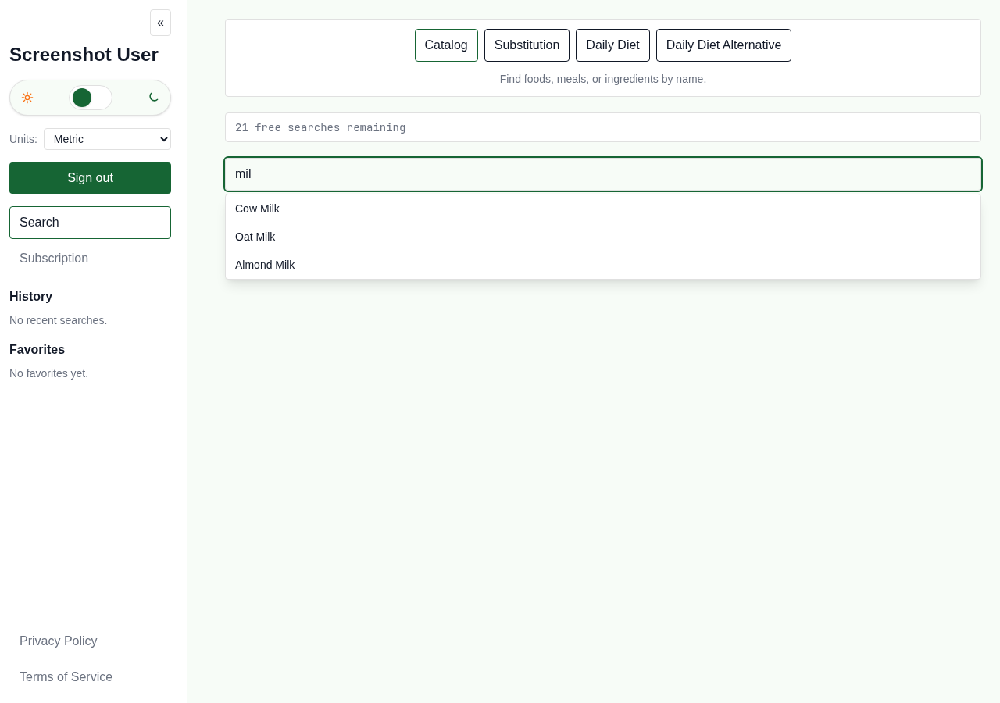
Catalog Autocomplete: mil
Mobile (390x844)

Catalog Search: Cow Milk
Desktop (1280x900)
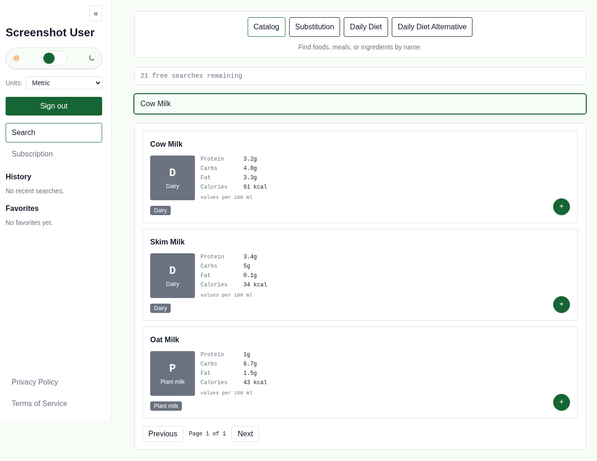
Catalog Search: Cow Milk
Mobile (390x844)
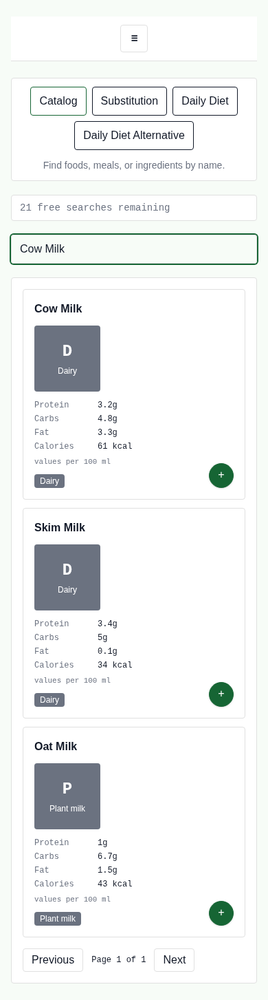
Substitution View
Desktop (1280x900)
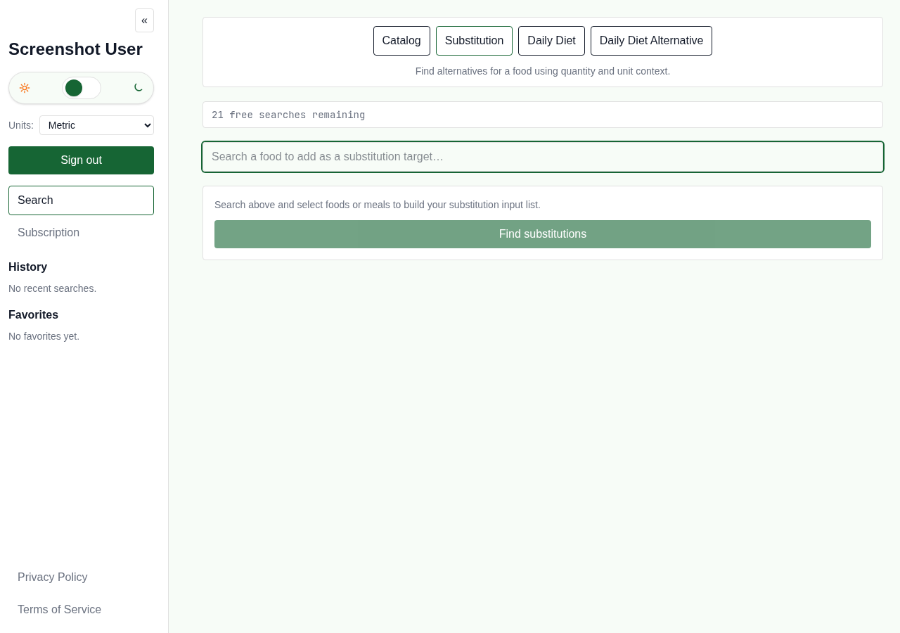
Substitution View
Mobile (390x844)
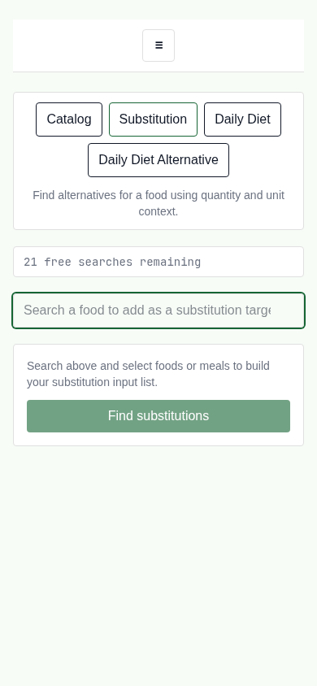
Substitution Search: Apple + Oat Milk
Desktop (1280x900)
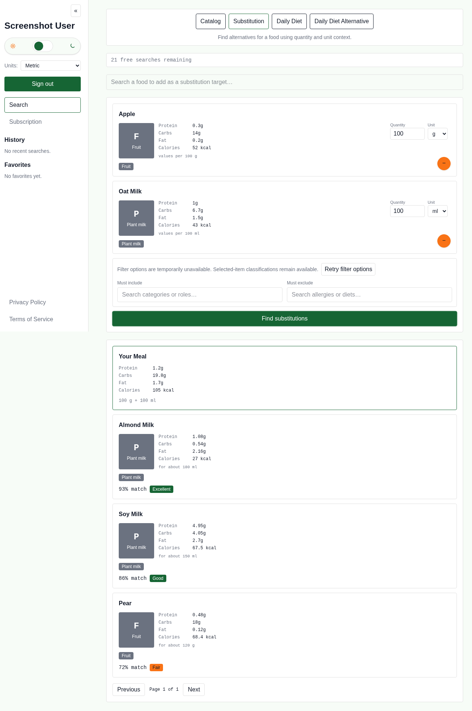
Substitution Search: Apple + Oat Milk
Mobile (390x844)
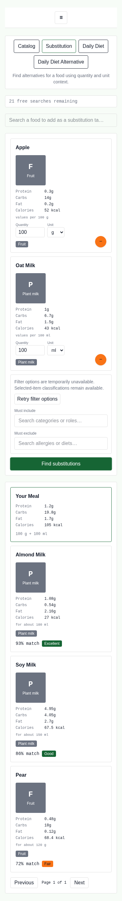
Auth Login View
Desktop (1280x900)

Auth Login View
Mobile (390x844)
Auth Registration View
Desktop (1280x900)

Auth Registration View
Mobile (390x844)

Authenticated Subscription View
Desktop (1280x900)
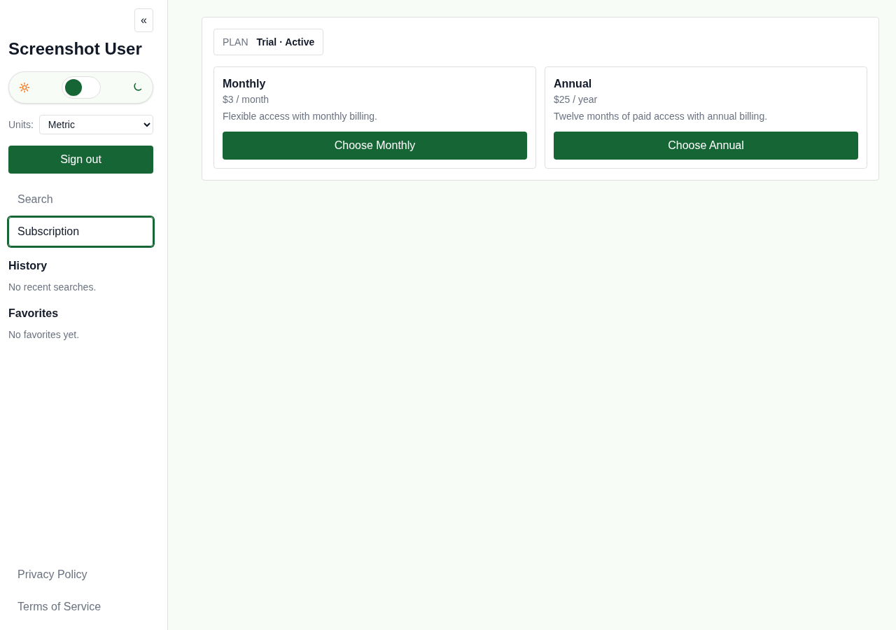
Authenticated Subscription View
Mobile (390x844)

Task 233 Daily Diet Light
Desktop (1280x900)
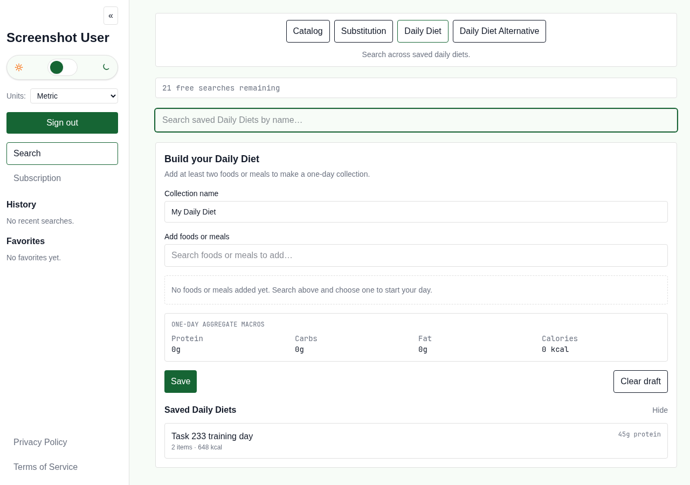
Task 233 Optimization Dark
Desktop (1280x900)
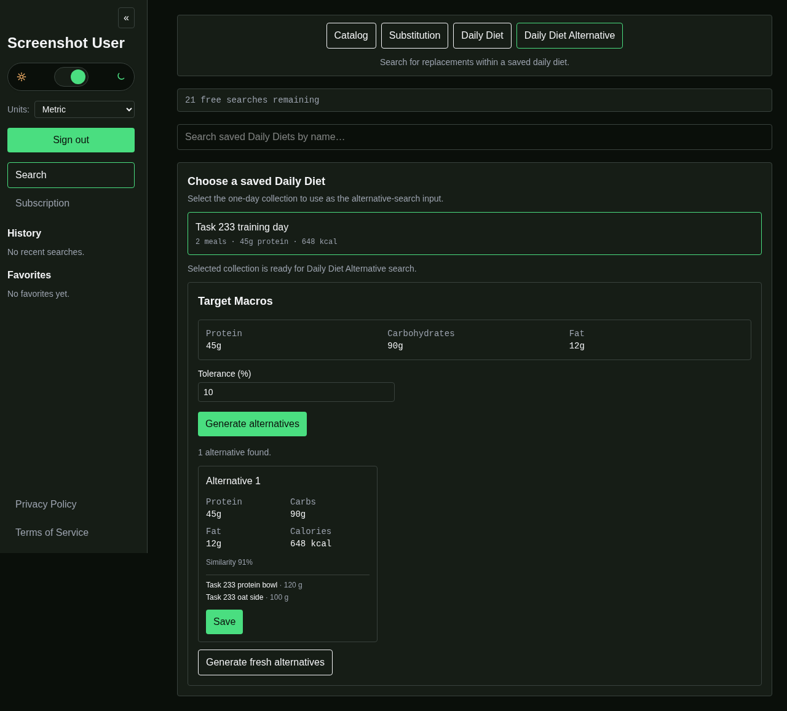
Task 233 Daily Diet Light
Mobile (390x844)
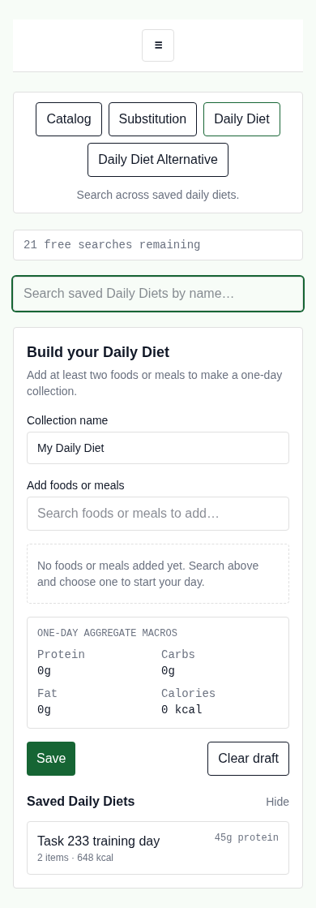
Task 233 Optimization Dark
Mobile (390x844)
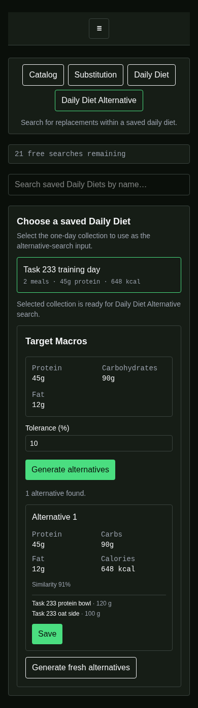
Quality-gate success includes exact semantic validation against current measured coverage. Missing, malformed, stale, over-broad, or unjustified exceptions fail the aggregate. The canonical rationale and evidence are in docs/implementation/04_OPEN.md.
Backend measured scope: 4,523/4,841 statements (93.4%). Each row below records exact Go statement-block coordinates and a validated evidence category.
| Runtime file | Covered/statements | Coverage | Exact uncovered blocks | Reason |
|---|---|---|---|---|
| internal/app/app.go | 109/115 | 94.8% | 97.86-99.4,115.69-117.18,117.18-119.5,122.17-124.4,157.4-161.10 | B3 |
| internal/cache/classification_generation.go | 14/18 | 77.8% | 53.21-55.3,60.16-62.3,69.21-71.3,78.33-80.3 | B3 |
| internal/cache/classification_invalidator.go | 23/26 | 88.5% | 48.54-49.23,49.23-51.5,52.4-52.10 | B3 |
| internal/cache/search_cache.go | 152/167 | 91.0% | 94.16-96.3,109.20-111.3,115.16-117.3,147.16-149.3,158.20-160.3,162.16-164.3,223.68-225.2,229.128-231.2,275.13-276.53,276.53-280.4,294.32-295.101,295.101-297.4,490.65-492.4 | B3 |
| internal/curation/validation.go | 88/93 | 94.6% | 145.132-147.4,150.130-152.4,155.120-157.4,171.64-174.3 | B1 |
| internal/customitem/service.go | 153/165 | 92.7% | 114.24-116.3,118.73-120.3,129.16-131.3,153.32-155.3,170.32-172.3,174.16-176.3,190.32-192.3,207.16-209.3,243.10-244.17,293.70-295.3,368.16-370.3,395.26-397.4 | B1 |
| internal/dataimporter/service.go | 68/77 | 88.3% | 94.68-96.3,99.16-101.3,143.22-145.4,146.20-148.4,160.62-161.29,170.43-172.3,194.23-196.3,198.107-200.4,209.16-211.3 | B1 |
| internal/externaldata/rate_limit.go | 184/186 | 98.9% | 348.14-350.3,398.46-400.3 | B4 |
| internal/httpapi/auth_controller.go | 94/103 | 91.3% | 78.92-80.3,95.92-97.3,104.115-106.3,107.66-109.3,123.92-125.3,136.84-138.3,149.88-151.3,165.66-167.3,233.19-235.3 | B2 |
| internal/httpapi/classification_admin_controller.go | 58/77 | 75.3% | 55.66-57.3,64.49-66.3,74.16-76.3,78.16-80.3,88.16-90.3,92.9-94.3,100.16-102.3,110.16-112.3,114.9-116.3,118.16-120.3,122.16-124.3,126.16-128.3,136.16-138.3,144.16-146.3,148.16-150.3,159.36-161.3,168.49-170.3,178.34-180.3,188.108-190.3 | B2 |
| internal/httpapi/curation_validation.go | 99/108 | 91.7% | 122.37-124.3,149.65-151.3,159.54-161.3,168.57-170.3,198.16-200.3,210.18-212.5,214.11-216.5,227.49-229.5,231.10-232.71 | B1 |
| internal/httpapi/custom_item_controller.go | 99/125 | 79.2% | 30.9-32.3,33.26-35.3,37.16-39.3,53.9-55.3,57.16-59.3,60.26-62.3,74.9-76.3,78.16-80.3,81.26-83.3,85.16-87.3,89.16-91.3,99.9-101.3,103.16-105.3,106.26-108.3,109.85-111.3,119.73-121.3,128.67-130.3,150.59-152.3,153.65-155.3,178.65-180.4,225.2-225.44,232.34-234.3,242.34-244.3,268.43-270.2,276.59-277.159,286.10-287.13 | B2 |
| internal/httpapi/import_controller.go | 45/55 | 81.8% | 56.16-58.3,59.34-61.3,63.9-65.3,67.16-69.3,99.57-101.3,108.59-110.3,134.61-135.192,142.131-143.35,144.10-145.13,151.46-153.2 | B2 |
| internal/httpapi/manual_item_controller.go | 65/88 | 73.9% | 48.16-50.3,51.34-53.3,55.16-57.3,79.16-81.3,82.34-84.3,86.16-88.3,96.16-98.3,99.34-101.3,103.16-105.3,107.16-109.3,119.16-121.3,122.34-124.3,126.16-128.3,138.73-140.3,147.67-149.3,173.2-174.38,188.34-190.3,219.43-221.2,227.60-228.159,231.60-232.126,235.131-236.143,237.10-238.13 | B2 |
| internal/httpapi/profile_controller.go | 34/36 | 94.4% | 58.68-60.5,97.16-99.3 | B2 |
| internal/httpapi/router.go | 228/233 | 97.9% | 192.9-194.3,313.17-315.4,426.24-428.5,432.23-434.4,502.41-503.53 | B3 |
| internal/httpapi/search_validation.go | 189/193 | 97.9% | 396.33-398.102,398.102-400.5,415.94-417.3 | B1 |
| internal/httpapi/user_admin_controller.go | 64/79 | 81.0% | 49.16-51.3,52.22-54.3,56.9-58.3,60.16-62.3,64.28-66.3,74.16-76.3,77.22-79.3,82.41-84.3,89.123-91.3,126.35-128.4,160.46-161.132,162.62-163.36,166.171-167.36,168.10-169.13,181.42-183.2 | B2 |
| internal/itemcurator/service.go | 59/79 | 74.7% | 93.25-95.3,97.73-99.3,104.45-106.3,108.16-110.3,121.66-123.3,130.20-132.3,133.32-135.3,146.20-148.3,150.16-152.3,153.45-155.3,157.16-159.3,160.74-162.3,164.16-166.3,173.20-175.3,176.45-178.3,180.16-182.3,183.52-185.3,193.16-195.3,231.19-233.3,245.44-247.2 | B1 |
| internal/observability/admin_external.go | 99/102 | 97.1% | 63.17-65.3,235.115-237.4,248.10-249.35 | B4 |
| internal/repository/admin_user_repository.go | 45/55 | 81.8% | 60.16-62.3,67.17-69.4,72.35-74.3,81.62-83.3,100.33-102.4,106.67-108.4,126.214-128.3,129.82-131.29,131.29-133.4 | B2 |
| internal/repository/classification_repository.go | 58/65 | 89.2% | 73.36-75.3,99.20-101.3,110.78-112.3,120.77-122.3,153.48-155.3,156.85-158.3,200.165-202.3 | B2 |
| internal/repository/compliance_repository.go | 272/274 | 99.3% | 642.46-644.5,651.52-653.5 | B2 |
| internal/repository/curated_import_repository.go | 98/129 | 76.0% | 64.69-66.3,79.126-81.3,88.102-90.4,93.37-95.3,111.24-113.4,116.184-118.4,119.43-121.4,123.23-125.4,128.36-130.3,134.149-136.3,140.19-142.3,144.16-146.3,157.99-159.3,163.58-165.3,171.73-173.4,177.17-179.4,182.16-184.3,188.16-190.3,192.137-194.3,195.33-197.3,205.563-207.3,208.117-210.3,218.16-220.3,221.32-223.3,254.82-256.3,264.95-266.3,291.47-293.3,307.48-309.3,311.117-313.3,314.163-316.3,318.35-320.3 | B2 |
| internal/repository/custom_food_repository.go | 135/154 | 87.7% | 108.25-110.3,112.16-114.3,118.17-121.4,124.35-127.3,132.62-134.4,144.69-146.3,156.18-158.5,164.18-166.5,170.43-172.4,180.106-182.4,211.30-213.3,228.137-230.3,253.141-255.3,262.68-264.3,265.110-267.3,269.35-271.3,272.19-274.3 | B2 |
| internal/repository/food_repository.go | 199/200 | 99.5% | 241.158-243.2 | B2 |
| internal/repository/manual_food_repository.go | 63/86 | 73.3% | 45.20-47.3,54.20-56.3,63.69-65.3,73.17-75.4,77.62-79.4,81.17-83.4,86.42-88.3,90.16-92.3,96.105-98.3,105.25-107.3,108.68-110.3,112.16-114.3,115.32-117.3,124.20-126.3,128.16-130.3,131.32-133.3,147.117-149.3,160.79-162.3,185.140-187.3,194.35-196.3,197.110-199.3,201.35-203.3,204.19-206.3 | B2 |
| internal/search/filter_options.go | 79/80 | 98.8% | 98.70-100.3 | B1 |
| internal/search/substitution_service.go | 211/225 | 93.8% | 60.16-62.3,159.4-159.22,187.53-189.3,191.43-193.4,266.30-268.4,270.17-272.4,275.72-277.5,318.28-321.17,321.17-323.4,334.16-336.3,340.17-342.4,471.35-473.3 | B1 |
| internal/useradmin/service.go | 61/65 | 93.8% | 115.81-117.3,123.16-125.3,133.17-135.4,195.17-197.4 | B1 |
| internal/userdata/export.go | 93/98 | 94.9% | 108.17-110.4,114.16-116.3,169.17-171.4,176.17-178.4,243.39-245.3 | B1 |
Frontend measured aggregate: 95.46% functions and 96.06% lines. Only current Phase 08 exceptions are shown below; the aggregate contract also validates every carried frontend exception semantically.
| Runtime row | Owning phase | Functions | Lines | Uncovered lines | Reason |
|---|---|---|---|---|---|
| src/lib/admin-workflows.ts | Phase 08 | 90.91% | 98.51% | - | F1 |
| src/lib/api/account-data-client.ts | Phase 08 | 100.00% | 98.00% | - | F1 |
| src/lib/api/admin-client.ts | Phase 08 | 97.22% | 100.00% | - | F2 |
| src/lib/api/generated.ts | Phase 08 | 100.00% | 98.98% | 185 | F3 |
| File | Function | Declaration Line | Status / Coverage |
|---|---|---|---|
| github.com/wiktor-jedski/mealswapp/backend/internal/app/app.go | New() |
40 | 100.0% |
| github.com/wiktor-jedski/mealswapp/backend/internal/app/app.go | NewProduction() |
46 | 100.0% |
| github.com/wiktor-jedski/mealswapp/backend/internal/app/app.go | newProduction() |
53 | 92.9% |
| github.com/wiktor-jedski/mealswapp/backend/internal/app/app.go | Autocomplete() |
227 | 100.0% |
| github.com/wiktor-jedski/mealswapp/backend/internal/app/app.go | StartOAuth() |
251 | 100.0% |
| github.com/wiktor-jedski/mealswapp/backend/internal/app/app.go | CompleteOAuth() |
257 | 100.0% |
| github.com/wiktor-jedski/mealswapp/backend/internal/app/app.go | newLocalKeyLoader() |
295 | 100.0% |
| github.com/wiktor-jedski/mealswapp/backend/internal/app/app.go | ActiveKey() |
311 | 100.0% |
| github.com/wiktor-jedski/mealswapp/backend/internal/app/app.go | Key() |
317 | 100.0% |
| github.com/wiktor-jedski/mealswapp/backend/internal/app/app.go | ActiveLookupKey() |
326 | 100.0% |
| github.com/wiktor-jedski/mealswapp/backend/internal/app/app.go | LookupKey() |
332 | 100.0% |
| github.com/wiktor-jedski/mealswapp/backend/internal/app/app.go | ActiveSigningKey() |
338 | 100.0% |
| github.com/wiktor-jedski/mealswapp/backend/internal/app/app.go | SigningKey() |
344 | 100.0% |
| github.com/wiktor-jedski/mealswapp/backend/internal/app/app.go | PurgeUser() |
359 | 100.0% |
| github.com/wiktor-jedski/mealswapp/backend/internal/app/oauth_gateway.go | NewGoogleOAuthGateway() |
26 | 100.0% |
| github.com/wiktor-jedski/mealswapp/backend/internal/app/oauth_gateway.go | StartOAuth() |
35 | 83.3% |
| github.com/wiktor-jedski/mealswapp/backend/internal/app/oauth_gateway.go | CompleteOAuth() |
48 | 0.0% |
| github.com/wiktor-jedski/mealswapp/backend/internal/auth/lockout.go | NewAccountLockoutTracker() |
30 | 100.0% |
| github.com/wiktor-jedski/mealswapp/backend/internal/auth/lockout.go | Check() |
36 | 100.0% |
| github.com/wiktor-jedski/mealswapp/backend/internal/auth/lockout.go | RecordFailure() |
46 | 100.0% |
| github.com/wiktor-jedski/mealswapp/backend/internal/auth/lockout.go | RecordSuccess() |
57 | 100.0% |
| github.com/wiktor-jedski/mealswapp/backend/internal/auth/lockout.go | toLockoutState() |
68 | 100.0% |
| github.com/wiktor-jedski/mealswapp/backend/internal/auth/lockout.go | Locked() |
79 | 100.0% |
| github.com/wiktor-jedski/mealswapp/backend/internal/auth/oauth.go | CompleteOAuth() |
49 | 100.0% |
| github.com/wiktor-jedski/mealswapp/backend/internal/auth/oauth.go | LinkOAuthIdentity() |
118 | 100.0% |
| github.com/wiktor-jedski/mealswapp/backend/internal/auth/oauth.go | linkOAuthIdentity() |
145 | 100.0% |
| github.com/wiktor-jedski/mealswapp/backend/internal/auth/oauth.go | emailLookupAndEnvelope() |
166 | 100.0% |
| github.com/wiktor-jedski/mealswapp/backend/internal/auth/oauth.go | oauthStore() |
180 | 100.0% |
| github.com/wiktor-jedski/mealswapp/backend/internal/auth/oauth.go | normalizeOAuthProfile() |
190 | 100.0% |
| github.com/wiktor-jedski/mealswapp/backend/internal/auth/oauth.go | Error() |
221 | 100.0% |
| github.com/wiktor-jedski/mealswapp/backend/internal/auth/password.go | DefaultPasswordHashParams() |
37 | 100.0% |
| github.com/wiktor-jedski/mealswapp/backend/internal/auth/password.go | NewPasswordHasher() |
43 | 100.0% |
| github.com/wiktor-jedski/mealswapp/backend/internal/auth/password.go | NewDefaultPasswordHasher() |
52 | 75.0% |
| github.com/wiktor-jedski/mealswapp/backend/internal/auth/password.go | HashPassword() |
62 | 100.0% |
| github.com/wiktor-jedski/mealswapp/backend/internal/auth/password.go | VerifyPassword() |
77 | 100.0% |
| github.com/wiktor-jedski/mealswapp/backend/internal/auth/password.go | parseEncodedHash() |
92 | 100.0% |
| github.com/wiktor-jedski/mealswapp/backend/internal/auth/password.go | parseHashParams() |
111 | 100.0% |
| github.com/wiktor-jedski/mealswapp/backend/internal/auth/registration.go | NewRegistrationService() |
29 | 100.0% |
| github.com/wiktor-jedski/mealswapp/backend/internal/auth/registration.go | Register() |
35 | 100.0% |
| github.com/wiktor-jedski/mealswapp/backend/internal/auth/service.go | NewCoreAuthService() |
76 | 100.0% |
| github.com/wiktor-jedski/mealswapp/backend/internal/auth/service.go | Register() |
82 | 100.0% |
| github.com/wiktor-jedski/mealswapp/backend/internal/auth/service.go | Login() |
114 | 100.0% |
| github.com/wiktor-jedski/mealswapp/backend/internal/auth/service.go | Refresh() |
152 | 100.0% |
| github.com/wiktor-jedski/mealswapp/backend/internal/auth/service.go | Logout() |
174 | 100.0% |
| github.com/wiktor-jedski/mealswapp/backend/internal/auth/service.go | MarkEmailVerified() |
187 | 100.0% |
| github.com/wiktor-jedski/mealswapp/backend/internal/auth/service.go | RequestPasswordReset() |
193 | 100.0% |
| github.com/wiktor-jedski/mealswapp/backend/internal/auth/service.go | ConsumePasswordReset() |
218 | 100.0% |
| github.com/wiktor-jedski/mealswapp/backend/internal/auth/service.go | createSession() |
235 | 100.0% |
| github.com/wiktor-jedski/mealswapp/backend/internal/auth/service.go | toRepositoryEncryptedField() |
260 | 100.0% |
| github.com/wiktor-jedski/mealswapp/backend/internal/auth/service.go | toRepositoryLookupDigest() |
266 | 100.0% |
| github.com/wiktor-jedski/mealswapp/backend/internal/auth/service.go | Error() |
294 | 100.0% |
| github.com/wiktor-jedski/mealswapp/backend/internal/auth/token.go | NewJWTManager() |
68 | 100.0% |
| github.com/wiktor-jedski/mealswapp/backend/internal/auth/token.go | CreateAccessToken() |
74 | 100.0% |
| github.com/wiktor-jedski/mealswapp/backend/internal/auth/token.go | ValidateAccessToken() |
107 | 100.0% |
| github.com/wiktor-jedski/mealswapp/backend/internal/auth/token.go | CreateRefreshToken() |
138 | 100.0% |
| github.com/wiktor-jedski/mealswapp/backend/internal/auth/token.go | HashRefreshToken() |
149 | 100.0% |
| github.com/wiktor-jedski/mealswapp/backend/internal/auth/token.go | VerifyRefreshTokenHash() |
156 | 100.0% |
| github.com/wiktor-jedski/mealswapp/backend/internal/auth/token.go | DecideRefreshFamilyState() |
163 | 100.0% |
| github.com/wiktor-jedski/mealswapp/backend/internal/auth/token.go | toClaims() |
195 | 100.0% |
| github.com/wiktor-jedski/mealswapp/backend/internal/auth/token.go | signJWT() |
216 | 77.8% |
| github.com/wiktor-jedski/mealswapp/backend/internal/auth/token.go | parseJWT() |
232 | 100.0% |
| github.com/wiktor-jedski/mealswapp/backend/internal/auth/token.go | jwtSignature() |
262 | 100.0% |
| github.com/wiktor-jedski/mealswapp/backend/internal/cache/classification_generation.go | NewClassificationGeneration() |
43 | 66.7% |
| github.com/wiktor-jedski/mealswapp/backend/internal/cache/classification_generation.go | Current() |
52 | 75.0% |
| github.com/wiktor-jedski/mealswapp/backend/internal/cache/classification_generation.go | Advance() |
68 | 66.7% |
| github.com/wiktor-jedski/mealswapp/backend/internal/cache/classification_generation.go | SetIfCurrent() |
77 | 75.0% |
| github.com/wiktor-jedski/mealswapp/backend/internal/cache/classification_invalidator.go | NewClassificationInvalidator() |
33 | 100.0% |
| github.com/wiktor-jedski/mealswapp/backend/internal/cache/classification_invalidator.go | Invalidate() |
44 | 85.7% |
| github.com/wiktor-jedski/mealswapp/backend/internal/cache/redis.go | Open() |
9 | 100.0% |
| github.com/wiktor-jedski/mealswapp/backend/internal/cache/search_cache.go | String() |
57 | 100.0% |
| github.com/wiktor-jedski/mealswapp/backend/internal/cache/search_cache.go | GetSearchResponse() |
86 | 92.9% |
| github.com/wiktor-jedski/mealswapp/backend/internal/cache/search_cache.go | SetSearchResponse() |
108 | 80.0% |
| github.com/wiktor-jedski/mealswapp/backend/internal/cache/search_cache.go | searchCacheKeyForGeneration() |
126 | 100.0% |
| github.com/wiktor-jedski/mealswapp/backend/internal/cache/search_cache.go | SearchResponseCacheMetadata() |
133 | 100.0% |
| github.com/wiktor-jedski/mealswapp/backend/internal/cache/search_cache.go | GetSimilarityCalculation() |
140 | 88.9% |
| github.com/wiktor-jedski/mealswapp/backend/internal/cache/search_cache.go | SetSimilarityCalculation() |
156 | 77.8% |
| github.com/wiktor-jedski/mealswapp/backend/internal/cache/search_cache.go | similarityCacheKeyForGeneration() |
173 | 100.0% |
| github.com/wiktor-jedski/mealswapp/backend/internal/cache/search_cache.go | SimilarityCalculationCacheMetadata() |
180 | 100.0% |
| github.com/wiktor-jedski/mealswapp/backend/internal/cache/search_cache.go | ttl() |
187 | 100.0% |
| github.com/wiktor-jedski/mealswapp/backend/internal/cache/search_cache.go | similarityTTL() |
196 | 100.0% |
| github.com/wiktor-jedski/mealswapp/backend/internal/cache/search_cache.go | Get() |
211 | 100.0% |
| github.com/wiktor-jedski/mealswapp/backend/internal/cache/search_cache.go | Set() |
217 | 100.0% |
| github.com/wiktor-jedski/mealswapp/backend/internal/cache/search_cache.go | Current() |
223 | 0.0% |
| github.com/wiktor-jedski/mealswapp/backend/internal/cache/search_cache.go | SetIfCurrent() |
229 | 0.0% |
| github.com/wiktor-jedski/mealswapp/backend/internal/cache/search_cache.go | GetRedis() |
235 | 100.0% |
| github.com/wiktor-jedski/mealswapp/backend/internal/cache/search_cache.go | SetRedis() |
256 | 100.0% |
| github.com/wiktor-jedski/mealswapp/backend/internal/cache/search_cache.go | GetOrLoadSearchResponse() |
269 | 73.9% |
| github.com/wiktor-jedski/mealswapp/backend/internal/cache/search_cache.go | GetOrLoadAutocompleteResponse() |
306 | 100.0% |
| github.com/wiktor-jedski/mealswapp/backend/internal/cache/search_cache.go | GetOrLoadSimilarityResults() |
324 | 100.0% |
| github.com/wiktor-jedski/mealswapp/backend/internal/cache/search_cache.go | BuildSearchCacheKey() |
340 | 100.0% |
| github.com/wiktor-jedski/mealswapp/backend/internal/cache/search_cache.go | BuildAutocompleteCacheKey() |
351 | 100.0% |
| github.com/wiktor-jedski/mealswapp/backend/internal/cache/search_cache.go | BuildSimilarityCacheKey() |
361 | 100.0% |
| github.com/wiktor-jedski/mealswapp/backend/internal/cache/search_cache.go | SearchCacheMetadata() |
372 | 100.0% |
| github.com/wiktor-jedski/mealswapp/backend/internal/cache/search_cache.go | cacheMetadataPtr() |
383 | 100.0% |
| github.com/wiktor-jedski/mealswapp/backend/internal/cache/search_cache.go | responseWithoutCacheMetadata() |
390 | 100.0% |
| github.com/wiktor-jedski/mealswapp/backend/internal/cache/search_cache.go | autocompleteWithoutCacheMetadata() |
397 | 100.0% |
| github.com/wiktor-jedski/mealswapp/backend/internal/cache/search_cache.go | canonicalSearchRequest() |
432 | 100.0% |
| github.com/wiktor-jedski/mealswapp/backend/internal/cache/search_cache.go | canonicalFilters() |
449 | 100.0% |
| github.com/wiktor-jedski/mealswapp/backend/internal/cache/search_cache.go | canonicalSubstitutionInputs() |
472 | 93.3% |
| github.com/wiktor-jedski/mealswapp/backend/internal/cache/search_cache.go | normalizeSpaces() |
503 | 100.0% |
| github.com/wiktor-jedski/mealswapp/backend/internal/cache/search_cache.go | stableHash() |
509 | 100.0% |
| github.com/wiktor-jedski/mealswapp/backend/internal/cache/user_purger.go | NewUserPurger() |
25 | 100.0% |
| github.com/wiktor-jedski/mealswapp/backend/internal/cache/user_purger.go | PurgeUser() |
34 | 100.0% |
| github.com/wiktor-jedski/mealswapp/backend/internal/compliance/disclaimer.go | NewDisclaimerService() |
39 | 100.0% |
| github.com/wiktor-jedski/mealswapp/backend/internal/compliance/disclaimer.go | GetDisclaimer() |
45 | 100.0% |
| github.com/wiktor-jedski/mealswapp/backend/internal/compliance/disclaimer.go | fallbackDisclaimerMarkdown() |
65 | 100.0% |
| github.com/wiktor-jedski/mealswapp/backend/internal/config/config.go | Load() |
102 | 89.4% |
| github.com/wiktor-jedski/mealswapp/backend/internal/config/config.go | loadOAuthConfig() |
186 | 100.0% |
| github.com/wiktor-jedski/mealswapp/backend/internal/config/config.go | loadBillingConfig() |
209 | 93.8% |
| github.com/wiktor-jedski/mealswapp/backend/internal/config/config.go | requireProductionBillingConfig() |
254 | 100.0% |
| github.com/wiktor-jedski/mealswapp/backend/internal/config/config.go | loadAccountConfig() |
269 | 100.0% |
| github.com/wiktor-jedski/mealswapp/backend/internal/config/config.go | positiveDuration() |
316 | 100.0% |
| github.com/wiktor-jedski/mealswapp/backend/internal/config/config.go | splitCSV() |
326 | 100.0% |
| github.com/wiktor-jedski/mealswapp/backend/internal/config/config.go | env() |
338 | 100.0% |
| github.com/wiktor-jedski/mealswapp/backend/internal/config/config.go | requireURLScheme() |
348 | 100.0% |
| github.com/wiktor-jedski/mealswapp/backend/internal/config/config.go | validateStripeSecretKey() |
361 | 100.0% |
| github.com/wiktor-jedski/mealswapp/backend/internal/config/config.go | validateStripeWebhookSecret() |
370 | 100.0% |
| github.com/wiktor-jedski/mealswapp/backend/internal/config/config.go | validateStripePriceID() |
379 | 100.0% |
| github.com/wiktor-jedski/mealswapp/backend/internal/config/config.go | validateCheckoutRedirectURL() |
388 | 90.9% |
| github.com/wiktor-jedski/mealswapp/backend/internal/curation/validation.go | NewInputNormalizer() |
87 | 100.0% |
| github.com/wiktor-jedski/mealswapp/backend/internal/curation/validation.go | RecordRejection() |
93 | 100.0% |
| github.com/wiktor-jedski/mealswapp/backend/internal/curation/validation.go | NormalizeExternalSearch() |
99 | 100.0% |
| github.com/wiktor-jedski/mealswapp/backend/internal/curation/validation.go | NormalizeItem() |
118 | 82.0% |
| github.com/wiktor-jedski/mealswapp/backend/internal/curation/validation.go | NormalizeClassification() |
199 | 100.0% |
| github.com/wiktor-jedski/mealswapp/backend/internal/curation/validation.go | normalize() |
209 | 100.0% |
| github.com/wiktor-jedski/mealswapp/backend/internal/curation/validation.go | log() |
223 | 100.0% |
| github.com/wiktor-jedski/mealswapp/backend/internal/curation/validation.go | allowedLogField() |
235 | 100.0% |
| github.com/wiktor-jedski/mealswapp/backend/internal/curation/validation.go | validMacrosWithinBounds() |
253 | 100.0% |
| github.com/wiktor-jedski/mealswapp/backend/internal/curation/validation.go | validOptionalCurationMeasure() |
259 | 100.0% |
| github.com/wiktor-jedski/mealswapp/backend/internal/curation/validation.go | validateMicronutrients() |
265 | 100.0% |
| github.com/wiktor-jedski/mealswapp/backend/internal/customitem/service.go | WithTelemetry() |
97 | 100.0% |
| github.com/wiktor-jedski/mealswapp/backend/internal/customitem/service.go | NewService() |
106 | 100.0% |
| github.com/wiktor-jedski/mealswapp/backend/internal/customitem/service.go | Create() |
112 | 86.4% |
| github.com/wiktor-jedski/mealswapp/backend/internal/customitem/service.go | Get() |
148 | 90.0% |
| github.com/wiktor-jedski/mealswapp/backend/internal/customitem/service.go | Update() |
165 | 83.3% |
| github.com/wiktor-jedski/mealswapp/backend/internal/customitem/service.go | Delete() |
185 | 85.7% |
| github.com/wiktor-jedski/mealswapp/backend/internal/customitem/service.go | List() |
198 | 92.3% |
| github.com/wiktor-jedski/mealswapp/backend/internal/customitem/service.go | recordLifecycle() |
219 | 100.0% |
| github.com/wiktor-jedski/mealswapp/backend/internal/customitem/service.go | lifecycleOutcome() |
227 | 90.0% |
| github.com/wiktor-jedski/mealswapp/backend/internal/customitem/service.go | createResultFromClaim() |
250 | 100.0% |
| github.com/wiktor-jedski/mealswapp/backend/internal/customitem/service.go | ValidateRequest() |
260 | 95.0% |
| github.com/wiktor-jedski/mealswapp/backend/internal/customitem/service.go | validNonnegative() |
322 | 100.0% |
| github.com/wiktor-jedski/mealswapp/backend/internal/customitem/service.go | validOptionalPositive() |
328 | 100.0% |
| github.com/wiktor-jedski/mealswapp/backend/internal/customitem/service.go | validText() |
334 | 100.0% |
| github.com/wiktor-jedski/mealswapp/backend/internal/customitem/service.go | validateDensity() |
340 | 88.9% |
| github.com/wiktor-jedski/mealswapp/backend/internal/customitem/service.go | normalizedIDs() |
358 | 75.0% |
| github.com/wiktor-jedski/mealswapp/backend/internal/customitem/service.go | requestHash() |
366 | 80.0% |
| github.com/wiktor-jedski/mealswapp/backend/internal/customitem/service.go | validateIdentity() |
377 | 100.0% |
| github.com/wiktor-jedski/mealswapp/backend/internal/customitem/service.go | validationError() |
386 | 100.0% |
| github.com/wiktor-jedski/mealswapp/backend/internal/customitem/service.go | toEntity() |
392 | 83.3% |
| github.com/wiktor-jedski/mealswapp/backend/internal/customitem/service.go | fromEntity() |
412 | 100.0% |
| github.com/wiktor-jedski/mealswapp/backend/internal/customitem/service.go | classificationSummaries() |
430 | 100.0% |
| github.com/wiktor-jedski/mealswapp/backend/internal/dailydiet/service.go | NewService() |
118 | 100.0% |
| github.com/wiktor-jedski/mealswapp/backend/internal/dailydiet/service.go | Create() |
128 | 78.1% |
| github.com/wiktor-jedski/mealswapp/backend/internal/dailydiet/service.go | Get() |
179 | 66.7% |
| github.com/wiktor-jedski/mealswapp/backend/internal/dailydiet/service.go | List() |
188 | 78.6% |
| github.com/wiktor-jedski/mealswapp/backend/internal/dailydiet/service.go | Replace() |
212 | 70.6% |
| github.com/wiktor-jedski/mealswapp/backend/internal/dailydiet/service.go | Delete() |
241 | 70.0% |
| github.com/wiktor-jedski/mealswapp/backend/internal/dailydiet/service.go | load() |
260 | 83.3% |
| github.com/wiktor-jedski/mealswapp/backend/internal/dailydiet/service.go | validateFoodObjects() |
273 | 71.4% |
| github.com/wiktor-jedski/mealswapp/backend/internal/dailydiet/service.go | prepareCreate() |
288 | 96.7% |
| github.com/wiktor-jedski/mealswapp/backend/internal/dailydiet/service.go | createResultFromClaim() |
330 | 100.0% |
| github.com/wiktor-jedski/mealswapp/backend/internal/dailydiet/service.go | project() |
341 | 95.0% |
| github.com/wiktor-jedski/mealswapp/backend/internal/dailydiet/service.go | repositoryEntryFoodObject() |
369 | 100.0% |
| github.com/wiktor-jedski/mealswapp/backend/internal/dailydiet/service.go | normalizeRequest() |
378 | 63.2% |
| github.com/wiktor-jedski/mealswapp/backend/internal/dailydiet/service.go | normalizeFoodObjectEntries() |
410 | 100.0% |
| github.com/wiktor-jedski/mealswapp/backend/internal/dailydiet/service.go | toRepositoryEntries() |
423 | 100.0% |
| github.com/wiktor-jedski/mealswapp/backend/internal/dailydiet/service.go | foodObjectNutrition() |
433 | 70.0% |
| github.com/wiktor-jedski/mealswapp/backend/internal/dailydiet/service.go | quantityInMealBase() |
454 | 84.6% |
| github.com/wiktor-jedski/mealswapp/backend/internal/dailydiet/service.go | validateIdentity() |
479 | 60.0% |
| github.com/wiktor-jedski/mealswapp/backend/internal/dailydiet/service.go | validateIdempotencyKey() |
491 | 100.0% |
| github.com/wiktor-jedski/mealswapp/backend/internal/dailydiet/service.go | requestHash() |
501 | 80.0% |
| github.com/wiktor-jedski/mealswapp/backend/internal/dailydiet/service.go | validationError() |
515 | 100.0% |
| github.com/wiktor-jedski/mealswapp/backend/internal/dailydiet/service.go | round4() |
521 | 100.0% |
| github.com/wiktor-jedski/mealswapp/backend/internal/database/postgres.go | Open() |
30 | 100.0% |
| github.com/wiktor-jedski/mealswapp/backend/internal/database/postgres.go | Ping() |
40 | 100.0% |
| github.com/wiktor-jedski/mealswapp/backend/internal/database/postgres.go | Close() |
46 | 100.0% |
| github.com/wiktor-jedski/mealswapp/backend/internal/database/postgres.go | Exec() |
52 | 100.0% |
| github.com/wiktor-jedski/mealswapp/backend/internal/database/postgres.go | Query() |
58 | 100.0% |
| github.com/wiktor-jedski/mealswapp/backend/internal/database/postgres.go | QueryRow() |
64 | 100.0% |
| github.com/wiktor-jedski/mealswapp/backend/internal/database/postgres.go | Begin() |
70 | 100.0% |
| github.com/wiktor-jedski/mealswapp/backend/internal/dataimporter/service.go | NewService() |
63 | 100.0% |
| github.com/wiktor-jedski/mealswapp/backend/internal/dataimporter/service.go | WithTelemetry() |
67 | 100.0% |
| github.com/wiktor-jedski/mealswapp/backend/internal/dataimporter/service.go | Confirm() |
76 | 92.3% |
| github.com/wiktor-jedski/mealswapp/backend/internal/dataimporter/service.go | RecordCommittedOutcome() |
124 | 100.0% |
| github.com/wiktor-jedski/mealswapp/backend/internal/dataimporter/service.go | importTelemetryProvider() |
132 | 100.0% |
| github.com/wiktor-jedski/mealswapp/backend/internal/dataimporter/service.go | importTelemetryOutcome() |
141 | 76.9% |
| github.com/wiktor-jedski/mealswapp/backend/internal/dataimporter/service.go | NormalizeRequest() |
169 | 90.9% |
| github.com/wiktor-jedski/mealswapp/backend/internal/dataimporter/service.go | validMicronutrientValues() |
193 | 66.7% |
| github.com/wiktor-jedski/mealswapp/backend/internal/dataimporter/service.go | requestHash() |
207 | 80.0% |
| github.com/wiktor-jedski/mealswapp/backend/internal/dataimporter/service.go | toEntity() |
218 | 100.0% |
| github.com/wiktor-jedski/mealswapp/backend/internal/dataimporter/service.go | validationError() |
238 | 100.0% |
| github.com/wiktor-jedski/mealswapp/backend/internal/deletionworker/account_deletion.go | RunAccountDeletionProcessor() |
34 | 100.0% |
| github.com/wiktor-jedski/mealswapp/backend/internal/deletionworker/account_deletion.go | recordAccountDeletionMetric() |
80 | 100.0% |
| github.com/wiktor-jedski/mealswapp/backend/internal/entitlement/manager.go | NewEntitlementManager() |
78 | 100.0% |
| github.com/wiktor-jedski/mealswapp/backend/internal/entitlement/manager.go | CheckEntitlement() |
84 | 100.0% |
| github.com/wiktor-jedski/mealswapp/backend/internal/entitlement/manager.go | Decide() |
90 | 100.0% |
| github.com/wiktor-jedski/mealswapp/backend/internal/entitlement/manager.go | decideFromEntitlement() |
110 | 100.0% |
| github.com/wiktor-jedski/mealswapp/backend/internal/entitlement/manager.go | freeFallbackEntitlement() |
139 | 100.0% |
| github.com/wiktor-jedski/mealswapp/backend/internal/entitlement/manager.go | validFeature() |
151 | 100.0% |
| github.com/wiktor-jedski/mealswapp/backend/internal/entitlement/manager.go | freeFeature() |
162 | 100.0% |
| github.com/wiktor-jedski/mealswapp/backend/internal/entitlement/manager.go | IsEntitlementValidationError() |
168 | 100.0% |
| github.com/wiktor-jedski/mealswapp/backend/internal/entitlement/status.go | NewStatusService() |
36 | 0.0% |
| github.com/wiktor-jedski/mealswapp/backend/internal/entitlement/status.go | NewStatusServiceWithClock() |
42 | 0.0% |
| github.com/wiktor-jedski/mealswapp/backend/internal/entitlement/status.go | GetEntitlementStatus() |
51 | 0.0% |
| github.com/wiktor-jedski/mealswapp/backend/internal/entitlement/status.go | allowedSearchModes() |
92 | 0.0% |
| github.com/wiktor-jedski/mealswapp/backend/internal/entitlement/status.go | modeForFeature() |
112 | 0.0% |
| github.com/wiktor-jedski/mealswapp/backend/internal/entitlement/status.go | billingRecoveryState() |
127 | 0.0% |
| github.com/wiktor-jedski/mealswapp/backend/internal/entitlement/trial_tracker.go | NewTrialTracker() |
21 | 100.0% |
| github.com/wiktor-jedski/mealswapp/backend/internal/entitlement/trial_tracker.go | NewTrialTrackerWithClock() |
27 | 100.0% |
| github.com/wiktor-jedski/mealswapp/backend/internal/entitlement/trial_tracker.go | ActivateFirstLoginTrial() |
36 | 0.0% |
| github.com/wiktor-jedski/mealswapp/backend/internal/entitlement/trial_tracker.go | StartTrial() |
43 | 100.0% |
| github.com/wiktor-jedski/mealswapp/backend/internal/entitlement/trial_tracker.go | ExpireTrials() |
72 | 81.2% |
| github.com/wiktor-jedski/mealswapp/backend/internal/entitlement/trial_tracker.go | freeActiveEntitlement() |
100 | 100.0% |
| github.com/wiktor-jedski/mealswapp/backend/internal/entitlement/trial_tracker.go | paidModes() |
112 | 100.0% |
| github.com/wiktor-jedski/mealswapp/backend/internal/entitlement/usage_limiter.go | NewUsageLimiter() |
73 | 100.0% |
| github.com/wiktor-jedski/mealswapp/backend/internal/entitlement/usage_limiter.go | NewUsageLimiterWithClock() |
79 | 100.0% |
| github.com/wiktor-jedski/mealswapp/backend/internal/entitlement/usage_limiter.go | CheckSearchAllowed() |
88 | 97.3% |
| github.com/wiktor-jedski/mealswapp/backend/internal/entitlement/usage_limiter.go | RecordCompletedSearch() |
144 | 91.7% |
| github.com/wiktor-jedski/mealswapp/backend/internal/entitlement/usage_limiter.go | validate() |
181 | 100.0% |
| github.com/wiktor-jedski/mealswapp/backend/internal/entitlement/usage_limiter.go | anonymousDecision() |
190 | 100.0% |
| github.com/wiktor-jedski/mealswapp/backend/internal/entitlement/usage_limiter.go | usageDecisionFromEntitlement() |
203 | 100.0% |
| github.com/wiktor-jedski/mealswapp/backend/internal/entitlement/usage_limiter.go | effectiveFreeUsageScope() |
220 | 100.0% |
| github.com/wiktor-jedski/mealswapp/backend/internal/entitlement/usage_limiter.go | IsUsageLimitError() |
232 | 100.0% |
| github.com/wiktor-jedski/mealswapp/backend/internal/entitlement/usage_limiter.go | lock() |
245 | 100.0% |
| github.com/wiktor-jedski/mealswapp/backend/internal/entitlement/usage_limiter.go | IsUsageValidationError() |
266 | 100.0% |
| github.com/wiktor-jedski/mealswapp/backend/internal/externaldata/normalizer.go | WithTelemetry() |
66 | 100.0% |
| github.com/wiktor-jedski/mealswapp/backend/internal/externaldata/normalizer.go | NewDataNormalizer() |
75 | 100.0% |
| github.com/wiktor-jedski/mealswapp/backend/internal/externaldata/normalizer.go | NormalizeRecords() |
81 | 100.0% |
| github.com/wiktor-jedski/mealswapp/backend/internal/externaldata/normalizer.go | NormalizeRecordsWithWarnings() |
105 | 100.0% |
| github.com/wiktor-jedski/mealswapp/backend/internal/externaldata/normalizer.go | boundedProvider() |
136 | 100.0% |
| github.com/wiktor-jedski/mealswapp/backend/internal/externaldata/normalizer.go | NormalizeExternalRecord() |
145 | 100.0% |
| github.com/wiktor-jedski/mealswapp/backend/internal/externaldata/normalizer.go | NormalizeExternalRecordWithOptions() |
151 | 100.0% |
| github.com/wiktor-jedski/mealswapp/backend/internal/externaldata/normalizer.go | validateExternalRecord() |
266 | 100.0% |
| github.com/wiktor-jedski/mealswapp/backend/internal/externaldata/normalizer.go | invalidNormalization() |
285 | 100.0% |
| github.com/wiktor-jedski/mealswapp/backend/internal/externaldata/normalizer.go | canonicalQuantity() |
291 | 100.0% |
| github.com/wiktor-jedski/mealswapp/backend/internal/externaldata/normalizer.go | inferPhysicalState() |
304 | 100.0% |
| github.com/wiktor-jedski/mealswapp/backend/internal/externaldata/normalizer.go | resolveDensity() |
318 | 100.0% |
| github.com/wiktor-jedski/mealswapp/backend/internal/externaldata/normalizer.go | trustedUSDADensity() |
343 | 100.0% |
| github.com/wiktor-jedski/mealswapp/backend/internal/externaldata/normalizer.go | volumeMilliliters() |
361 | 100.0% |
| github.com/wiktor-jedski/mealswapp/backend/internal/externaldata/normalizer.go | normalizeVolumeAlias() |
383 | 100.0% |
| github.com/wiktor-jedski/mealswapp/backend/internal/externaldata/normalizer.go | setServingMeasures() |
404 | 100.0% |
| github.com/wiktor-jedski/mealswapp/backend/internal/externaldata/normalizer.go | finiteRoundedMeasure() |
451 | 100.0% |
| github.com/wiktor-jedski/mealswapp/backend/internal/externaldata/normalizer.go | classifyNutrient() |
461 | 100.0% |
| github.com/wiktor-jedski/mealswapp/backend/internal/externaldata/normalizer.go | classifyUSDANutrient() |
470 | 100.0% |
| github.com/wiktor-jedski/mealswapp/backend/internal/externaldata/normalizer.go | classifyOpenFoodFactsNutrient() |
490 | 100.0% |
| github.com/wiktor-jedski/mealswapp/backend/internal/externaldata/normalizer.go | openFoodFactsBasis() |
516 | 100.0% |
| github.com/wiktor-jedski/mealswapp/backend/internal/externaldata/normalizer.go | macroAlias() |
530 | 100.0% |
| github.com/wiktor-jedski/mealswapp/backend/internal/externaldata/normalizer.go | microAlias() |
546 | 100.0% |
| github.com/wiktor-jedski/mealswapp/backend/internal/externaldata/normalizer.go | normalizedNutrientName() |
572 | 100.0% |
| github.com/wiktor-jedski/mealswapp/backend/internal/externaldata/normalizer.go | microUnitFactor() |
579 | 100.0% |
| github.com/wiktor-jedski/mealswapp/backend/internal/externaldata/normalizer.go | per100Factor() |
606 | 100.0% |
| github.com/wiktor-jedski/mealswapp/backend/internal/externaldata/normalizer.go | quantityPer100Factor() |
628 | 100.0% |
| github.com/wiktor-jedski/mealswapp/backend/internal/externaldata/normalizer.go | isVolumeUnit() |
652 | 100.0% |
| github.com/wiktor-jedski/mealswapp/backend/internal/externaldata/normalizer.go | setMacro() |
656 | 100.0% |
| github.com/wiktor-jedski/mealswapp/backend/internal/externaldata/normalizer.go | appendWarning() |
669 | 100.0% |
| github.com/wiktor-jedski/mealswapp/backend/internal/externaldata/normalizer.go | round4() |
680 | 100.0% |
| github.com/wiktor-jedski/mealswapp/backend/internal/externaldata/openfoodfacts.go | NewOpenFoodFactsClient() |
58 | 100.0% |
| github.com/wiktor-jedski/mealswapp/backend/internal/externaldata/openfoodfacts.go | Search() |
89 | 100.0% |
| github.com/wiktor-jedski/mealswapp/backend/internal/externaldata/openfoodfacts.go | SearchResult() |
96 | 100.0% |
| github.com/wiktor-jedski/mealswapp/backend/internal/externaldata/openfoodfacts.go | validateOpenFoodFactsQuery() |
150 | 100.0% |
| github.com/wiktor-jedski/mealswapp/backend/internal/externaldata/openfoodfacts.go | decodeOpenFoodFactsSearch() |
191 | 100.0% |
| github.com/wiktor-jedski/mealswapp/backend/internal/externaldata/openfoodfacts.go | projectOpenFoodFactsProduct() |
211 | 100.0% |
| github.com/wiktor-jedski/mealswapp/backend/internal/externaldata/openfoodfacts.go | projectOpenFoodFactsQuantity() |
273 | 100.0% |
| github.com/wiktor-jedski/mealswapp/backend/internal/externaldata/openfoodfacts.go | decodeJSONString() |
291 | 100.0% |
| github.com/wiktor-jedski/mealswapp/backend/internal/externaldata/openfoodfacts.go | containsUnsafeProviderText() |
302 | 100.0% |
| github.com/wiktor-jedski/mealswapp/backend/internal/externaldata/openfoodfacts.go | validCallerID() |
316 | 100.0% |
| github.com/wiktor-jedski/mealswapp/backend/internal/externaldata/openfoodfacts.go | mapOpenFoodFactsStatus() |
322 | 100.0% |
| github.com/wiktor-jedski/mealswapp/backend/internal/externaldata/openfoodfacts.go | transportFailure() |
337 | 100.0% |
| github.com/wiktor-jedski/mealswapp/backend/internal/externaldata/openfoodfacts.go | failure() |
349 | 100.0% |
| github.com/wiktor-jedski/mealswapp/backend/internal/externaldata/openfoodfacts.go | logDropped() |
359 | 100.0% |
| github.com/wiktor-jedski/mealswapp/backend/internal/externaldata/openfoodfacts.go | openFoodFactsError() |
367 | 100.0% |
| github.com/wiktor-jedski/mealswapp/backend/internal/externaldata/rate_limit.go | WithTelemetry() |
55 | 100.0% |
| github.com/wiktor-jedski/mealswapp/backend/internal/externaldata/rate_limit.go | NewRateLimitHandler() |
66 | 100.0% |
| github.com/wiktor-jedski/mealswapp/backend/internal/externaldata/rate_limit.go | Configure() |
78 | 100.0% |
| github.com/wiktor-jedski/mealswapp/backend/internal/externaldata/rate_limit.go | contextSleep() |
93 | 100.0% |
| github.com/wiktor-jedski/mealswapp/backend/internal/externaldata/rate_limit.go | CheckRateLimit() |
106 | 100.0% |
| github.com/wiktor-jedski/mealswapp/backend/internal/externaldata/rate_limit.go | RecordRateLimit() |
114 | 100.0% |
| github.com/wiktor-jedski/mealswapp/backend/internal/externaldata/rate_limit.go | blocked() |
134 | 100.0% |
| github.com/wiktor-jedski/mealswapp/backend/internal/externaldata/rate_limit.go | backoff() |
143 | 100.0% |
| github.com/wiktor-jedski/mealswapp/backend/internal/externaldata/rate_limit.go | projectRateLimitHeaders() |
170 | 100.0% |
| github.com/wiktor-jedski/mealswapp/backend/internal/externaldata/rate_limit.go | SearchExternalFoods() |
221 | 100.0% |
| github.com/wiktor-jedski/mealswapp/backend/internal/externaldata/rate_limit.go | searchExternalRecords() |
235 | 100.0% |
| github.com/wiktor-jedski/mealswapp/backend/internal/externaldata/rate_limit.go | telemetrySnapshot() |
347 | 80.0% |
| github.com/wiktor-jedski/mealswapp/backend/internal/externaldata/rate_limit.go | quotaState() |
358 | 100.0% |
| github.com/wiktor-jedski/mealswapp/backend/internal/externaldata/rate_limit.go | providerTelemetryOutcome() |
382 | 91.7% |
| github.com/wiktor-jedski/mealswapp/backend/internal/externaldata/rate_limit.go | validateExternalSearchQuery() |
406 | 100.0% |
| github.com/wiktor-jedski/mealswapp/backend/internal/externaldata/search_proxy.go | NewExternalSearchProxy() |
47 | 100.0% |
| github.com/wiktor-jedski/mealswapp/backend/internal/externaldata/search_proxy.go | Search() |
53 | 100.0% |
| github.com/wiktor-jedski/mealswapp/backend/internal/externaldata/search_proxy.go | sortedUniqueWarnings() |
96 | 100.0% |
| github.com/wiktor-jedski/mealswapp/backend/internal/externaldata/search_proxy.go | sortedUniqueStrings() |
117 | 100.0% |
| github.com/wiktor-jedski/mealswapp/backend/internal/externaldata/usda.go | Error() |
94 | 100.0% |
| github.com/wiktor-jedski/mealswapp/backend/internal/externaldata/usda.go | Unwrap() |
104 | 100.0% |
| github.com/wiktor-jedski/mealswapp/backend/internal/externaldata/usda.go | LoadUSDAAPIKey() |
130 | 100.0% |
| github.com/wiktor-jedski/mealswapp/backend/internal/externaldata/usda.go | NewUSDAClient() |
140 | 100.0% |
| github.com/wiktor-jedski/mealswapp/backend/internal/externaldata/usda.go | Search() |
171 | 100.0% |
| github.com/wiktor-jedski/mealswapp/backend/internal/externaldata/usda.go | SearchResult() |
178 | 100.0% |
| github.com/wiktor-jedski/mealswapp/backend/internal/externaldata/usda.go | validateUSDAQuery() |
224 | 100.0% |
| github.com/wiktor-jedski/mealswapp/backend/internal/externaldata/usda.go | decodeUSDASearch() |
289 | 100.0% |
| github.com/wiktor-jedski/mealswapp/backend/internal/externaldata/usda.go | finitePositive() |
345 | 100.0% |
| github.com/wiktor-jedski/mealswapp/backend/internal/externaldata/usda.go | mapUSDAStatus() |
351 | 100.0% |
| github.com/wiktor-jedski/mealswapp/backend/internal/externaldata/usda.go | transportFailure() |
366 | 100.0% |
| github.com/wiktor-jedski/mealswapp/backend/internal/externaldata/usda.go | failure() |
378 | 100.0% |
| github.com/wiktor-jedski/mealswapp/backend/internal/httpapi/account_deletion_controller.go | NewAccountDeletionController() |
29 | 100.0% |
| github.com/wiktor-jedski/mealswapp/backend/internal/httpapi/account_deletion_controller.go | Routes() |
35 | 100.0% |
| github.com/wiktor-jedski/mealswapp/backend/internal/httpapi/account_deletion_controller.go | DeleteAccount() |
41 | 88.9% |
| github.com/wiktor-jedski/mealswapp/backend/internal/httpapi/admin_controller.go | WithTelemetry() |
62 | 100.0% |
| github.com/wiktor-jedski/mealswapp/backend/internal/httpapi/admin_controller.go | NewAdminController() |
74 | 100.0% |
| github.com/wiktor-jedski/mealswapp/backend/internal/httpapi/admin_controller.go | Routes() |
80 | 100.0% |
| github.com/wiktor-jedski/mealswapp/backend/internal/httpapi/admin_controller.go | adminRoutePathsCollide() |
107 | 100.0% |
| github.com/wiktor-jedski/mealswapp/backend/internal/httpapi/admin_controller.go | RequireAdmin() |
125 | 100.0% |
| github.com/wiktor-jedski/mealswapp/backend/internal/httpapi/admin_controller.go | requireAdminRole() |
138 | 100.0% |
| github.com/wiktor-jedski/mealswapp/backend/internal/httpapi/admin_controller.go | validateRoute() |
147 | 100.0% |
| github.com/wiktor-jedski/mealswapp/backend/internal/httpapi/admin_controller.go | isSafeAdminRoutePath() |
171 | 100.0% |
| github.com/wiktor-jedski/mealswapp/backend/internal/httpapi/admin_controller.go | isAdminRouteLiteral() |
200 | 100.0% |
| github.com/wiktor-jedski/mealswapp/backend/internal/httpapi/admin_controller.go | isAdminRouteIdentifier() |
215 | 100.0% |
| github.com/wiktor-jedski/mealswapp/backend/internal/httpapi/admin_controller.go | transactionalMutation() |
227 | 100.0% |
| github.com/wiktor-jedski/mealswapp/backend/internal/httpapi/auth_controller.go | NewAuthController() |
41 | 100.0% |
| github.com/wiktor-jedski/mealswapp/backend/internal/httpapi/auth_controller.go | WithLogSink() |
47 | 100.0% |
| github.com/wiktor-jedski/mealswapp/backend/internal/httpapi/auth_controller.go | Routes() |
54 | 100.0% |
| github.com/wiktor-jedski/mealswapp/backend/internal/httpapi/auth_controller.go | Register() |
69 | 88.9% |
| github.com/wiktor-jedski/mealswapp/backend/internal/httpapi/auth_controller.go | Login() |
86 | 88.9% |
| github.com/wiktor-jedski/mealswapp/backend/internal/httpapi/auth_controller.go | Logout() |
103 | 60.0% |
| github.com/wiktor-jedski/mealswapp/backend/internal/httpapi/auth_controller.go | Refresh() |
115 | 87.5% |
| github.com/wiktor-jedski/mealswapp/backend/internal/httpapi/auth_controller.go | VerifyEmail() |
131 | 83.3% |
| github.com/wiktor-jedski/mealswapp/backend/internal/httpapi/auth_controller.go | RequestPasswordReset() |
144 | 83.3% |
| github.com/wiktor-jedski/mealswapp/backend/internal/httpapi/auth_controller.go | ConsumePasswordReset() |
157 | 87.5% |
| github.com/wiktor-jedski/mealswapp/backend/internal/httpapi/auth_controller.go | toHTTPAuthSession() |
195 | 100.0% |
| github.com/wiktor-jedski/mealswapp/backend/internal/httpapi/auth_controller.go | authSessionData() |
201 | 100.0% |
| github.com/wiktor-jedski/mealswapp/backend/internal/httpapi/auth_controller.go | mapAuthError() |
207 | 100.0% |
| github.com/wiktor-jedski/mealswapp/backend/internal/httpapi/auth_controller.go | warn() |
232 | 75.0% |
| github.com/wiktor-jedski/mealswapp/backend/internal/httpapi/auth_controller.go | validateRegisterBody() |
243 | 100.0% |
| github.com/wiktor-jedski/mealswapp/backend/internal/httpapi/auth_controller.go | validateLoginBody() |
267 | 100.0% |
| github.com/wiktor-jedski/mealswapp/backend/internal/httpapi/auth_controller.go | validatePasswordResetRequestBody() |
279 | 100.0% |
| github.com/wiktor-jedski/mealswapp/backend/internal/httpapi/auth_controller.go | validatePasswordResetConsumeBody() |
288 | 100.0% |
| github.com/wiktor-jedski/mealswapp/backend/internal/httpapi/auth_errors.go | InvalidCredentialsError() |
14 | 100.0% |
| github.com/wiktor-jedski/mealswapp/backend/internal/httpapi/auth_errors.go | AccountLockedError() |
20 | 100.0% |
| github.com/wiktor-jedski/mealswapp/backend/internal/httpapi/auth_errors.go | retryableTooManyRequests() |
27 | 100.0% |
| github.com/wiktor-jedski/mealswapp/backend/internal/httpapi/auth_middleware.go | NewJWTAuthenticator() |
45 | 100.0% |
| github.com/wiktor-jedski/mealswapp/backend/internal/httpapi/auth_middleware.go | Authenticate() |
51 | 100.0% |
| github.com/wiktor-jedski/mealswapp/backend/internal/httpapi/auth_middleware.go | requireAuth() |
74 | 100.0% |
| github.com/wiktor-jedski/mealswapp/backend/internal/httpapi/auth_middleware.go | optionalAuth() |
90 | 100.0% |
| github.com/wiktor-jedski/mealswapp/backend/internal/httpapi/auth_middleware.go | authenticatedUser() |
110 | 100.0% |
| github.com/wiktor-jedski/mealswapp/backend/internal/httpapi/auth_session.go | NewAuthSessionManager() |
29 | 100.0% |
| github.com/wiktor-jedski/mealswapp/backend/internal/httpapi/auth_session.go | SetAuthenticatedCookies() |
38 | 100.0% |
| github.com/wiktor-jedski/mealswapp/backend/internal/httpapi/auth_session.go | ClearAuthenticatedCookies() |
52 | 100.0% |
| github.com/wiktor-jedski/mealswapp/backend/internal/httpapi/auth_session.go | setCookie() |
63 | 100.0% |
| github.com/wiktor-jedski/mealswapp/backend/internal/httpapi/auth_session.go | clearCookie() |
79 | 100.0% |
| github.com/wiktor-jedski/mealswapp/backend/internal/httpapi/billing_validation.go | ValidateCheckoutCreateRequestBodyForOrigin() |
35 | 94.1% |
| github.com/wiktor-jedski/mealswapp/backend/internal/httpapi/billing_validation.go | ValidateBillingPortalRequestBodyForOrigin() |
65 | 100.0% |
| github.com/wiktor-jedski/mealswapp/backend/internal/httpapi/billing_validation.go | validateCheckoutRequestRedirectURL() |
80 | 87.5% |
| github.com/wiktor-jedski/mealswapp/backend/internal/httpapi/billing_validation.go | decodeCheckoutCreateRequestBody() |
96 | 90.0% |
| github.com/wiktor-jedski/mealswapp/backend/internal/httpapi/billing_validation.go | decodeBillingPortalRequestBody() |
114 | 100.0% |
| github.com/wiktor-jedski/mealswapp/backend/internal/httpapi/billing_validation.go | requiredStringField() |
124 | 100.0% |
| github.com/wiktor-jedski/mealswapp/backend/internal/httpapi/billing_validation.go | sameOrigin() |
138 | 100.0% |
| github.com/wiktor-jedski/mealswapp/backend/internal/httpapi/classification_admin_controller.go | NewClassificationAdminController() |
35 | 100.0% |
| github.com/wiktor-jedski/mealswapp/backend/internal/httpapi/classification_admin_controller.go | AdminRoutes() |
41 | 100.0% |
| github.com/wiktor-jedski/mealswapp/backend/internal/httpapi/classification_admin_controller.go | validateCreate() |
54 | 66.7% |
| github.com/wiktor-jedski/mealswapp/backend/internal/httpapi/classification_admin_controller.go | validateUpdate() |
63 | 66.7% |
| github.com/wiktor-jedski/mealswapp/backend/internal/httpapi/classification_admin_controller.go | List() |
72 | 71.4% |
| github.com/wiktor-jedski/mealswapp/backend/internal/httpapi/classification_admin_controller.go | Create() |
86 | 76.9% |
| github.com/wiktor-jedski/mealswapp/backend/internal/httpapi/classification_admin_controller.go | Update() |
108 | 68.8% |
| github.com/wiktor-jedski/mealswapp/backend/internal/httpapi/classification_admin_controller.go | Delete() |
134 | 76.9% |
| github.com/wiktor-jedski/mealswapp/backend/internal/httpapi/classification_admin_controller.go | classificationAuditJSON() |
156 | 80.0% |
| github.com/wiktor-jedski/mealswapp/backend/internal/httpapi/classification_admin_controller.go | validateClassificationID() |
167 | 66.7% |
| github.com/wiktor-jedski/mealswapp/backend/internal/httpapi/classification_admin_controller.go | classificationID() |
176 | 75.0% |
| github.com/wiktor-jedski/mealswapp/backend/internal/httpapi/classification_admin_controller.go | classificationKind() |
186 | 75.0% |
| github.com/wiktor-jedski/mealswapp/backend/internal/httpapi/classification_admin_controller.go | invalidate() |
196 | 100.0% |
| github.com/wiktor-jedski/mealswapp/backend/internal/httpapi/csrf.go | NewCSRFManager() |
30 | 100.0% |
| github.com/wiktor-jedski/mealswapp/backend/internal/httpapi/csrf.go | IssueToken() |
61 | 100.0% |
| github.com/wiktor-jedski/mealswapp/backend/internal/httpapi/csrf.go | Validate() |
70 | 100.0% |
| github.com/wiktor-jedski/mealswapp/backend/internal/httpapi/csrf.go | RegenerateAuthorizationState() |
76 | 100.0% |
| github.com/wiktor-jedski/mealswapp/backend/internal/httpapi/csrf.go | InvalidateAuthorizationState() |
86 | 100.0% |
| github.com/wiktor-jedski/mealswapp/backend/internal/httpapi/csrf.go | csrfToken() |
96 | 100.0% |
| github.com/wiktor-jedski/mealswapp/backend/internal/httpapi/curation_validation.go | NewCurationRequestValidator() |
31 | 100.0% |
| github.com/wiktor-jedski/mealswapp/backend/internal/httpapi/curation_validation.go | ValidateExternalSearchQuery() |
37 | 100.0% |
| github.com/wiktor-jedski/mealswapp/backend/internal/httpapi/curation_validation.go | ValidateItemBody() |
68 | 100.0% |
| github.com/wiktor-jedski/mealswapp/backend/internal/httpapi/curation_validation.go | ValidateClassificationBody() |
84 | 100.0% |
| github.com/wiktor-jedski/mealswapp/backend/internal/httpapi/curation_validation.go | NormalizedExternalSearchRequest() |
100 | 100.0% |
| github.com/wiktor-jedski/mealswapp/backend/internal/httpapi/curation_validation.go | NormalizedCurationItemRequest() |
107 | 100.0% |
| github.com/wiktor-jedski/mealswapp/backend/internal/httpapi/curation_validation.go | NormalizedCurationClassificationRequest() |
114 | 100.0% |
| github.com/wiktor-jedski/mealswapp/backend/internal/httpapi/curation_validation.go | inputNormalizer() |
121 | 66.7% |
| github.com/wiktor-jedski/mealswapp/backend/internal/httpapi/curation_validation.go | curationValidationError() |
130 | 100.0% |
| github.com/wiktor-jedski/mealswapp/backend/internal/httpapi/curation_validation.go | decodeStrictBody() |
136 | 91.7% |
| github.com/wiktor-jedski/mealswapp/backend/internal/httpapi/curation_validation.go | validateRequiredMacros() |
157 | 86.7% |
| github.com/wiktor-jedski/mealswapp/backend/internal/httpapi/curation_validation.go | rejectDuplicateJSONKeys() |
182 | 100.0% |
| github.com/wiktor-jedski/mealswapp/backend/internal/httpapi/curation_validation.go | scanJSONValue() |
196 | 80.8% |
| github.com/wiktor-jedski/mealswapp/backend/internal/httpapi/custom_item_controller.go | CreateCustomItem() |
28 | 75.0% |
| github.com/wiktor-jedski/mealswapp/backend/internal/httpapi/custom_item_controller.go | GetCustomItem() |
51 | 75.0% |
| github.com/wiktor-jedski/mealswapp/backend/internal/httpapi/custom_item_controller.go | UpdateCustomItem() |
72 | 66.7% |
| github.com/wiktor-jedski/mealswapp/backend/internal/httpapi/custom_item_controller.go | DeleteCustomItem() |
97 | 63.6% |
| github.com/wiktor-jedski/mealswapp/backend/internal/httpapi/custom_item_controller.go | validateCustomItemCreate() |
117 | 75.0% |
| github.com/wiktor-jedski/mealswapp/backend/internal/httpapi/custom_item_controller.go | validateCustomItemUpdate() |
127 | 66.7% |
| github.com/wiktor-jedski/mealswapp/backend/internal/httpapi/custom_item_controller.go | validateCustomItemBody() |
136 | 100.0% |
| github.com/wiktor-jedski/mealswapp/backend/internal/httpapi/custom_item_controller.go | decodeCustomItemRequest() |
147 | 91.7% |
| github.com/wiktor-jedski/mealswapp/backend/internal/httpapi/custom_item_controller.go | hasDuplicateUUID() |
208 | 100.0% |
| github.com/wiktor-jedski/mealswapp/backend/internal/httpapi/custom_item_controller.go | customItemRequest() |
221 | 66.7% |
| github.com/wiktor-jedski/mealswapp/backend/internal/httpapi/custom_item_controller.go | validateCustomItemID() |
230 | 75.0% |
| github.com/wiktor-jedski/mealswapp/backend/internal/httpapi/custom_item_controller.go | parseCustomItemID() |
240 | 75.0% |
| github.com/wiktor-jedski/mealswapp/backend/internal/httpapi/custom_item_controller.go | customItemData() |
250 | 100.0% |
| github.com/wiktor-jedski/mealswapp/backend/internal/httpapi/custom_item_controller.go | invalidCustomItemBodyError() |
262 | 100.0% |
| github.com/wiktor-jedski/mealswapp/backend/internal/httpapi/custom_item_controller.go | customItemDependencyError() |
268 | 0.0% |
| github.com/wiktor-jedski/mealswapp/backend/internal/httpapi/custom_item_controller.go | customItemError() |
274 | 71.4% |
| github.com/wiktor-jedski/mealswapp/backend/internal/httpapi/daily_diet_controller.go | CreateDailyDiet() |
27 | 76.9% |
| github.com/wiktor-jedski/mealswapp/backend/internal/httpapi/daily_diet_controller.go | GetDailyDiet() |
49 | 66.7% |
| github.com/wiktor-jedski/mealswapp/backend/internal/httpapi/daily_diet_controller.go | ListDailyDiets() |
70 | 83.3% |
| github.com/wiktor-jedski/mealswapp/backend/internal/httpapi/daily_diet_controller.go | ReplaceDailyDiet() |
91 | 66.7% |
| github.com/wiktor-jedski/mealswapp/backend/internal/httpapi/daily_diet_controller.go | DeleteDailyDiet() |
116 | 63.6% |
| github.com/wiktor-jedski/mealswapp/backend/internal/httpapi/daily_diet_controller.go | validateDailyDietCreate() |
136 | 100.0% |
| github.com/wiktor-jedski/mealswapp/backend/internal/httpapi/daily_diet_controller.go | validateDailyDietBody() |
146 | 83.3% |
| github.com/wiktor-jedski/mealswapp/backend/internal/httpapi/daily_diet_controller.go | validateDailyDietBodyMap() |
159 | 75.0% |
| github.com/wiktor-jedski/mealswapp/backend/internal/httpapi/daily_diet_controller.go | validateDailyDietID() |
212 | 75.0% |
| github.com/wiktor-jedski/mealswapp/backend/internal/httpapi/daily_diet_controller.go | parseDailyDietID() |
222 | 75.0% |
| github.com/wiktor-jedski/mealswapp/backend/internal/httpapi/daily_diet_controller.go | dailyDietData() |
232 | 100.0% |
| github.com/wiktor-jedski/mealswapp/backend/internal/httpapi/daily_diet_controller.go | unauthorizedError() |
256 | 0.0% |
| github.com/wiktor-jedski/mealswapp/backend/internal/httpapi/daily_diet_controller.go | dailyDietDependencyError() |
262 | 0.0% |
| github.com/wiktor-jedski/mealswapp/backend/internal/httpapi/daily_diet_controller.go | dailyDietError() |
268 | 57.1% |
| github.com/wiktor-jedski/mealswapp/backend/internal/httpapi/disclaimer_controller.go | NewDisclaimerController() |
27 | 100.0% |
| github.com/wiktor-jedski/mealswapp/backend/internal/httpapi/disclaimer_controller.go | Routes() |
33 | 100.0% |
| github.com/wiktor-jedski/mealswapp/backend/internal/httpapi/disclaimer_controller.go | GetDisclaimer() |
39 | 100.0% |
| github.com/wiktor-jedski/mealswapp/backend/internal/httpapi/export_controller.go | NewExportController() |
30 | 100.0% |
| github.com/wiktor-jedski/mealswapp/backend/internal/httpapi/export_controller.go | Routes() |
36 | 100.0% |
| github.com/wiktor-jedski/mealswapp/backend/internal/httpapi/export_controller.go | ExportData() |
42 | 90.0% |
| github.com/wiktor-jedski/mealswapp/backend/internal/httpapi/export_controller.go | validateExportQuery() |
59 | 100.0% |
| github.com/wiktor-jedski/mealswapp/backend/internal/httpapi/external_search_controller.go | WithExternalSearch() |
20 | 100.0% |
| github.com/wiktor-jedski/mealswapp/backend/internal/httpapi/external_search_controller.go | SearchExternal() |
33 | 100.0% |
| github.com/wiktor-jedski/mealswapp/backend/internal/httpapi/filter_option_controller.go | NewFilterOptionController() |
46 | 100.0% |
| github.com/wiktor-jedski/mealswapp/backend/internal/httpapi/filter_option_controller.go | Routes() |
52 | 100.0% |
| github.com/wiktor-jedski/mealswapp/backend/internal/httpapi/filter_option_controller.go | Get() |
58 | 100.0% |
| github.com/wiktor-jedski/mealswapp/backend/internal/httpapi/food_object_controller.go | NewFoodObjectController() |
36 | 75.0% |
| github.com/wiktor-jedski/mealswapp/backend/internal/httpapi/food_object_controller.go | Routes() |
46 | 100.0% |
| github.com/wiktor-jedski/mealswapp/backend/internal/httpapi/food_object_controller.go | GetFoodObject() |
54 | 52.4% |
| github.com/wiktor-jedski/mealswapp/backend/internal/httpapi/food_object_controller.go | mealObjectData() |
87 | 0.0% |
| github.com/wiktor-jedski/mealswapp/backend/internal/httpapi/import_controller.go | NewCuratedImportAdminController() |
40 | 100.0% |
| github.com/wiktor-jedski/mealswapp/backend/internal/httpapi/import_controller.go | Confirm() |
54 | 76.2% |
| github.com/wiktor-jedski/mealswapp/backend/internal/httpapi/import_controller.go | validateCuratedImport() |
94 | 89.5% |
| github.com/wiktor-jedski/mealswapp/backend/internal/httpapi/import_controller.go | curatedImportAuditSnapshot() |
125 | 100.0% |
| github.com/wiktor-jedski/mealswapp/backend/internal/httpapi/import_controller.go | curatedImportError() |
132 | 57.1% |
| github.com/wiktor-jedski/mealswapp/backend/internal/httpapi/import_controller.go | curatedImportDependencyError() |
151 | 0.0% |
| github.com/wiktor-jedski/mealswapp/backend/internal/httpapi/manual_item_controller.go | NewManualItemAdminController() |
32 | 100.0% |
| github.com/wiktor-jedski/mealswapp/backend/internal/httpapi/manual_item_controller.go | Create() |
46 | 81.2% |
| github.com/wiktor-jedski/mealswapp/backend/internal/httpapi/manual_item_controller.go | Get() |
77 | 66.7% |
| github.com/wiktor-jedski/mealswapp/backend/internal/httpapi/manual_item_controller.go | Update() |
94 | 66.7% |
| github.com/wiktor-jedski/mealswapp/backend/internal/httpapi/manual_item_controller.go | Delete() |
117 | 66.7% |
| github.com/wiktor-jedski/mealswapp/backend/internal/httpapi/manual_item_controller.go | validateManualItemCreate() |
136 | 75.0% |
| github.com/wiktor-jedski/mealswapp/backend/internal/httpapi/manual_item_controller.go | validateManualItemUpdate() |
146 | 66.7% |
| github.com/wiktor-jedski/mealswapp/backend/internal/httpapi/manual_item_controller.go | validateManualItemBody() |
155 | 100.0% |
| github.com/wiktor-jedski/mealswapp/backend/internal/httpapi/manual_item_controller.go | manualItemRequest() |
169 | 50.0% |
| github.com/wiktor-jedski/mealswapp/backend/internal/httpapi/manual_item_controller.go | validateManualItemID() |
179 | 100.0% |
| github.com/wiktor-jedski/mealswapp/backend/internal/httpapi/manual_item_controller.go | parseManualItemID() |
186 | 75.0% |
| github.com/wiktor-jedski/mealswapp/backend/internal/httpapi/manual_item_controller.go | manualItemData() |
196 | 100.0% |
| github.com/wiktor-jedski/mealswapp/backend/internal/httpapi/manual_item_controller.go | manualItemAuditSnapshot() |
208 | 100.0% |
| github.com/wiktor-jedski/mealswapp/backend/internal/httpapi/manual_item_controller.go | manualItemDependencyError() |
219 | 0.0% |
| github.com/wiktor-jedski/mealswapp/backend/internal/httpapi/manual_item_controller.go | manualItemError() |
225 | 42.9% |
| github.com/wiktor-jedski/mealswapp/backend/internal/httpapi/oauth_controller.go | NewOAuthController() |
49 | 100.0% |
| github.com/wiktor-jedski/mealswapp/backend/internal/httpapi/oauth_controller.go | Routes() |
55 | 100.0% |
| github.com/wiktor-jedski/mealswapp/backend/internal/httpapi/oauth_controller.go | StartOAuth() |
64 | 91.7% |
| github.com/wiktor-jedski/mealswapp/backend/internal/httpapi/oauth_controller.go | CompleteOAuth() |
84 | 94.1% |
| github.com/wiktor-jedski/mealswapp/backend/internal/httpapi/oauth_controller.go | generateOAuthState() |
118 | 75.0% |
| github.com/wiktor-jedski/mealswapp/backend/internal/httpapi/oauth_controller.go | validOAuthState() |
128 | 100.0% |
| github.com/wiktor-jedski/mealswapp/backend/internal/httpapi/oauth_controller.go | safeOAuthReturnPath() |
137 | 100.0% |
| github.com/wiktor-jedski/mealswapp/backend/internal/httpapi/oauth_controller.go | setOAuthCookie() |
154 | 100.0% |
| github.com/wiktor-jedski/mealswapp/backend/internal/httpapi/oauth_controller.go | clearOAuthCookie() |
169 | 100.0% |
| github.com/wiktor-jedski/mealswapp/backend/internal/httpapi/oauth_controller.go | normalizeOAuthProviderParam() |
184 | 100.0% |
| github.com/wiktor-jedski/mealswapp/backend/internal/httpapi/oauth_controller.go | queryParams() |
194 | 100.0% |
| github.com/wiktor-jedski/mealswapp/backend/internal/httpapi/oauth_controller.go | mapOAuthError() |
204 | 83.3% |
| github.com/wiktor-jedski/mealswapp/backend/internal/httpapi/oauth_controller.go | mapOAuthGatewayError() |
217 | 100.0% |
| github.com/wiktor-jedski/mealswapp/backend/internal/httpapi/optimization_controller.go | NewOptimizationController() |
86 | 100.0% |
| github.com/wiktor-jedski/mealswapp/backend/internal/httpapi/optimization_controller.go | WithTelemetry() |
94 | 100.0% |
| github.com/wiktor-jedski/mealswapp/backend/internal/httpapi/optimization_controller.go | Routes() |
103 | 100.0% |
| github.com/wiktor-jedski/mealswapp/backend/internal/httpapi/optimization_controller.go | Submit() |
113 | 73.2% |
| github.com/wiktor-jedski/mealswapp/backend/internal/httpapi/optimization_controller.go | repairOptimizationPublication() |
307 | 68.9% |
| github.com/wiktor-jedski/mealswapp/backend/internal/httpapi/optimization_controller.go | optimizationSubmissionFailure() |
417 | 100.0% |
| github.com/wiktor-jedski/mealswapp/backend/internal/httpapi/optimization_controller.go | releaseAdmission() |
434 | 94.4% |
| github.com/wiktor-jedski/mealswapp/backend/internal/httpapi/optimization_controller.go | GetJob() |
467 | 85.2% |
| github.com/wiktor-jedski/mealswapp/backend/internal/httpapi/optimization_controller.go | validateOptimizationJobAlternatives() |
510 | 72.7% |
| github.com/wiktor-jedski/mealswapp/backend/internal/httpapi/optimization_controller.go | validateOptimizationSubmissionBody() |
535 | 77.3% |
| github.com/wiktor-jedski/mealswapp/backend/internal/httpapi/optimization_controller.go | parseOptimizationSubmission() |
577 | 79.2% |
| github.com/wiktor-jedski/mealswapp/backend/internal/httpapi/optimization_controller.go | optimizationRequestHash() |
617 | 80.0% |
| github.com/wiktor-jedski/mealswapp/backend/internal/httpapi/optimization_controller.go | lookupOptimizationIdempotency() |
628 | 90.9% |
| github.com/wiktor-jedski/mealswapp/backend/internal/httpapi/optimization_controller.go | decodeOptimizationAcknowledgement() |
669 | 100.0% |
| github.com/wiktor-jedski/mealswapp/backend/internal/httpapi/optimization_controller.go | completeOptimizationPublication() |
681 | 87.5% |
| github.com/wiktor-jedski/mealswapp/backend/internal/httpapi/optimization_controller.go | writeOptimizationAcknowledgement() |
696 | 100.0% |
| github.com/wiktor-jedski/mealswapp/backend/internal/httpapi/optimization_controller.go | optimizationJobData() |
705 | 100.0% |
| github.com/wiktor-jedski/mealswapp/backend/internal/httpapi/optimization_controller.go | validateOptimizationIdempotencyKey() |
742 | 75.0% |
| github.com/wiktor-jedski/mealswapp/backend/internal/httpapi/optimization_controller.go | validateUUIDValue() |
754 | 75.0% |
| github.com/wiktor-jedski/mealswapp/backend/internal/httpapi/optimization_controller.go | finiteOptimizationNumber() |
764 | 100.0% |
| github.com/wiktor-jedski/mealswapp/backend/internal/httpapi/optimization_controller.go | optimizationValidationError() |
770 | 0.0% |
| github.com/wiktor-jedski/mealswapp/backend/internal/httpapi/optimization_controller.go | optimizationEntitlementDenied() |
776 | 100.0% |
| github.com/wiktor-jedski/mealswapp/backend/internal/httpapi/optimization_controller.go | optimizationIdempotencyConflict() |
782 | 100.0% |
| github.com/wiktor-jedski/mealswapp/backend/internal/httpapi/optimization_controller.go | optimizationDependencyError() |
788 | 100.0% |
| github.com/wiktor-jedski/mealswapp/backend/internal/httpapi/optimization_controller.go | optimizationQueueError() |
794 | 100.0% |
| github.com/wiktor-jedski/mealswapp/backend/internal/httpapi/optimization_controller.go | optimizationNotFoundError() |
800 | 100.0% |
| github.com/wiktor-jedski/mealswapp/backend/internal/httpapi/optimization_controller.go | optimizationExpiredError() |
806 | 100.0% |
| github.com/wiktor-jedski/mealswapp/backend/internal/httpapi/optimization_controller.go | optimizationError() |
812 | 66.7% |
| github.com/wiktor-jedski/mealswapp/backend/internal/httpapi/profile_controller.go | NewProfileController() |
33 | 100.0% |
| github.com/wiktor-jedski/mealswapp/backend/internal/httpapi/profile_controller.go | WithCustomItems() |
43 | 100.0% |
| github.com/wiktor-jedski/mealswapp/backend/internal/httpapi/profile_controller.go | Routes() |
50 | 75.0% |
| github.com/wiktor-jedski/mealswapp/backend/internal/httpapi/profile_controller.go | GetProfile() |
73 | 100.0% |
| github.com/wiktor-jedski/mealswapp/backend/internal/httpapi/profile_controller.go | UpdatePreferences() |
87 | 90.0% |
| github.com/wiktor-jedski/mealswapp/backend/internal/httpapi/profile_controller.go | validateProfilePreferenceBody() |
113 | 100.0% |
| github.com/wiktor-jedski/mealswapp/backend/internal/httpapi/profile_controller.go | profileData() |
130 | 100.0% |
| github.com/wiktor-jedski/mealswapp/backend/internal/httpapi/router.go | Error() |
84 | 100.0% |
| github.com/wiktor-jedski/mealswapp/backend/internal/httpapi/router.go | rateLimitHandler() |
127 | 100.0% |
| github.com/wiktor-jedski/mealswapp/backend/internal/httpapi/router.go | FailedLoginRule() |
142 | 100.0% |
| github.com/wiktor-jedski/mealswapp/backend/internal/httpapi/router.go | NewRouter() |
148 | 100.0% |
| github.com/wiktor-jedski/mealswapp/backend/internal/httpapi/router.go | serverRequestID() |
181 | 100.0% |
| github.com/wiktor-jedski/mealswapp/backend/internal/httpapi/router.go | staticAssetRoot() |
190 | 75.0% |
| github.com/wiktor-jedski/mealswapp/backend/internal/httpapi/router.go | registerV1Routes() |
200 | 100.0% |
| github.com/wiktor-jedski/mealswapp/backend/internal/httpapi/router.go | isMutation() |
236 | 100.0% |
| github.com/wiktor-jedski/mealswapp/backend/internal/httpapi/router.go | gatewayContext() |
242 | 100.0% |
| github.com/wiktor-jedski/mealswapp/backend/internal/httpapi/router.go | securityHeaders() |
259 | 100.0% |
| github.com/wiktor-jedski/mealswapp/backend/internal/httpapi/router.go | cors() |
275 | 100.0% |
| github.com/wiktor-jedski/mealswapp/backend/internal/httpapi/router.go | tlsEnforcer() |
296 | 100.0% |
| github.com/wiktor-jedski/mealswapp/backend/internal/httpapi/router.go | requireAudit() |
310 | 87.5% |
| github.com/wiktor-jedski/mealswapp/backend/internal/httpapi/router.go | ValidateJSON() |
329 | 100.0% |
| github.com/wiktor-jedski/mealswapp/backend/internal/httpapi/router.go | ValidateQuery() |
344 | 100.0% |
| github.com/wiktor-jedski/mealswapp/backend/internal/httpapi/router.go | ValidatePath() |
357 | 100.0% |
| github.com/wiktor-jedski/mealswapp/backend/internal/httpapi/router.go | health() |
368 | 100.0% |
| github.com/wiktor-jedski/mealswapp/backend/internal/httpapi/router.go | ready() |
374 | 88.9% |
| github.com/wiktor-jedski/mealswapp/backend/internal/httpapi/router.go | instrument() |
416 | 93.9% |
| github.com/wiktor-jedski/mealswapp/backend/internal/httpapi/router.go | auditUserID() |
463 | 100.0% |
| github.com/wiktor-jedski/mealswapp/backend/internal/httpapi/router.go | logLevel() |
472 | 100.0% |
| github.com/wiktor-jedski/mealswapp/backend/internal/httpapi/router.go | recordMetric() |
485 | 100.0% |
| github.com/wiktor-jedski/mealswapp/backend/internal/httpapi/router.go | reportObservabilityFailure() |
495 | 83.3% |
| github.com/wiktor-jedski/mealswapp/backend/internal/httpapi/router.go | writeError() |
510 | 100.0% |
| github.com/wiktor-jedski/mealswapp/backend/internal/httpapi/router.go | ClassifyServerError() |
518 | 100.0% |
| github.com/wiktor-jedski/mealswapp/backend/internal/httpapi/router.go | requestID() |
547 | 100.0% |
| github.com/wiktor-jedski/mealswapp/backend/internal/httpapi/router.go | routeTemplate() |
556 | 100.0% |
| github.com/wiktor-jedski/mealswapp/backend/internal/httpapi/router.go | rateLimitKey() |
566 | 100.0% |
| github.com/wiktor-jedski/mealswapp/backend/internal/httpapi/search_controller.go | NewSearchController() |
157 | 100.0% |
| github.com/wiktor-jedski/mealswapp/backend/internal/httpapi/search_controller.go | WithSearchHistoryAppender() |
163 | 100.0% |
| github.com/wiktor-jedski/mealswapp/backend/internal/httpapi/search_controller.go | WithSearchUsageGate() |
170 | 100.0% |
| github.com/wiktor-jedski/mealswapp/backend/internal/httpapi/search_controller.go | WithAutocompleteService() |
177 | 100.0% |
| github.com/wiktor-jedski/mealswapp/backend/internal/httpapi/search_controller.go | Routes() |
184 | 100.0% |
| github.com/wiktor-jedski/mealswapp/backend/internal/httpapi/search_controller.go | Search() |
194 | 87.1% |
| github.com/wiktor-jedski/mealswapp/backend/internal/httpapi/search_controller.go | checkSearchUsage() |
241 | 87.5% |
| github.com/wiktor-jedski/mealswapp/backend/internal/httpapi/search_controller.go | recordCompletedSearchUsage() |
257 | 75.0% |
| github.com/wiktor-jedski/mealswapp/backend/internal/httpapi/search_controller.go | searchUserID() |
273 | 100.0% |
| github.com/wiktor-jedski/mealswapp/backend/internal/httpapi/search_controller.go | searchFeature() |
283 | 100.0% |
| github.com/wiktor-jedski/mealswapp/backend/internal/httpapi/search_controller.go | writeSearchUsageDenial() |
301 | 100.0% |
| github.com/wiktor-jedski/mealswapp/backend/internal/httpapi/search_controller.go | searchUsageDenialData() |
316 | 100.0% |
| github.com/wiktor-jedski/mealswapp/backend/internal/httpapi/search_controller.go | Autocomplete() |
332 | 90.0% |
| github.com/wiktor-jedski/mealswapp/backend/internal/httpapi/search_controller.go | repositoryContextFromAuth() |
350 | 100.0% |
| github.com/wiktor-jedski/mealswapp/backend/internal/httpapi/search_controller.go | appendAuthenticatedHistory() |
359 | 100.0% |
| github.com/wiktor-jedski/mealswapp/backend/internal/httpapi/search_controller.go | ParseSearchRequest() |
376 | 100.0% |
| github.com/wiktor-jedski/mealswapp/backend/internal/httpapi/search_controller.go | searchResponseData() |
386 | 100.0% |
| github.com/wiktor-jedski/mealswapp/backend/internal/httpapi/search_controller.go | autocompleteResponseData() |
401 | 100.0% |
| github.com/wiktor-jedski/mealswapp/backend/internal/httpapi/search_controller.go | autocompleteItemsData() |
410 | 100.0% |
| github.com/wiktor-jedski/mealswapp/backend/internal/httpapi/search_controller.go | foodItemsData() |
420 | 100.0% |
| github.com/wiktor-jedski/mealswapp/backend/internal/httpapi/search_controller.go | foodItemData() |
436 | 100.0% |
| github.com/wiktor-jedski/mealswapp/backend/internal/httpapi/search_controller.go | classificationSummariesData() |
453 | 100.0% |
| github.com/wiktor-jedski/mealswapp/backend/internal/httpapi/search_controller.go | primaryFoodCategoryData() |
466 | 100.0% |
| github.com/wiktor-jedski/mealswapp/backend/internal/httpapi/search_controller.go | macroProfileData() |
476 | 100.0% |
| github.com/wiktor-jedski/mealswapp/backend/internal/httpapi/search_controller.go | sourceSummaryData() |
482 | 100.0% |
| github.com/wiktor-jedski/mealswapp/backend/internal/httpapi/search_controller.go | macroBasisForState() |
496 | 100.0% |
| github.com/wiktor-jedski/mealswapp/backend/internal/httpapi/search_controller.go | similarityMetadataData() |
505 | 100.0% |
| github.com/wiktor-jedski/mealswapp/backend/internal/httpapi/search_controller.go | searchCacheData() |
515 | 100.0% |
| github.com/wiktor-jedski/mealswapp/backend/internal/httpapi/search_controller.go | searchRejectionData() |
524 | 100.0% |
| github.com/wiktor-jedski/mealswapp/backend/internal/httpapi/search_controller.go | envelopeData() |
530 | 71.4% |
| github.com/wiktor-jedski/mealswapp/backend/internal/httpapi/search_controller.go | searchFiltersHash() |
544 | 80.0% |
| github.com/wiktor-jedski/mealswapp/backend/internal/httpapi/search_validation.go | ValidateSearchRequestBody() |
51 | 100.0% |
| github.com/wiktor-jedski/mealswapp/backend/internal/httpapi/search_validation.go | ValidateAutocompleteQueryParams() |
92 | 100.0% |
| github.com/wiktor-jedski/mealswapp/backend/internal/httpapi/search_validation.go | ValidateFilterOptionQueryParams() |
109 | 100.0% |
| github.com/wiktor-jedski/mealswapp/backend/internal/httpapi/search_validation.go | ParseValidatedSearchRequestBody() |
118 | 100.0% |
| github.com/wiktor-jedski/mealswapp/backend/internal/httpapi/search_validation.go | searchRequestFromValidatedDTO() |
128 | 100.0% |
| github.com/wiktor-jedski/mealswapp/backend/internal/httpapi/search_validation.go | validateSearchQueryForMode() |
168 | 100.0% |
| github.com/wiktor-jedski/mealswapp/backend/internal/httpapi/search_validation.go | validateSearchModeShape() |
180 | 100.0% |
| github.com/wiktor-jedski/mealswapp/backend/internal/httpapi/search_validation.go | validateSearchModeDTOShape() |
202 | 100.0% |
| github.com/wiktor-jedski/mealswapp/backend/internal/httpapi/search_validation.go | substitutionInputCount() |
222 | 100.0% |
| github.com/wiktor-jedski/mealswapp/backend/internal/httpapi/search_validation.go | decodeValidatedSearchRequestBody() |
232 | 100.0% |
| github.com/wiktor-jedski/mealswapp/backend/internal/httpapi/search_validation.go | validateSearchPageValue() |
246 | 100.0% |
| github.com/wiktor-jedski/mealswapp/backend/internal/httpapi/search_validation.go | validateSearchFilters() |
262 | 100.0% |
| github.com/wiktor-jedski/mealswapp/backend/internal/httpapi/search_validation.go | validateSubstitutionInputs() |
298 | 100.0% |
| github.com/wiktor-jedski/mealswapp/backend/internal/httpapi/search_validation.go | validatePageString() |
347 | 100.0% |
| github.com/wiktor-jedski/mealswapp/backend/internal/httpapi/search_validation.go | parseValidatedSearchFilterDTOs() |
356 | 100.0% |
| github.com/wiktor-jedski/mealswapp/backend/internal/httpapi/search_validation.go | parseValidatedSubstitutionInputDTOs() |
379 | 83.3% |
| github.com/wiktor-jedski/mealswapp/backend/internal/httpapi/search_validation.go | validateSubstitutionUnit() |
414 | 80.0% |
| github.com/wiktor-jedski/mealswapp/backend/internal/httpapi/stripe_webhook_handler.go | NewStripeWebhookHandler() |
31 | 100.0% |
| github.com/wiktor-jedski/mealswapp/backend/internal/httpapi/stripe_webhook_handler.go | Routes() |
37 | 100.0% |
| github.com/wiktor-jedski/mealswapp/backend/internal/httpapi/stripe_webhook_handler.go | Handle() |
45 | 83.3% |
| github.com/wiktor-jedski/mealswapp/backend/internal/httpapi/stripe_webhook_handler.go | webhookError() |
66 | 80.0% |
| github.com/wiktor-jedski/mealswapp/backend/internal/httpapi/subscription_controller.go | NewSubscriptionController() |
47 | 100.0% |
| github.com/wiktor-jedski/mealswapp/backend/internal/httpapi/subscription_controller.go | WithBillingPortal() |
57 | 100.0% |
| github.com/wiktor-jedski/mealswapp/backend/internal/httpapi/subscription_controller.go | WithBillingRedirectOrigin() |
64 | 100.0% |
| github.com/wiktor-jedski/mealswapp/backend/internal/httpapi/subscription_controller.go | Routes() |
71 | 100.0% |
| github.com/wiktor-jedski/mealswapp/backend/internal/httpapi/subscription_controller.go | CreateCheckout() |
88 | 75.0% |
| github.com/wiktor-jedski/mealswapp/backend/internal/httpapi/subscription_controller.go | CreateBillingPortal() |
117 | 75.0% |
| github.com/wiktor-jedski/mealswapp/backend/internal/httpapi/subscription_controller.go | GetEntitlement() |
141 | 66.7% |
| github.com/wiktor-jedski/mealswapp/backend/internal/httpapi/subscription_controller.go | portalError() |
158 | 50.0% |
| github.com/wiktor-jedski/mealswapp/backend/internal/httpapi/subscription_controller.go | checkoutError() |
171 | 66.7% |
| github.com/wiktor-jedski/mealswapp/backend/internal/httpapi/subscription_controller.go | checkoutResponseData() |
188 | 100.0% |
| github.com/wiktor-jedski/mealswapp/backend/internal/httpapi/subscription_controller.go | entitlementStatusResponseData() |
200 | 100.0% |
| github.com/wiktor-jedski/mealswapp/backend/internal/httpapi/subscription_controller.go | timeString() |
218 | 100.0% |
| github.com/wiktor-jedski/mealswapp/backend/internal/httpapi/user_admin_controller.go | NewUserAdminController() |
30 | 100.0% |
| github.com/wiktor-jedski/mealswapp/backend/internal/httpapi/user_admin_controller.go | AdminRoutes() |
36 | 100.0% |
| github.com/wiktor-jedski/mealswapp/backend/internal/httpapi/user_admin_controller.go | Lookup() |
47 | 66.7% |
| github.com/wiktor-jedski/mealswapp/backend/internal/httpapi/user_admin_controller.go | RetryDeletion() |
72 | 76.5% |
| github.com/wiktor-jedski/mealswapp/backend/internal/httpapi/user_admin_controller.go | validateAdminUserLookup() |
102 | 96.7% |
| github.com/wiktor-jedski/mealswapp/backend/internal/httpapi/user_admin_controller.go | validateAdminDeletionRetry() |
147 | 100.0% |
| github.com/wiktor-jedski/mealswapp/backend/internal/httpapi/user_admin_controller.go | adminUserError() |
158 | 33.3% |
| github.com/wiktor-jedski/mealswapp/backend/internal/httpapi/user_admin_controller.go | adminUserValidationError() |
175 | 100.0% |
| github.com/wiktor-jedski/mealswapp/backend/internal/httpapi/user_admin_controller.go | adminUserDependencyError() |
181 | 0.0% |
| github.com/wiktor-jedski/mealswapp/backend/internal/httpapi/userdata_controller.go | NewUserDataController() |
33 | 100.0% |
| github.com/wiktor-jedski/mealswapp/backend/internal/httpapi/userdata_controller.go | Routes() |
39 | 100.0% |
| github.com/wiktor-jedski/mealswapp/backend/internal/httpapi/userdata_controller.go | ListSaved() |
50 | 100.0% |
| github.com/wiktor-jedski/mealswapp/backend/internal/httpapi/userdata_controller.go | DeleteSaved() |
72 | 100.0% |
| github.com/wiktor-jedski/mealswapp/backend/internal/httpapi/userdata_controller.go | ListHistory() |
90 | 100.0% |
| github.com/wiktor-jedski/mealswapp/backend/internal/httpapi/userdata_controller.go | ClearHistory() |
108 | 100.0% |
| github.com/wiktor-jedski/mealswapp/backend/internal/httpapi/userdata_controller.go | savedKindQuery() |
121 | 100.0% |
| github.com/wiktor-jedski/mealswapp/backend/internal/httpapi/userdata_controller.go | validateSavedItemsQuery() |
134 | 100.0% |
| github.com/wiktor-jedski/mealswapp/backend/internal/httpapi/userdata_controller.go | validateDeleteSavedPath() |
143 | 100.0% |
| github.com/wiktor-jedski/mealswapp/backend/internal/itemcurator/service.go | NewService() |
88 | 100.0% |
| github.com/wiktor-jedski/mealswapp/backend/internal/itemcurator/service.go | Create() |
92 | 78.3% |
| github.com/wiktor-jedski/mealswapp/backend/internal/itemcurator/service.go | Get() |
129 | 75.0% |
| github.com/wiktor-jedski/mealswapp/backend/internal/itemcurator/service.go | Update() |
145 | 62.5% |
| github.com/wiktor-jedski/mealswapp/backend/internal/itemcurator/service.go | Delete() |
172 | 60.0% |
| github.com/wiktor-jedski/mealswapp/backend/internal/itemcurator/service.go | requestHash() |
191 | 80.0% |
| github.com/wiktor-jedski/mealswapp/backend/internal/itemcurator/service.go | toEntity() |
202 | 100.0% |
| github.com/wiktor-jedski/mealswapp/backend/internal/itemcurator/service.go | fromEntity() |
222 | 88.9% |
| github.com/wiktor-jedski/mealswapp/backend/internal/itemcurator/service.go | validationError() |
245 | 0.0% |
| github.com/wiktor-jedski/mealswapp/backend/internal/migrations/migrations.go | Run() |
22 | 100.0% |
| github.com/wiktor-jedski/mealswapp/backend/internal/observability/admin_external.go | NewAdminExternalTelemetry() |
53 | 100.0% |
| github.com/wiktor-jedski/mealswapp/backend/internal/observability/admin_external.go | ProviderCall() |
59 | 83.3% |
| github.com/wiktor-jedski/mealswapp/backend/internal/observability/admin_external.go | ProviderRetry() |
75 | 100.0% |
| github.com/wiktor-jedski/mealswapp/backend/internal/observability/admin_external.go | ProviderQuota() |
85 | 100.0% |
| github.com/wiktor-jedski/mealswapp/backend/internal/observability/admin_external.go | NormalizationWarning() |
95 | 100.0% |
| github.com/wiktor-jedski/mealswapp/backend/internal/observability/admin_external.go | ImportOutcome() |
105 | 100.0% |
| github.com/wiktor-jedski/mealswapp/backend/internal/observability/admin_external.go | AdminMutation() |
115 | 100.0% |
| github.com/wiktor-jedski/mealswapp/backend/internal/observability/admin_external.go | CustomItemLifecycle() |
130 | 100.0% |
| github.com/wiktor-jedski/mealswapp/backend/internal/observability/admin_external.go | Log() |
140 | 100.0% |
| github.com/wiktor-jedski/mealswapp/backend/internal/observability/admin_external.go | emit() |
151 | 90.9% |
| github.com/wiktor-jedski/mealswapp/backend/internal/observability/admin_external.go | dispatch() |
171 | 100.0% |
| github.com/wiktor-jedski/mealswapp/backend/internal/observability/admin_external.go | waitForAdminExternalDelivery() |
193 | 100.0% |
| github.com/wiktor-jedski/mealswapp/backend/internal/observability/admin_external.go | metric() |
205 | 100.0% |
| github.com/wiktor-jedski/mealswapp/backend/internal/observability/admin_external.go | deliverLog() |
213 | 100.0% |
| github.com/wiktor-jedski/mealswapp/backend/internal/observability/admin_external.go | boundedAdminExternalLog() |
221 | 90.5% |
| github.com/wiktor-jedski/mealswapp/backend/internal/observability/admin_external.go | allowedProviderFailureCode() |
255 | 100.0% |
| github.com/wiktor-jedski/mealswapp/backend/internal/observability/admin_external.go | allowedCurationLogField() |
261 | 100.0% |
| github.com/wiktor-jedski/mealswapp/backend/internal/observability/admin_external.go | allowed() |
267 | 100.0% |
| github.com/wiktor-jedski/mealswapp/backend/internal/observability/admin_external.go | boundedOperation() |
278 | 100.0% |
| github.com/wiktor-jedski/mealswapp/backend/internal/observability/admin_external.go | stringFields() |
287 | 100.0% |
| github.com/wiktor-jedski/mealswapp/backend/internal/observability/observability.go | Log() |
72 | 100.0% |
| github.com/wiktor-jedski/mealswapp/backend/internal/observability/observability.go | RecordMetric() |
78 | 100.0% |
| github.com/wiktor-jedski/mealswapp/backend/internal/observability/observability.go | Log() |
84 | 100.0% |
| github.com/wiktor-jedski/mealswapp/backend/internal/observability/observability.go | RecordMetric() |
93 | 100.0% |
| github.com/wiktor-jedski/mealswapp/backend/internal/observability/observability.go | Snapshot() |
102 | 80.0% |
| github.com/wiktor-jedski/mealswapp/backend/internal/observability/observability.go | DefaultAlertRules() |
124 | 100.0% |
| github.com/wiktor-jedski/mealswapp/backend/internal/observability/observability.go | OptimizationAlertRules() |
136 | 100.0% |
| github.com/wiktor-jedski/mealswapp/backend/internal/observability/optimization.go | NewOptimizationTelemetry() |
70 | 66.7% |
| github.com/wiktor-jedski/mealswapp/backend/internal/observability/optimization.go | Submission() |
82 | 91.7% |
| github.com/wiktor-jedski/mealswapp/backend/internal/observability/optimization.go | deliverSubmission() |
104 | 88.9% |
| github.com/wiktor-jedski/mealswapp/backend/internal/observability/optimization.go | waitForOptimizationDelivery() |
124 | 66.7% |
| github.com/wiktor-jedski/mealswapp/backend/internal/observability/optimization.go | AdmissionCleanupFailed() |
136 | 0.0% |
| github.com/wiktor-jedski/mealswapp/backend/internal/observability/optimization.go | QueueCleanupFailed() |
150 | 0.0% |
| github.com/wiktor-jedski/mealswapp/backend/internal/observability/optimization.go | deliverCleanup() |
164 | 0.0% |
| github.com/wiktor-jedski/mealswapp/backend/internal/observability/optimization.go | QueueStats() |
178 | 100.0% |
| github.com/wiktor-jedski/mealswapp/backend/internal/observability/optimization.go | WorkerStarted() |
193 | 75.0% |
| github.com/wiktor-jedski/mealswapp/backend/internal/observability/optimization.go | WorkerFinished() |
203 | 57.1% |
| github.com/wiktor-jedski/mealswapp/backend/internal/observability/optimization.go | Solve() |
217 | 100.0% |
| github.com/wiktor-jedski/mealswapp/backend/internal/observability/optimization.go | JobOutcome() |
225 | 100.0% |
| github.com/wiktor-jedski/mealswapp/backend/internal/observability/optimization.go | Retry() |
231 | 100.0% |
| github.com/wiktor-jedski/mealswapp/backend/internal/observability/optimization.go | ResultExpired() |
238 | 100.0% |
| github.com/wiktor-jedski/mealswapp/backend/internal/observability/optimization.go | Record() |
246 | 100.0% |
| github.com/wiktor-jedski/mealswapp/backend/internal/observability/optimization.go | workerGauge() |
252 | 83.3% |
| github.com/wiktor-jedski/mealswapp/backend/internal/observability/optimization.go | record() |
264 | 100.0% |
| github.com/wiktor-jedski/mealswapp/backend/internal/observability/optimization.go | event() |
275 | 100.0% |
| github.com/wiktor-jedski/mealswapp/backend/internal/observability/optimization.go | validOptimizationMetric() |
286 | 92.3% |
| github.com/wiktor-jedski/mealswapp/backend/internal/observability/optimization.go | optimizationSubmissionOutcomes() |
322 | 100.0% |
| github.com/wiktor-jedski/mealswapp/backend/internal/observability/optimization.go | optimizationStatuses() |
332 | 100.0% |
| github.com/wiktor-jedski/mealswapp/backend/internal/observability/optimization.go | validOptimizationMessage() |
338 | 66.7% |
| github.com/wiktor-jedski/mealswapp/backend/internal/observability/optimization.go | validOptimizationEvent() |
349 | 80.0% |
| github.com/wiktor-jedski/mealswapp/backend/internal/observability/optimization.go | cloneLabels() |
387 | 100.0% |
| github.com/wiktor-jedski/mealswapp/backend/internal/observability/optimization.go | cloneOptimizationFields() |
398 | 100.0% |
| github.com/wiktor-jedski/mealswapp/backend/internal/observability/optimization.go | maxInt64() |
417 | 100.0% |
| github.com/wiktor-jedski/mealswapp/backend/internal/observability/optimization.go | reportSinkFailure() |
426 | 100.0% |
| github.com/wiktor-jedski/mealswapp/backend/internal/optimization/clp_wrapper.go | Error() |
109 | 41.2% |
| github.com/wiktor-jedski/mealswapp/backend/internal/optimization/clp_wrapper.go | Unwrap() |
144 | 92.3% |
| github.com/wiktor-jedski/mealswapp/backend/internal/optimization/clp_wrapper.go | NewLPSolverWrapper() |
200 | 100.0% |
| github.com/wiktor-jedski/mealswapp/backend/internal/optimization/clp_wrapper.go | Solve() |
207 | 81.1% |
| github.com/wiktor-jedski/mealswapp/backend/internal/optimization/clp_wrapper.go | CheckVersion() |
298 | 68.2% |
| github.com/wiktor-jedski/mealswapp/backend/internal/optimization/clp_wrapper.go | validatedConfig() |
332 | 78.3% |
| github.com/wiktor-jedski/mealswapp/backend/internal/optimization/clp_wrapper.go | cleanupSolverDirectory() |
372 | 100.0% |
| github.com/wiktor-jedski/mealswapp/backend/internal/optimization/clp_wrapper.go | runOSCommand() |
380 | 100.0% |
| github.com/wiktor-jedski/mealswapp/backend/internal/optimization/clp_wrapper.go | serializeLP() |
389 | 100.0% |
| github.com/wiktor-jedski/mealswapp/backend/internal/optimization/clp_wrapper.go | serializeLPWithLimit() |
395 | 88.7% |
| github.com/wiktor-jedski/mealswapp/backend/internal/optimization/clp_wrapper.go | WriteString() |
492 | 100.0% |
| github.com/wiktor-jedski/mealswapp/backend/internal/optimization/clp_wrapper.go | AppendByte() |
502 | 100.0% |
| github.com/wiktor-jedski/mealswapp/backend/internal/optimization/clp_wrapper.go | Bytes() |
512 | 100.0% |
| github.com/wiktor-jedski/mealswapp/backend/internal/optimization/clp_wrapper.go | Err() |
516 | 100.0% |
| github.com/wiktor-jedski/mealswapp/backend/internal/optimization/clp_wrapper.go | canonicalConstraintName() |
520 | 100.0% |
| github.com/wiktor-jedski/mealswapp/backend/internal/optimization/clp_wrapper.go | serializedModelLimitError() |
524 | 100.0% |
| github.com/wiktor-jedski/mealswapp/backend/internal/optimization/clp_wrapper.go | writeExpression() |
530 | 94.1% |
| github.com/wiktor-jedski/mealswapp/backend/internal/optimization/clp_wrapper.go | clpVersion() |
564 | 100.0% |
| github.com/wiktor-jedski/mealswapp/backend/internal/optimization/clp_wrapper.go | parseCLPSolution() |
576 | 100.0% |
| github.com/wiktor-jedski/mealswapp/backend/internal/optimization/clp_wrapper.go | parseCLPSolutionLine() |
623 | 85.4% |
| github.com/wiktor-jedski/mealswapp/backend/internal/optimization/clp_wrapper.go | exactCLPStatus() |
683 | 100.0% |
| github.com/wiktor-jedski/mealswapp/backend/internal/optimization/clp_wrapper.go | Write() |
705 | 77.8% |
| github.com/wiktor-jedski/mealswapp/backend/internal/optimization/clp_wrapper.go | Bytes() |
722 | 100.0% |
| github.com/wiktor-jedski/mealswapp/backend/internal/optimization/clp_wrapper.go | Truncated() |
728 | 100.0% |
| github.com/wiktor-jedski/mealswapp/backend/internal/optimization/clp_wrapper.go | readBoundedFile() |
734 | 80.0% |
| github.com/wiktor-jedski/mealswapp/backend/internal/optimization/clp_wrapper.go | solverDiagnostic() |
752 | 100.0% |
| github.com/wiktor-jedski/mealswapp/backend/internal/optimization/clp_wrapper.go | sanitizeSolverOutput() |
775 | 100.0% |
| github.com/wiktor-jedski/mealswapp/backend/internal/optimization/clp_wrapper.go | formatSolverFloat() |
790 | 100.0% |
| github.com/wiktor-jedski/mealswapp/backend/internal/optimization/clp_wrapper.go | solverValidationError() |
796 | 100.0% |
| github.com/wiktor-jedski/mealswapp/backend/internal/optimization/clp_wrapper.go | solverProcessErrorWithDiagnostic() |
802 | 100.0% |
| github.com/wiktor-jedski/mealswapp/backend/internal/optimization/clp_wrapper.go | solverStatusError() |
808 | 100.0% |
| github.com/wiktor-jedski/mealswapp/backend/internal/optimization/clp_wrapper.go | contextSolverError() |
814 | 100.0% |
| github.com/wiktor-jedski/mealswapp/backend/internal/optimization/constraints.go | NewConstraintBuilder() |
98 | 100.0% |
| github.com/wiktor-jedski/mealswapp/backend/internal/optimization/constraints.go | BuildConstraints() |
109 | 75.0% |
| github.com/wiktor-jedski/mealswapp/backend/internal/optimization/constraints.go | buildConstraintsFromIndex() |
120 | 84.3% |
| github.com/wiktor-jedski/mealswapp/backend/internal/optimization/constraints.go | BuildFromSavedDiet() |
209 | 0.0% |
| github.com/wiktor-jedski/mealswapp/backend/internal/optimization/constraints.go | LoadFromSavedDiet() |
221 | 81.0% |
| github.com/wiktor-jedski/mealswapp/backend/internal/optimization/constraints.go | validateRequest() |
315 | 100.0% |
| github.com/wiktor-jedski/mealswapp/backend/internal/optimization/constraints.go | validateMeal() |
334 | 100.0% |
| github.com/wiktor-jedski/mealswapp/backend/internal/optimization/constraints.go | targetForRequest() |
346 | 84.0% |
| github.com/wiktor-jedski/mealswapp/backend/internal/optimization/constraints.go | quantityInNutritionBasis() |
385 | 64.7% |
| github.com/wiktor-jedski/mealswapp/backend/internal/optimization/constraints.go | validateMacroTarget() |
418 | 60.0% |
| github.com/wiktor-jedski/mealswapp/backend/internal/optimization/constraints.go | macroConstraint() |
430 | 100.0% |
| github.com/wiktor-jedski/mealswapp/backend/internal/optimization/constraints.go | excludedMealIDs() |
446 | 100.0% |
| github.com/wiktor-jedski/mealswapp/backend/internal/optimization/constraints.go | originalMealIDs() |
462 | 100.0% |
| github.com/wiktor-jedski/mealswapp/backend/internal/optimization/constraints.go | originalFoodItemIDs() |
476 | 100.0% |
| github.com/wiktor-jedski/mealswapp/backend/internal/optimization/constraints.go | buildAlternativeConstraints() |
490 | 78.3% |
| github.com/wiktor-jedski/mealswapp/backend/internal/optimization/constraints.go | validationError() |
532 | 100.0% |
| github.com/wiktor-jedski/mealswapp/backend/internal/optimization/constraints.go | finite() |
538 | 100.0% |
| github.com/wiktor-jedski/mealswapp/backend/internal/optimization/diversity.go | NewDiversityPenalizer() |
32 | 100.0% |
| github.com/wiktor-jedski/mealswapp/backend/internal/optimization/diversity.go | Apply() |
43 | 81.8% |
| github.com/wiktor-jedski/mealswapp/backend/internal/optimization/diversity.go | GenerateAlternatives() |
74 | 100.0% |
| github.com/wiktor-jedski/mealswapp/backend/internal/optimization/diversity.go | alternativeGenerationLimits() |
88 | 100.0% |
| github.com/wiktor-jedski/mealswapp/backend/internal/optimization/diversity.go | generateAlternativePipeline() |
110 | 80.0% |
| github.com/wiktor-jedski/mealswapp/backend/internal/optimization/diversity.go | solveObjectivePolicy() |
166 | 83.3% |
| github.com/wiktor-jedski/mealswapp/backend/internal/optimization/diversity.go | hasPositiveCoefficient() |
209 | 75.0% |
| github.com/wiktor-jedski/mealswapp/backend/internal/optimization/diversity.go | objectiveValueForSolution() |
220 | 80.0% |
| github.com/wiktor-jedski/mealswapp/backend/internal/optimization/diversity.go | canonicalSolution() |
239 | 75.0% |
| github.com/wiktor-jedski/mealswapp/backend/internal/optimization/diversity.go | canonicalQuantities() |
256 | 100.0% |
| github.com/wiktor-jedski/mealswapp/backend/internal/optimization/diversity.go | solutionSatisfiesModel() |
277 | 85.0% |
| github.com/wiktor-jedski/mealswapp/backend/internal/optimization/diversity.go | sortedCoefficientIDs() |
309 | 100.0% |
| github.com/wiktor-jedski/mealswapp/backend/internal/optimization/diversity.go | selectedMealSetKey() |
320 | 100.0% |
| github.com/wiktor-jedski/mealswapp/backend/internal/optimization/diversity.go | cloneSolutions() |
331 | 100.0% |
| github.com/wiktor-jedski/mealswapp/backend/internal/optimization/diversity.go | cloneOptimizationRequest() |
344 | 100.0% |
| github.com/wiktor-jedski/mealswapp/backend/internal/optimization/objective.go | BuildObjective() |
21 | 100.0% |
| github.com/wiktor-jedski/mealswapp/backend/internal/optimization/validator.go | ParseOptimizationFailureCode() |
48 | 100.0% |
| github.com/wiktor-jedski/mealswapp/backend/internal/optimization/validator.go | String() |
65 | 100.0% |
| github.com/wiktor-jedski/mealswapp/backend/internal/optimization/validator.go | Valid() |
69 | 100.0% |
| github.com/wiktor-jedski/mealswapp/backend/internal/optimization/validator.go | MarshalJSON() |
76 | 100.0% |
| github.com/wiktor-jedski/mealswapp/backend/internal/optimization/validator.go | UnmarshalJSON() |
85 | 90.0% |
| github.com/wiktor-jedski/mealswapp/backend/internal/optimization/validator.go | Error() |
111 | 66.7% |
| github.com/wiktor-jedski/mealswapp/backend/internal/optimization/validator.go | Unwrap() |
120 | 100.0% |
| github.com/wiktor-jedski/mealswapp/backend/internal/optimization/validator.go | FailureCodeOf() |
129 | 100.0% |
| github.com/wiktor-jedski/mealswapp/backend/internal/optimization/validator.go | UnmarshalJSON() |
152 | 0.0% |
| github.com/wiktor-jedski/mealswapp/backend/internal/optimization/validator.go | ValidateDietAlternative() |
184 | 90.0% |
| github.com/wiktor-jedski/mealswapp/backend/internal/optimization/validator.go | validPublishedMealName() |
210 | 100.0% |
| github.com/wiktor-jedski/mealswapp/backend/internal/optimization/validator.go | boundedProjectionNumber() |
216 | 100.0% |
| github.com/wiktor-jedski/mealswapp/backend/internal/optimization/validator.go | generationInstrumentationFromContext() |
244 | 100.0% |
| github.com/wiktor-jedski/mealswapp/backend/internal/optimization/validator.go | NewSolutionValidator() |
254 | 100.0% |
| github.com/wiktor-jedski/mealswapp/backend/internal/optimization/validator.go | newSolutionValidator() |
260 | 100.0% |
| github.com/wiktor-jedski/mealswapp/backend/internal/optimization/validator.go | ValidateSolution() |
272 | 100.0% |
| github.com/wiktor-jedski/mealswapp/backend/internal/optimization/validator.go | Validate() |
279 | 79.0% |
| github.com/wiktor-jedski/mealswapp/backend/internal/optimization/validator.go | macroSimilarity() |
376 | 70.0% |
| github.com/wiktor-jedski/mealswapp/backend/internal/optimization/validator.go | GenerateValidatedAlternatives() |
400 | 100.0% |
| github.com/wiktor-jedski/mealswapp/backend/internal/optimization/validator.go | safeOptimizationFailure() |
414 | 78.6% |
| github.com/wiktor-jedski/mealswapp/backend/internal/optimization/validator.go | mealIndex() |
440 | 100.0% |
| github.com/wiktor-jedski/mealswapp/backend/internal/optimization/validator.go | immutableMealSnapshot() |
458 | 100.0% |
| github.com/wiktor-jedski/mealswapp/backend/internal/optimization/validator.go | quantityTolerance() |
482 | 100.0% |
| github.com/wiktor-jedski/mealswapp/backend/internal/optimization/validator.go | macroWithinTolerance() |
494 | 0.0% |
| github.com/wiktor-jedski/mealswapp/backend/internal/optimization/validator.go | macroWithinProjectionTolerance() |
501 | 66.7% |
| github.com/wiktor-jedski/mealswapp/backend/internal/optimization/validator.go | quantizePublishedQuantity() |
514 | 100.0% |
| github.com/wiktor-jedski/mealswapp/backend/internal/optimization/validator.go | isPublishedQuantity() |
520 | 75.0% |
| github.com/wiktor-jedski/mealswapp/backend/internal/optimization/validator.go | scaleMealMacros() |
530 | 100.0% |
| github.com/wiktor-jedski/mealswapp/backend/internal/optimization/validator.go | mealBaseUnit() |
541 | 100.0% |
| github.com/wiktor-jedski/mealswapp/backend/internal/optimization/validator.go | solutionValidationError() |
550 | 100.0% |
| github.com/wiktor-jedski/mealswapp/backend/internal/profile/service.go | NewService() |
21 | 100.0% |
| github.com/wiktor-jedski/mealswapp/backend/internal/profile/service.go | GetProfile() |
51 | 100.0% |
| github.com/wiktor-jedski/mealswapp/backend/internal/profile/service.go | UpdatePreferences() |
61 | 100.0% |
| github.com/wiktor-jedski/mealswapp/backend/internal/profile/service.go | decryptProfile() |
105 | 100.0% |
| github.com/wiktor-jedski/mealswapp/backend/internal/queue/job_queue.go | DefaultConfig() |
113 | 100.0% |
| github.com/wiktor-jedski/mealswapp/backend/internal/queue/job_queue.go | NewJobQueueManager() |
169 | 85.0% |
| github.com/wiktor-jedski/mealswapp/backend/internal/queue/job_queue.go | Config() |
203 | 66.7% |
| github.com/wiktor-jedski/mealswapp/backend/internal/queue/job_queue.go | WithTelemetry() |
213 | 100.0% |
| github.com/wiktor-jedski/mealswapp/backend/internal/queue/job_queue.go | Bootstrap() |
223 | 84.6% |
| github.com/wiktor-jedski/mealswapp/backend/internal/queue/job_queue.go | Enqueue() |
249 | 71.4% |
| github.com/wiktor-jedski/mealswapp/backend/internal/queue/job_queue.go | Reserve() |
276 | 60.0% |
| github.com/wiktor-jedski/mealswapp/backend/internal/queue/job_queue.go | Reclaim() |
322 | 58.3% |
| github.com/wiktor-jedski/mealswapp/backend/internal/queue/job_queue.go | ProcessNext() |
346 | 100.0% |
| github.com/wiktor-jedski/mealswapp/backend/internal/queue/job_queue.go | Process() |
361 | 74.1% |
| github.com/wiktor-jedski/mealswapp/backend/internal/queue/job_queue.go | AckCompleted() |
453 | 100.0% |
| github.com/wiktor-jedski/mealswapp/backend/internal/queue/job_queue.go | AckFailed() |
459 | 100.0% |
| github.com/wiktor-jedski/mealswapp/backend/internal/queue/job_queue.go | ackPublished() |
465 | 57.1% |
| github.com/wiktor-jedski/mealswapp/backend/internal/queue/job_queue.go | Run() |
481 | 64.7% |
| github.com/wiktor-jedski/mealswapp/backend/internal/queue/job_queue.go | Stats() |
513 | 70.7% |
| github.com/wiktor-jedski/mealswapp/backend/internal/queue/job_queue.go | oldestPendingIdle() |
580 | 84.6% |
| github.com/wiktor-jedski/mealswapp/backend/internal/queue/job_queue.go | claim() |
606 | 60.0% |
| github.com/wiktor-jedski/mealswapp/backend/internal/queue/job_queue.go | autoClaim() |
625 | 100.0% |
| github.com/wiktor-jedski/mealswapp/backend/internal/queue/job_queue.go | readNew() |
638 | 100.0% |
| github.com/wiktor-jedski/mealswapp/backend/internal/queue/job_queue.go | recoverGroup() |
649 | 100.0% |
| github.com/wiktor-jedski/mealswapp/backend/internal/queue/job_queue.go | prepareDeliveries() |
659 | 100.0% |
| github.com/wiktor-jedski/mealswapp/backend/internal/queue/job_queue.go | prepareDelivery() |
674 | 85.7% |
| github.com/wiktor-jedski/mealswapp/backend/internal/queue/job_queue.go | decodeJob() |
688 | 100.0% |
| github.com/wiktor-jedski/mealswapp/backend/internal/queue/job_queue.go | canonicalJobID() |
710 | 100.0% |
| github.com/wiktor-jedski/mealswapp/backend/internal/queue/job_queue.go | countAttempt() |
717 | 75.0% |
| github.com/wiktor-jedski/mealswapp/backend/internal/queue/job_queue.go | streamValueString() |
727 | 75.0% |
| github.com/wiktor-jedski/mealswapp/backend/internal/queue/job_queue.go | finalize() |
740 | 64.3% |
| github.com/wiktor-jedski/mealswapp/backend/internal/queue/job_queue.go | removeDelivery() |
766 | 100.0% |
| github.com/wiktor-jedski/mealswapp/backend/internal/queue/job_queue.go | doneState() |
773 | 77.8% |
| github.com/wiktor-jedski/mealswapp/backend/internal/queue/job_queue.go | releaseLock() |
790 | 100.0% |
| github.com/wiktor-jedski/mealswapp/backend/internal/queue/job_queue.go | valid() |
800 | 100.0% |
| github.com/wiktor-jedski/mealswapp/backend/internal/queue/job_queue.go | attemptKey() |
806 | 100.0% |
| github.com/wiktor-jedski/mealswapp/backend/internal/queue/job_queue.go | doneKey() |
812 | 100.0% |
| github.com/wiktor-jedski/mealswapp/backend/internal/queue/job_queue.go | lockKey() |
818 | 100.0% |
| github.com/wiktor-jedski/mealswapp/backend/internal/queue/job_queue.go | enqueueKey() |
824 | 100.0% |
| github.com/wiktor-jedski/mealswapp/backend/internal/queue/job_queue.go | key() |
830 | 100.0% |
| github.com/wiktor-jedski/mealswapp/backend/internal/queue/job_queue.go | validate() |
837 | 72.7% |
| github.com/wiktor-jedski/mealswapp/backend/internal/queue/job_queue.go | contextError() |
858 | 66.7% |
| github.com/wiktor-jedski/mealswapp/backend/internal/queue/job_queue.go | unavailable() |
867 | 100.0% |
| github.com/wiktor-jedski/mealswapp/backend/internal/queue/job_queue.go | isBusyGroup() |
873 | 66.7% |
| github.com/wiktor-jedski/mealswapp/backend/internal/queue/job_queue.go | isNoGroup() |
882 | 100.0% |
| github.com/wiktor-jedski/mealswapp/backend/internal/queue/job_queue.go | streamHashTag() |
888 | 75.0% |
| github.com/wiktor-jedski/mealswapp/backend/internal/queue/job_queue.go | lockTTL() |
903 | 75.0% |
| github.com/wiktor-jedski/mealswapp/backend/internal/queue/job_queue.go | streamEntryTime() |
913 | 71.4% |
| github.com/wiktor-jedski/mealswapp/backend/internal/queue/job_queue.go | streamEntryAge() |
927 | 85.7% |
| github.com/wiktor-jedski/mealswapp/backend/internal/repository/account_lockout_repository.go | NewPostgresAccountLockoutRepository() |
34 | 100.0% |
| github.com/wiktor-jedski/mealswapp/backend/internal/repository/account_lockout_repository.go | GetLockoutState() |
40 | 100.0% |
| github.com/wiktor-jedski/mealswapp/backend/internal/repository/account_lockout_repository.go | RecordFailedLogin() |
53 | 100.0% |
| github.com/wiktor-jedski/mealswapp/backend/internal/repository/account_lockout_repository.go | ResetFailedLogins() |
69 | 100.0% |
| github.com/wiktor-jedski/mealswapp/backend/internal/repository/account_verification_repository.go | NewPostgresAccountVerificationRepository() |
40 | 100.0% |
| github.com/wiktor-jedski/mealswapp/backend/internal/repository/account_verification_repository.go | MarkEmailVerified() |
46 | 100.0% |
| github.com/wiktor-jedski/mealswapp/backend/internal/repository/account_verification_repository.go | UpdatePassword() |
59 | 100.0% |
| github.com/wiktor-jedski/mealswapp/backend/internal/repository/account_verification_repository.go | CreatePasswordResetToken() |
72 | 100.0% |
| github.com/wiktor-jedski/mealswapp/backend/internal/repository/account_verification_repository.go | ConsumePasswordResetToken() |
84 | 100.0% |
| github.com/wiktor-jedski/mealswapp/backend/internal/repository/admin_user_repository.go | NewPostgresAdminUserRepository() |
43 | 100.0% |
| github.com/wiktor-jedski/mealswapp/backend/internal/repository/admin_user_repository.go | LookupAdminUsers() |
49 | 85.0% |
| github.com/wiktor-jedski/mealswapp/backend/internal/repository/admin_user_repository.go | RetryAdminDeletion() |
80 | 85.7% |
| github.com/wiktor-jedski/mealswapp/backend/internal/repository/admin_user_repository.go | validateAdminUserLookup() |
94 | 85.7% |
| github.com/wiktor-jedski/mealswapp/backend/internal/repository/admin_user_repository.go | scanAdminUser() |
119 | 69.2% |
| github.com/wiktor-jedski/mealswapp/backend/internal/repository/allergen_vocabulary_repository.go | NewPostgresAllergenVocabularyRepository() |
38 | 100.0% |
| github.com/wiktor-jedski/mealswapp/backend/internal/repository/allergen_vocabulary_repository.go | ListActive() |
44 | 100.0% |
| github.com/wiktor-jedski/mealswapp/backend/internal/repository/checkout_idempotency_repository.go | NewPostgresCheckoutIdempotencyRepository() |
38 | 100.0% |
| github.com/wiktor-jedski/mealswapp/backend/internal/repository/checkout_idempotency_repository.go | GetCheckoutIdempotency() |
44 | 71.4% |
| github.com/wiktor-jedski/mealswapp/backend/internal/repository/checkout_idempotency_repository.go | StoreCheckoutIdempotency() |
68 | 83.3% |
| github.com/wiktor-jedski/mealswapp/backend/internal/repository/checkout_idempotency_repository.go | UpdateCheckoutIdempotencyResponse() |
82 | 75.0% |
| github.com/wiktor-jedski/mealswapp/backend/internal/repository/checkout_idempotency_repository.go | validateCheckoutIdempotencyRecord() |
98 | 66.7% |
| github.com/wiktor-jedski/mealswapp/backend/internal/repository/checkout_idempotency_repository.go | validateCheckoutIdempotencyScope() |
116 | 55.6% |
| github.com/wiktor-jedski/mealswapp/backend/internal/repository/classification_repository.go | NewPostgresClassificationRepository() |
66 | 100.0% |
| github.com/wiktor-jedski/mealswapp/backend/internal/repository/classification_repository.go | List() |
72 | 93.3% |
| github.com/wiktor-jedski/mealswapp/backend/internal/repository/classification_repository.go | GetByID() |
98 | 80.0% |
| github.com/wiktor-jedski/mealswapp/backend/internal/repository/classification_repository.go | Create() |
109 | 75.0% |
| github.com/wiktor-jedski/mealswapp/backend/internal/repository/classification_repository.go | Update() |
119 | 75.0% |
| github.com/wiktor-jedski/mealswapp/backend/internal/repository/classification_repository.go | Upsert() |
129 | 100.0% |
| github.com/wiktor-jedski/mealswapp/backend/internal/repository/classification_repository.go | validateClassificationMutation() |
146 | 77.8% |
| github.com/wiktor-jedski/mealswapp/backend/internal/repository/classification_repository.go | validClassificationKind() |
164 | 100.0% |
| github.com/wiktor-jedski/mealswapp/backend/internal/repository/classification_repository.go | IsInUse() |
170 | 100.0% |
| github.com/wiktor-jedski/mealswapp/backend/internal/repository/classification_repository.go | SoftDelete() |
178 | 100.0% |
| github.com/wiktor-jedski/mealswapp/backend/internal/repository/classification_repository.go | mapClassificationError() |
198 | 75.0% |
| github.com/wiktor-jedski/mealswapp/backend/internal/repository/compliance_repository.go | NewPostgresComplianceRepository() |
107 | 100.0% |
| github.com/wiktor-jedski/mealswapp/backend/internal/repository/compliance_repository.go | WithDeletionLeaseDuration() |
113 | 100.0% |
| github.com/wiktor-jedski/mealswapp/backend/internal/repository/compliance_repository.go | RecordConsent() |
122 | 100.0% |
| github.com/wiktor-jedski/mealswapp/backend/internal/repository/compliance_repository.go | HasRequiredConsent() |
136 | 100.0% |
| github.com/wiktor-jedski/mealswapp/backend/internal/repository/compliance_repository.go | ListConsent() |
153 | 100.0% |
| github.com/wiktor-jedski/mealswapp/backend/internal/repository/compliance_repository.go | RequestDeletion() |
178 | 100.0% |
| github.com/wiktor-jedski/mealswapp/backend/internal/repository/compliance_repository.go | UpdateDeletionStatus() |
188 | 100.0% |
| github.com/wiktor-jedski/mealswapp/backend/internal/repository/compliance_repository.go | ListDeletionAudit() |
220 | 100.0% |
| github.com/wiktor-jedski/mealswapp/backend/internal/repository/compliance_repository.go | ClaimDeletionRequests() |
245 | 100.0% |
| github.com/wiktor-jedski/mealswapp/backend/internal/repository/compliance_repository.go | RecordDeletionFailure() |
270 | 100.0% |
| github.com/wiktor-jedski/mealswapp/backend/internal/repository/compliance_repository.go | CompleteDeletionRequest() |
291 | 100.0% |
| github.com/wiktor-jedski/mealswapp/backend/internal/repository/compliance_repository.go | NewPostgresAdminImportAuditRepository() |
327 | 100.0% |
| github.com/wiktor-jedski/mealswapp/backend/internal/repository/compliance_repository.go | UpsertCuratedImport() |
333 | 100.0% |
| github.com/wiktor-jedski/mealswapp/backend/internal/repository/compliance_repository.go | FindCuratedImport() |
347 | 100.0% |
| github.com/wiktor-jedski/mealswapp/backend/internal/repository/compliance_repository.go | PersistAuditEntry() |
357 | 100.0% |
| github.com/wiktor-jedski/mealswapp/backend/internal/repository/compliance_repository.go | WithAudit() |
380 | 100.0% |
| github.com/wiktor-jedski/mealswapp/backend/internal/repository/compliance_repository.go | WithMutationAudit() |
395 | 100.0% |
| github.com/wiktor-jedski/mealswapp/backend/internal/repository/compliance_repository.go | ListAuditForEntity() |
424 | 100.0% |
| github.com/wiktor-jedski/mealswapp/backend/internal/repository/compliance_repository.go | scanDeletionRequest() |
449 | 100.0% |
| github.com/wiktor-jedski/mealswapp/backend/internal/repository/compliance_repository.go | scanDeletionAuditEntry() |
459 | 100.0% |
| github.com/wiktor-jedski/mealswapp/backend/internal/repository/compliance_repository.go | scanCuratedImport() |
469 | 100.0% |
| github.com/wiktor-jedski/mealswapp/backend/internal/repository/compliance_repository.go | scanAdminAuditEntry() |
479 | 100.0% |
| github.com/wiktor-jedski/mealswapp/backend/internal/repository/compliance_repository.go | validateConsentRecord() |
489 | 100.0% |
| github.com/wiktor-jedski/mealswapp/backend/internal/repository/compliance_repository.go | validDeletionStatus() |
501 | 100.0% |
| github.com/wiktor-jedski/mealswapp/backend/internal/repository/compliance_repository.go | validDeletionTransition() |
507 | 100.0% |
| github.com/wiktor-jedski/mealswapp/backend/internal/repository/compliance_repository.go | validateCuratedImport() |
522 | 100.0% |
| github.com/wiktor-jedski/mealswapp/backend/internal/repository/compliance_repository.go | validateAdminAuditEntry() |
537 | 100.0% |
| github.com/wiktor-jedski/mealswapp/backend/internal/repository/compliance_repository.go | classificationAuditSnapshotSchema() |
602 | 100.0% |
| github.com/wiktor-jedski/mealswapp/backend/internal/repository/compliance_repository.go | sanitizeAdminAuditSnapshot() |
614 | 95.9% |
| github.com/wiktor-jedski/mealswapp/backend/internal/repository/compliance_repository.go | normalizedJSONPayload() |
687 | 100.0% |
| github.com/wiktor-jedski/mealswapp/backend/internal/repository/compliance_repository.go | nullableJSONPayload() |
696 | 100.0% |
| github.com/wiktor-jedski/mealswapp/backend/internal/repository/curated_import_repository.go | ConfirmCuratedImport() |
63 | 0.0% |
| github.com/wiktor-jedski/mealswapp/backend/internal/repository/curated_import_repository.go | confirmNaturalCuratedImport() |
78 | 0.0% |
| github.com/wiktor-jedski/mealswapp/backend/internal/repository/curated_import_repository.go | confirmIdempotentCuratedImport() |
101 | 0.0% |
| github.com/wiktor-jedski/mealswapp/backend/internal/repository/curated_import_repository.go | persistCuratedImport() |
152 | 0.0% |
| github.com/wiktor-jedski/mealswapp/backend/internal/repository/curated_import_repository.go | createValidatedCuratedFood() |
203 | 0.0% |
| github.com/wiktor-jedski/mealswapp/backend/internal/repository/curated_import_repository.go | updateValidatedCuratedFood() |
216 | 0.0% |
| github.com/wiktor-jedski/mealswapp/backend/internal/repository/curated_import_repository.go | newCuratedImportReplay() |
246 | 0.0% |
| github.com/wiktor-jedski/mealswapp/backend/internal/repository/curated_import_repository.go | decodeCuratedImportReplay() |
252 | 0.0% |
| github.com/wiktor-jedski/mealswapp/backend/internal/repository/curated_import_repository.go | curatedImportReplayFromPayload() |
262 | 0.0% |
| github.com/wiktor-jedski/mealswapp/backend/internal/repository/curated_import_repository.go | validCuratedImportReplay() |
272 | 0.0% |
| github.com/wiktor-jedski/mealswapp/backend/internal/repository/curated_import_repository.go | result() |
278 | 0.0% |
| github.com/wiktor-jedski/mealswapp/backend/internal/repository/curated_import_repository.go | curatedImportBodyHash() |
289 | 0.0% |
| github.com/wiktor-jedski/mealswapp/backend/internal/repository/curated_import_repository.go | syntheticCuratedImportIdentity() |
299 | 0.0% |
| github.com/wiktor-jedski/mealswapp/backend/internal/repository/curated_import_repository.go | validateCuratedImportConfirmation() |
306 | 0.0% |
| github.com/wiktor-jedski/mealswapp/backend/internal/repository/custom_food_repository.go | NewPostgresCustomFoodItemRepository() |
81 | 100.0% |
| github.com/wiktor-jedski/mealswapp/backend/internal/repository/custom_food_repository.go | GetByID() |
87 | 100.0% |
| github.com/wiktor-jedski/mealswapp/backend/internal/repository/custom_food_repository.go | List() |
107 | 69.6% |
| github.com/wiktor-jedski/mealswapp/backend/internal/repository/custom_food_repository.go | ClaimCreate() |
143 | 81.2% |
| github.com/wiktor-jedski/mealswapp/backend/internal/repository/custom_food_repository.go | Create() |
191 | 100.0% |
| github.com/wiktor-jedski/mealswapp/backend/internal/repository/custom_food_repository.go | createCustomFoodItemInTransaction() |
210 | 80.0% |
| github.com/wiktor-jedski/mealswapp/backend/internal/repository/custom_food_repository.go | scanCustomFoodCreateClaim() |
244 | 90.0% |
| github.com/wiktor-jedski/mealswapp/backend/internal/repository/custom_food_repository.go | validateCustomFoodCreateClaim() |
261 | 60.0% |
| github.com/wiktor-jedski/mealswapp/backend/internal/repository/custom_food_repository.go | Update() |
280 | 100.0% |
| github.com/wiktor-jedski/mealswapp/backend/internal/repository/custom_food_repository.go | Delete() |
309 | 100.0% |
| github.com/wiktor-jedski/mealswapp/backend/internal/repository/custom_food_repository.go | hydrateClassifications() |
325 | 100.0% |
| github.com/wiktor-jedski/mealswapp/backend/internal/repository/custom_food_repository.go | replaceClassifications() |
354 | 100.0% |
| github.com/wiktor-jedski/mealswapp/backend/internal/repository/custom_food_repository.go | validateCustomFoodIdentity() |
370 | 100.0% |
| github.com/wiktor-jedski/mealswapp/backend/internal/repository/encrypted_identity_repository.go | NewPostgresEncryptedIdentityRepository() |
89 | 100.0% |
| github.com/wiktor-jedski/mealswapp/backend/internal/repository/encrypted_identity_repository.go | CreateUser() |
95 | 100.0% |
| github.com/wiktor-jedski/mealswapp/backend/internal/repository/encrypted_identity_repository.go | GetUserByNormalizedEmailDigest() |
113 | 100.0% |
| github.com/wiktor-jedski/mealswapp/backend/internal/repository/encrypted_identity_repository.go | GetEncryptedUserByID() |
123 | 100.0% |
| github.com/wiktor-jedski/mealswapp/backend/internal/repository/encrypted_identity_repository.go | ReindexUserEmailDigest() |
133 | 100.0% |
| github.com/wiktor-jedski/mealswapp/backend/internal/repository/encrypted_identity_repository.go | DeleteUserAccount() |
150 | 100.0% |
| github.com/wiktor-jedski/mealswapp/backend/internal/repository/encrypted_identity_repository.go | UpsertOAuthIdentity() |
162 | 100.0% |
| github.com/wiktor-jedski/mealswapp/backend/internal/repository/encrypted_identity_repository.go | GetOAuthIdentity() |
176 | 100.0% |
| github.com/wiktor-jedski/mealswapp/backend/internal/repository/encrypted_identity_repository.go | GetOrCreateEncryptedProfile() |
189 | 100.0% |
| github.com/wiktor-jedski/mealswapp/backend/internal/repository/encrypted_identity_repository.go | UpdateEncryptedProfile() |
199 | 100.0% |
| github.com/wiktor-jedski/mealswapp/backend/internal/repository/encrypted_identity_repository.go | AddEncryptedHistory() |
219 | 100.0% |
| github.com/wiktor-jedski/mealswapp/backend/internal/repository/encrypted_identity_repository.go | ListEncryptedHistory() |
247 | 100.0% |
| github.com/wiktor-jedski/mealswapp/backend/internal/repository/encrypted_identity_repository.go | validateEncryptedAuthUser() |
275 | 100.0% |
| github.com/wiktor-jedski/mealswapp/backend/internal/repository/encrypted_identity_repository.go | validateEncryptedOAuthIdentity() |
293 | 100.0% |
| github.com/wiktor-jedski/mealswapp/backend/internal/repository/encrypted_identity_repository.go | validateLookupDigest() |
311 | 100.0% |
| github.com/wiktor-jedski/mealswapp/backend/internal/repository/encrypted_identity_repository.go | validEncryptedField() |
320 | 100.0% |
| github.com/wiktor-jedski/mealswapp/backend/internal/repository/encrypted_identity_repository.go | nullableEncryptedField() |
326 | 100.0% |
| github.com/wiktor-jedski/mealswapp/backend/internal/repository/encrypted_identity_repository.go | scanEncryptedAuthUser() |
335 | 100.0% |
| github.com/wiktor-jedski/mealswapp/backend/internal/repository/encrypted_identity_repository.go | scanEncryptedOAuthIdentity() |
345 | 100.0% |
| github.com/wiktor-jedski/mealswapp/backend/internal/repository/encrypted_identity_repository.go | scanEncryptedUserProfile() |
355 | 100.0% |
| github.com/wiktor-jedski/mealswapp/backend/internal/repository/entitlement_repository.go | NewPostgresEntitlementRepository() |
81 | 100.0% |
| github.com/wiktor-jedski/mealswapp/backend/internal/repository/entitlement_repository.go | AppendEntitlement() |
87 | 100.0% |
| github.com/wiktor-jedski/mealswapp/backend/internal/repository/entitlement_repository.go | GetLatest() |
100 | 100.0% |
| github.com/wiktor-jedski/mealswapp/backend/internal/repository/entitlement_repository.go | RecordUsage() |
110 | 100.0% |
| github.com/wiktor-jedski/mealswapp/backend/internal/repository/entitlement_repository.go | RecordUsageWithinLimit() |
126 | 82.1% |
| github.com/wiktor-jedski/mealswapp/backend/internal/repository/entitlement_repository.go | GetUsageSince() |
184 | 100.0% |
| github.com/wiktor-jedski/mealswapp/backend/internal/repository/entitlement_repository.go | ListExpiredTrials() |
204 | 100.0% |
| github.com/wiktor-jedski/mealswapp/backend/internal/repository/entitlement_repository.go | InsertProcessedStripeEvent() |
230 | 100.0% |
| github.com/wiktor-jedski/mealswapp/backend/internal/repository/entitlement_repository.go | InsertStripeDeadLetter() |
236 | 58.3% |
| github.com/wiktor-jedski/mealswapp/backend/internal/repository/entitlement_repository.go | ProcessStripeWebhookEvent() |
258 | 87.5% |
| github.com/wiktor-jedski/mealswapp/backend/internal/repository/entitlement_repository.go | insertProcessedStripeEvent() |
285 | 100.0% |
| github.com/wiktor-jedski/mealswapp/backend/internal/repository/entitlement_repository.go | scanEntitlement() |
315 | 100.0% |
| github.com/wiktor-jedski/mealswapp/backend/internal/repository/entitlement_repository.go | scanUsageWindow() |
336 | 100.0% |
| github.com/wiktor-jedski/mealswapp/backend/internal/repository/entitlement_repository.go | validateEntitlement() |
346 | 100.0% |
| github.com/wiktor-jedski/mealswapp/backend/internal/repository/errors.go | Error() |
52 | 100.0% |
| github.com/wiktor-jedski/mealswapp/backend/internal/repository/errors.go | Unwrap() |
64 | 100.0% |
| github.com/wiktor-jedski/mealswapp/backend/internal/repository/errors.go | NewError() |
73 | 100.0% |
| github.com/wiktor-jedski/mealswapp/backend/internal/repository/errors.go | IsKind() |
79 | 100.0% |
| github.com/wiktor-jedski/mealswapp/backend/internal/repository/errors.go | validationError() |
86 | 100.0% |
| github.com/wiktor-jedski/mealswapp/backend/internal/repository/errors.go | unitConversionError() |
92 | 100.0% |
| github.com/wiktor-jedski/mealswapp/backend/internal/repository/food_repository.go | NewPostgresFoodItemRepository() |
72 | 100.0% |
| github.com/wiktor-jedski/mealswapp/backend/internal/repository/food_repository.go | GetByID() |
78 | 100.0% |
| github.com/wiktor-jedski/mealswapp/backend/internal/repository/food_repository.go | Search() |
92 | 100.0% |
| github.com/wiktor-jedski/mealswapp/backend/internal/repository/food_repository.go | physicalStatesToStrings() |
138 | 100.0% |
| github.com/wiktor-jedski/mealswapp/backend/internal/repository/food_repository.go | Create() |
151 | 100.0% |
| github.com/wiktor-jedski/mealswapp/backend/internal/repository/food_repository.go | Update() |
171 | 100.0% |
| github.com/wiktor-jedski/mealswapp/backend/internal/repository/food_repository.go | Delete() |
195 | 100.0% |
| github.com/wiktor-jedski/mealswapp/backend/internal/repository/food_repository.go | validateFoodItem() |
208 | 100.0% |
| github.com/wiktor-jedski/mealswapp/backend/internal/repository/food_repository.go | validateFoodItemWithExecutor() |
214 | 100.0% |
| github.com/wiktor-jedski/mealswapp/backend/internal/repository/food_repository.go | validateFoodClassifications() |
241 | 0.0% |
| github.com/wiktor-jedski/mealswapp/backend/internal/repository/food_repository.go | validateFoodClassificationsWithExecutor() |
247 | 100.0% |
| github.com/wiktor-jedski/mealswapp/backend/internal/repository/food_repository.go | validateMicronutrients() |
266 | 100.0% |
| github.com/wiktor-jedski/mealswapp/backend/internal/repository/food_repository.go | validateMicronutrientsWithExecutor() |
272 | 100.0% |
| github.com/wiktor-jedski/mealswapp/backend/internal/repository/food_repository.go | replaceFoodClassifications() |
283 | 100.0% |
| github.com/wiktor-jedski/mealswapp/backend/internal/repository/food_repository.go | replaceFoodClassificationsWithExecutor() |
289 | 100.0% |
| github.com/wiktor-jedski/mealswapp/backend/internal/repository/food_repository.go | getFoodByID() |
303 | 100.0% |
| github.com/wiktor-jedski/mealswapp/backend/internal/repository/food_repository.go | getFoodByIDWithExecutor() |
309 | 100.0% |
| github.com/wiktor-jedski/mealswapp/backend/internal/repository/food_repository.go | hydrateFoodClassifications() |
323 | 100.0% |
| github.com/wiktor-jedski/mealswapp/backend/internal/repository/food_repository.go | hydrateFoodClassificationsWithExecutor() |
329 | 100.0% |
| github.com/wiktor-jedski/mealswapp/backend/internal/repository/food_repository.go | scanFoodItem() |
364 | 100.0% |
| github.com/wiktor-jedski/mealswapp/backend/internal/repository/food_repository.go | convertFoodItemForUnitSystem() |
416 | 100.0% |
| github.com/wiktor-jedski/mealswapp/backend/internal/repository/food_repository.go | validateFoodDensity() |
430 | 100.0% |
| github.com/wiktor-jedski/mealswapp/backend/internal/repository/food_repository.go | setFoodDensityFields() |
457 | 100.0% |
| github.com/wiktor-jedski/mealswapp/backend/internal/repository/food_repository.go | nullablePositiveFloat() |
477 | 100.0% |
| github.com/wiktor-jedski/mealswapp/backend/internal/repository/food_repository.go | nullableString() |
486 | 100.0% |
| github.com/wiktor-jedski/mealswapp/backend/internal/repository/food_repository.go | marshalMicros() |
495 | 100.0% |
| github.com/wiktor-jedski/mealswapp/backend/internal/repository/macros.go | NormalizeMacros() |
7 | 100.0% |
| github.com/wiktor-jedski/mealswapp/backend/internal/repository/macros.go | ValidatePhysicalState() |
26 | 100.0% |
| github.com/wiktor-jedski/mealswapp/backend/internal/repository/macros.go | ValidateMacros() |
37 | 100.0% |
| github.com/wiktor-jedski/mealswapp/backend/internal/repository/macros.go | ValidateMacrosPer100() |
49 | 100.0% |
| github.com/wiktor-jedski/mealswapp/backend/internal/repository/macros.go | ValidateMicronutrientKeys() |
64 | 100.0% |
| github.com/wiktor-jedski/mealswapp/backend/internal/repository/macros.go | ScaleMacros() |
81 | 100.0% |
| github.com/wiktor-jedski/mealswapp/backend/internal/repository/macros.go | invalidNumber() |
95 | 100.0% |
| github.com/wiktor-jedski/mealswapp/backend/internal/repository/macros.go | round4() |
101 | 100.0% |
| github.com/wiktor-jedski/mealswapp/backend/internal/repository/manual_food_repository.go | NewPostgresManualFoodItemRepository() |
38 | 100.0% |
| github.com/wiktor-jedski/mealswapp/backend/internal/repository/manual_food_repository.go | GetByID() |
44 | 66.7% |
| github.com/wiktor-jedski/mealswapp/backend/internal/repository/manual_food_repository.go | GetByIDInMutation() |
53 | 66.7% |
| github.com/wiktor-jedski/mealswapp/backend/internal/repository/manual_food_repository.go | ClaimCreate() |
62 | 74.1% |
| github.com/wiktor-jedski/mealswapp/backend/internal/repository/manual_food_repository.go | Update() |
104 | 60.0% |
| github.com/wiktor-jedski/mealswapp/backend/internal/repository/manual_food_repository.go | Delete() |
123 | 62.5% |
| github.com/wiktor-jedski/mealswapp/backend/internal/repository/manual_food_repository.go | createManualFoodItem() |
139 | 87.5% |
| github.com/wiktor-jedski/mealswapp/backend/internal/repository/manual_food_repository.go | getManualFoodByID() |
155 | 83.3% |
| github.com/wiktor-jedski/mealswapp/backend/internal/repository/manual_food_repository.go | scanManualFoodCreateClaim() |
176 | 90.0% |
| github.com/wiktor-jedski/mealswapp/backend/internal/repository/manual_food_repository.go | validateManualFoodCreateClaim() |
193 | 60.0% |
| github.com/wiktor-jedski/mealswapp/backend/internal/repository/meal_repository.go | NewPostgresMealRepository() |
87 | 100.0% |
| github.com/wiktor-jedski/mealswapp/backend/internal/repository/meal_repository.go | GetByID() |
93 | 100.0% |
| github.com/wiktor-jedski/mealswapp/backend/internal/repository/meal_repository.go | Search() |
122 | 96.4% |
| github.com/wiktor-jedski/mealswapp/backend/internal/repository/meal_repository.go | CalculateMacros() |
168 | 100.0% |
| github.com/wiktor-jedski/mealswapp/backend/internal/repository/meal_repository.go | calculateMacros() |
174 | 100.0% |
| github.com/wiktor-jedski/mealswapp/backend/internal/repository/meal_repository.go | calculateCompositeMacros() |
192 | 100.0% |
| github.com/wiktor-jedski/mealswapp/backend/internal/repository/meal_repository.go | Create() |
222 | 100.0% |
| github.com/wiktor-jedski/mealswapp/backend/internal/repository/meal_repository.go | Update() |
244 | 100.0% |
| github.com/wiktor-jedski/mealswapp/backend/internal/repository/meal_repository.go | Delete() |
269 | 100.0% |
| github.com/wiktor-jedski/mealswapp/backend/internal/repository/meal_repository.go | validateMeal() |
282 | 100.0% |
| github.com/wiktor-jedski/mealswapp/backend/internal/repository/meal_repository.go | validateIngredients() |
315 | 100.0% |
| github.com/wiktor-jedski/mealswapp/backend/internal/repository/meal_repository.go | validateMealClassifications() |
341 | 100.0% |
| github.com/wiktor-jedski/mealswapp/backend/internal/repository/meal_repository.go | replaceIngredients() |
360 | 100.0% |
| github.com/wiktor-jedski/mealswapp/backend/internal/repository/meal_repository.go | replaceMealClassifications() |
374 | 100.0% |
| github.com/wiktor-jedski/mealswapp/backend/internal/repository/meal_repository.go | getMealByID() |
388 | 100.0% |
| github.com/wiktor-jedski/mealswapp/backend/internal/repository/meal_repository.go | loadIngredients() |
414 | 100.0% |
| github.com/wiktor-jedski/mealswapp/backend/internal/repository/meal_repository.go | hydrateMealClassifications() |
437 | 100.0% |
| github.com/wiktor-jedski/mealswapp/backend/internal/repository/meal_repository.go | ingredientBasisQuantity() |
460 | 91.7% |
| github.com/wiktor-jedski/mealswapp/backend/internal/repository/meal_repository.go | ingredientMassGrams() |
486 | 100.0% |
| github.com/wiktor-jedski/mealswapp/backend/internal/repository/meal_repository.go | convertMealForUnitSystem() |
498 | 100.0% |
| github.com/wiktor-jedski/mealswapp/backend/internal/repository/meal_repository.go | nullableMealMacro() |
512 | 100.0% |
| github.com/wiktor-jedski/mealswapp/backend/internal/repository/postgres.go | withTransaction() |
34 | 100.0% |
| github.com/wiktor-jedski/mealswapp/backend/internal/repository/postgres.go | mapPostgresError() |
51 | 100.0% |
| github.com/wiktor-jedski/mealswapp/backend/internal/repository/registration_repository.go | NewPostgresRegistrationRepository() |
18 | 100.0% |
| github.com/wiktor-jedski/mealswapp/backend/internal/repository/registration_repository.go | CreateUserWithConsent() |
24 | 100.0% |
| github.com/wiktor-jedski/mealswapp/backend/internal/repository/saved_diet_mutation_repository.go | GetDailyDietCreateClaim() |
54 | 87.5% |
| github.com/wiktor-jedski/mealswapp/backend/internal/repository/saved_diet_mutation_repository.go | ClaimDailyDietCreate() |
70 | 60.9% |
| github.com/wiktor-jedski/mealswapp/backend/internal/repository/saved_diet_mutation_repository.go | DeleteIfOwned() |
108 | 0.0% |
| github.com/wiktor-jedski/mealswapp/backend/internal/repository/saved_diet_mutation_repository.go | scanDailyDietCreateClaim() |
144 | 86.7% |
| github.com/wiktor-jedski/mealswapp/backend/internal/repository/saved_diet_mutation_repository.go | decodeDailyDietCreateResponse() |
168 | 100.0% |
| github.com/wiktor-jedski/mealswapp/backend/internal/repository/saved_diet_mutation_repository.go | validateDailyDietCreateClaim() |
197 | 63.2% |
| github.com/wiktor-jedski/mealswapp/backend/internal/repository/saved_diet_mutation_repository.go | validateDailyDietCreateScope() |
229 | 62.5% |
| github.com/wiktor-jedski/mealswapp/backend/internal/repository/saved_diet_mutation_repository.go | validateDailyDietCreateResponse() |
245 | 100.0% |
| github.com/wiktor-jedski/mealswapp/backend/internal/repository/saved_diet_mutation_repository.go | createSavedDietSnapshot() |
271 | 100.0% |
| github.com/wiktor-jedski/mealswapp/backend/internal/repository/saved_diet_mutation_repository.go | savedDietEntryFoodObject() |
286 | 66.7% |
| github.com/wiktor-jedski/mealswapp/backend/internal/repository/saved_diet_mutation_repository.go | responseEntryFoodObject() |
295 | 100.0% |
| github.com/wiktor-jedski/mealswapp/backend/internal/repository/security_audit_repository.go | NewPostgresSecurityAuditRepository() |
28 | 100.0% |
| github.com/wiktor-jedski/mealswapp/backend/internal/repository/security_audit_repository.go | Audit() |
34 | 100.0% |
| github.com/wiktor-jedski/mealswapp/backend/internal/repository/session_repository.go | NewPostgresSessionRepository() |
45 | 100.0% |
| github.com/wiktor-jedski/mealswapp/backend/internal/repository/session_repository.go | CreateSession() |
51 | 100.0% |
| github.com/wiktor-jedski/mealswapp/backend/internal/repository/session_repository.go | GetSessionByRefreshTokenHash() |
67 | 100.0% |
| github.com/wiktor-jedski/mealswapp/backend/internal/repository/session_repository.go | RevokeSession() |
77 | 100.0% |
| github.com/wiktor-jedski/mealswapp/backend/internal/repository/session_repository.go | RevokeSessionFamily() |
90 | 100.0% |
| github.com/wiktor-jedski/mealswapp/backend/internal/repository/session_repository.go | RevokeUserSessions() |
103 | 100.0% |
| github.com/wiktor-jedski/mealswapp/backend/internal/repository/session_repository.go | scanUserSession() |
116 | 100.0% |
| github.com/wiktor-jedski/mealswapp/backend/internal/repository/units.go | ConvertUnit() |
11 | 100.0% |
| github.com/wiktor-jedski/mealswapp/backend/internal/repository/units.go | ConvertRecipeServingToBase() |
46 | 100.0% |
| github.com/wiktor-jedski/mealswapp/backend/internal/repository/units.go | ValidateQuantityUnit() |
81 | 100.0% |
| github.com/wiktor-jedski/mealswapp/backend/internal/repository/units.go | ValidateRecipeIngredientUnit() |
92 | 100.0% |
| github.com/wiktor-jedski/mealswapp/backend/internal/repository/user_data_repository.go | NewPostgresUserProfileRepository() |
119 | 100.0% |
| github.com/wiktor-jedski/mealswapp/backend/internal/repository/user_data_repository.go | GetOrCreate() |
125 | 100.0% |
| github.com/wiktor-jedski/mealswapp/backend/internal/repository/user_data_repository.go | UpdateProfile() |
135 | 100.0% |
| github.com/wiktor-jedski/mealswapp/backend/internal/repository/user_data_repository.go | NewPostgresSavedDataRepository() |
180 | 100.0% |
| github.com/wiktor-jedski/mealswapp/backend/internal/repository/user_data_repository.go | SaveItem() |
186 | 100.0% |
| github.com/wiktor-jedski/mealswapp/backend/internal/repository/user_data_repository.go | RemoveItem() |
207 | 100.0% |
| github.com/wiktor-jedski/mealswapp/backend/internal/repository/user_data_repository.go | ListItems() |
223 | 100.0% |
| github.com/wiktor-jedski/mealswapp/backend/internal/repository/user_data_repository.go | AddHistory() |
252 | 100.0% |
| github.com/wiktor-jedski/mealswapp/backend/internal/repository/user_data_repository.go | ListHistory() |
272 | 100.0% |
| github.com/wiktor-jedski/mealswapp/backend/internal/repository/user_data_repository.go | ClearHistory() |
301 | 100.0% |
| github.com/wiktor-jedski/mealswapp/backend/internal/repository/user_data_repository.go | Create() |
313 | 88.2% |
| github.com/wiktor-jedski/mealswapp/backend/internal/repository/user_data_repository.go | Get() |
342 | 60.0% |
| github.com/wiktor-jedski/mealswapp/backend/internal/repository/user_data_repository.go | List() |
354 | 44.4% |
| github.com/wiktor-jedski/mealswapp/backend/internal/repository/user_data_repository.go | Replace() |
384 | 75.0% |
| github.com/wiktor-jedski/mealswapp/backend/internal/repository/user_data_repository.go | Delete() |
412 | 70.0% |
| github.com/wiktor-jedski/mealswapp/backend/internal/repository/user_data_repository.go | validateSavedItemTarget() |
431 | 85.7% |
| github.com/wiktor-jedski/mealswapp/backend/internal/repository/user_data_repository.go | validateSavedDietSavedItemTarget() |
448 | 83.3% |
| github.com/wiktor-jedski/mealswapp/backend/internal/repository/user_data_repository.go | getSavedDiet() |
461 | 100.0% |
| github.com/wiktor-jedski/mealswapp/backend/internal/repository/user_data_repository.go | loadSavedDietEntries() |
471 | 76.9% |
| github.com/wiktor-jedski/mealswapp/backend/internal/repository/user_data_repository.go | replaceSavedDietEntries() |
493 | 83.3% |
| github.com/wiktor-jedski/mealswapp/backend/internal/repository/user_data_repository.go | ensureSavedDietItem() |
507 | 100.0% |
| github.com/wiktor-jedski/mealswapp/backend/internal/repository/user_data_repository.go | scanSavedDiet() |
517 | 100.0% |
| github.com/wiktor-jedski/mealswapp/backend/internal/repository/user_data_repository.go | scanSavedDietEntry() |
526 | 77.8% |
| github.com/wiktor-jedski/mealswapp/backend/internal/repository/user_data_repository.go | validateSavedDietInput() |
543 | 73.3% |
| github.com/wiktor-jedski/mealswapp/backend/internal/repository/user_data_repository.go | normalizeSavedDietEntries() |
570 | 81.8% |
| github.com/wiktor-jedski/mealswapp/backend/internal/repository/user_data_repository.go | normalizeSavedDietName() |
607 | 100.0% |
| github.com/wiktor-jedski/mealswapp/backend/internal/repository/user_data_repository.go | scanUserProfile() |
616 | 100.0% |
| github.com/wiktor-jedski/mealswapp/backend/internal/repository/user_data_repository.go | scanSavedItem() |
626 | 100.0% |
| github.com/wiktor-jedski/mealswapp/backend/internal/repository/user_data_repository.go | scanSearchHistoryEntry() |
636 | 100.0% |
| github.com/wiktor-jedski/mealswapp/backend/internal/repository/user_data_repository.go | validateSavedItemInput() |
646 | 100.0% |
| github.com/wiktor-jedski/mealswapp/backend/internal/repository/user_data_repository.go | validSavedItemKind() |
661 | 100.0% |
| github.com/wiktor-jedski/mealswapp/backend/internal/repository/user_data_repository.go | savedItemKindFilter() |
667 | 100.0% |
| github.com/wiktor-jedski/mealswapp/backend/internal/repository/vocabulary_repository.go | NewPostgresMicronutrientVocabularyRepository() |
34 | 100.0% |
| github.com/wiktor-jedski/mealswapp/backend/internal/repository/vocabulary_repository.go | ListActive() |
40 | 100.0% |
| github.com/wiktor-jedski/mealswapp/backend/internal/repository/vocabulary_repository.go | IsAllowed() |
63 | 100.0% |
| github.com/wiktor-jedski/mealswapp/backend/internal/repository/vocabulary_repository.go | Upsert() |
71 | 100.0% |
| github.com/wiktor-jedski/mealswapp/backend/internal/search/autocomplete.go | NewAutocompleteService() |
45 | 100.0% |
| github.com/wiktor-jedski/mealswapp/backend/internal/search/autocomplete.go | Autocomplete() |
51 | 100.0% |
| github.com/wiktor-jedski/mealswapp/backend/internal/search/autocomplete.go | autocompleteCandidateQueries() |
99 | 100.0% |
| github.com/wiktor-jedski/mealswapp/backend/internal/search/autocomplete.go | RankAutocomplete() |
113 | 100.0% |
| github.com/wiktor-jedski/mealswapp/backend/internal/search/autocomplete.go | levenshteinDistance() |
160 | 100.0% |
| github.com/wiktor-jedski/mealswapp/backend/internal/search/catalog_service.go | NewCatalogService() |
69 | 100.0% |
| github.com/wiktor-jedski/mealswapp/backend/internal/search/catalog_service.go | Search() |
75 | 100.0% |
| github.com/wiktor-jedski/mealswapp/backend/internal/search/catalog_service.go | loadCatalog() |
119 | 100.0% |
| github.com/wiktor-jedski/mealswapp/backend/internal/search/catalog_service.go | sortCatalogItems() |
136 | 100.0% |
| github.com/wiktor-jedski/mealswapp/backend/internal/search/catalog_service.go | catalogWarnings() |
145 | 100.0% |
| github.com/wiktor-jedski/mealswapp/backend/internal/search/catalog_service.go | emptyScores() |
158 | 100.0% |
| github.com/wiktor-jedski/mealswapp/backend/internal/search/catalog_service.go | normalizedPage() |
165 | 100.0% |
| github.com/wiktor-jedski/mealswapp/backend/internal/search/catalog_service.go | responseWithoutCache() |
174 | 100.0% |
| github.com/wiktor-jedski/mealswapp/backend/internal/search/catalog_service.go | searchResponseCacheMetadata() |
181 | 100.0% |
| github.com/wiktor-jedski/mealswapp/backend/internal/search/catalog_service.go | appendWarningOnce() |
191 | 100.0% |
| github.com/wiktor-jedski/mealswapp/backend/internal/search/daily_diet.go | Error() |
13 | 100.0% |
| github.com/wiktor-jedski/mealswapp/backend/internal/search/daily_diet.go | PrepareSearchRequest() |
27 | 100.0% |
| github.com/wiktor-jedski/mealswapp/backend/internal/search/dispatcher.go | NewSearchDispatcher() |
22 | 100.0% |
| github.com/wiktor-jedski/mealswapp/backend/internal/search/dispatcher.go | Search() |
28 | 100.0% |
| github.com/wiktor-jedski/mealswapp/backend/internal/search/errors.go | Error() |
11 | 100.0% |
| github.com/wiktor-jedski/mealswapp/backend/internal/search/errors.go | Unwrap() |
17 | 100.0% |
| github.com/wiktor-jedski/mealswapp/backend/internal/search/filter_options.go | NewFilterOptionService() |
70 | 100.0% |
| github.com/wiktor-jedski/mealswapp/backend/internal/search/filter_options.go | NewVersionedFilterOptionService() |
76 | 100.0% |
| github.com/wiktor-jedski/mealswapp/backend/internal/search/filter_options.go | Options() |
82 | 94.7% |
| github.com/wiktor-jedski/mealswapp/backend/internal/search/filter_options.go | cacheGeneration() |
114 | 100.0% |
| github.com/wiktor-jedski/mealswapp/backend/internal/search/filter_options.go | Invalidate() |
126 | 100.0% |
| github.com/wiktor-jedski/mealswapp/backend/internal/search/filter_options.go | cachedOptions() |
135 | 100.0% |
| github.com/wiktor-jedski/mealswapp/backend/internal/search/filter_options.go | load() |
146 | 100.0% |
| github.com/wiktor-jedski/mealswapp/backend/internal/search/filter_options.go | classificationFilterOptions() |
173 | 100.0% |
| github.com/wiktor-jedski/mealswapp/backend/internal/search/filter_options.go | physicalStateFilterOptions() |
183 | 100.0% |
| github.com/wiktor-jedski/mealswapp/backend/internal/search/filter_options.go | dietaryPresetFilterOptions() |
192 | 100.0% |
| github.com/wiktor-jedski/mealswapp/backend/internal/search/filter_options.go | sortFilterOptions() |
218 | 100.0% |
| github.com/wiktor-jedski/mealswapp/backend/internal/search/filter_options.go | cloneFilterOptionsResponse() |
240 | 100.0% |
| github.com/wiktor-jedski/mealswapp/backend/internal/search/filter_processor.go | ApplyFilters() |
75 | 100.0% |
| github.com/wiktor-jedski/mealswapp/backend/internal/search/filter_processor.go | addExclusionRule() |
137 | 100.0% |
| github.com/wiktor-jedski/mealswapp/backend/internal/search/filter_processor.go | addRepositoryFilter() |
152 | 100.0% |
| github.com/wiktor-jedski/mealswapp/backend/internal/search/filter_processor.go | addUUIDFilter() |
195 | 100.0% |
| github.com/wiktor-jedski/mealswapp/backend/internal/search/filter_processor.go | physicalStateFromFilterID() |
210 | 100.0% |
| github.com/wiktor-jedski/mealswapp/backend/internal/search/filter_processor.go | appendUniqueUUID() |
223 | 100.0% |
| github.com/wiktor-jedski/mealswapp/backend/internal/search/filter_processor.go | appendUniquePhysicalState() |
232 | 100.0% |
| github.com/wiktor-jedski/mealswapp/backend/internal/search/filter_processor.go | appendUniqueString() |
241 | 100.0% |
| github.com/wiktor-jedski/mealswapp/backend/internal/search/filter_processor.go | sortExclusionRules() |
250 | 100.0% |
| github.com/wiktor-jedski/mealswapp/backend/internal/search/filter_processor.go | rejectedFilter() |
261 | 100.0% |
| github.com/wiktor-jedski/mealswapp/backend/internal/search/parser.go | BuildParsedQuery() |
17 | 100.0% |
| github.com/wiktor-jedski/mealswapp/backend/internal/search/parser.go | normalizeQueryForStrategy() |
42 | 100.0% |
| github.com/wiktor-jedski/mealswapp/backend/internal/search/parser.go | SelectStrategy() |
55 | 100.0% |
| github.com/wiktor-jedski/mealswapp/backend/internal/search/parser.go | Paginate() |
72 | 100.0% |
| github.com/wiktor-jedski/mealswapp/backend/internal/search/similarity.go | NormalizeMacroVector() |
112 | 100.0% |
| github.com/wiktor-jedski/mealswapp/backend/internal/search/similarity.go | CosineSimilarity() |
130 | 100.0% |
| github.com/wiktor-jedski/mealswapp/backend/internal/search/similarity.go | CompareMacros() |
136 | 100.0% |
| github.com/wiktor-jedski/mealswapp/backend/internal/search/similarity.go | FilterByThreshold() |
190 | 100.0% |
| github.com/wiktor-jedski/mealswapp/backend/internal/search/similarity.go | MapSimilarityTier() |
202 | 100.0% |
| github.com/wiktor-jedski/mealswapp/backend/internal/search/similarity.go | CalculateMatchingQuantity() |
213 | 100.0% |
| github.com/wiktor-jedski/mealswapp/backend/internal/search/similarity.go | validateSimilarityMacros() |
232 | 100.0% |
| github.com/wiktor-jedski/mealswapp/backend/internal/search/similarity.go | isZeroMacroVector() |
247 | 100.0% |
| github.com/wiktor-jedski/mealswapp/backend/internal/search/substitution_service.go | WithMealRepository() |
41 | 100.0% |
| github.com/wiktor-jedski/mealswapp/backend/internal/search/substitution_service.go | NewSubstitutionService() |
48 | 100.0% |
| github.com/wiktor-jedski/mealswapp/backend/internal/search/substitution_service.go | Search() |
58 | 96.2% |
| github.com/wiktor-jedski/mealswapp/backend/internal/search/substitution_service.go | loadSubstitutions() |
99 | 100.0% |
| github.com/wiktor-jedski/mealswapp/backend/internal/search/substitution_service.go | compareMacrosWithCache() |
151 | 94.4% |
| github.com/wiktor-jedski/mealswapp/backend/internal/search/substitution_service.go | similarityCalculationCoversTargets() |
182 | 77.8% |
| github.com/wiktor-jedski/mealswapp/backend/internal/search/substitution_service.go | combineSourceMacros() |
215 | 100.0% |
| github.com/wiktor-jedski/mealswapp/backend/internal/search/substitution_service.go | loadSourceObject() |
264 | 73.3% |
| github.com/wiktor-jedski/mealswapp/backend/internal/search/substitution_service.go | sourceBaseQuantity() |
290 | 100.0% |
| github.com/wiktor-jedski/mealswapp/backend/internal/search/substitution_service.go | loadCandidateObjects() |
311 | 66.7% |
| github.com/wiktor-jedski/mealswapp/backend/internal/search/substitution_service.go | mealSubstitutionCandidate() |
352 | 50.0% |
| github.com/wiktor-jedski/mealswapp/backend/internal/search/substitution_service.go | excludeSubstitutionSources() |
371 | 100.0% |
| github.com/wiktor-jedski/mealswapp/backend/internal/search/substitution_service.go | substitutionTargets() |
388 | 100.0% |
| github.com/wiktor-jedski/mealswapp/backend/internal/search/substitution_service.go | rankSubstitutionCandidates() |
422 | 100.0% |
| github.com/wiktor-jedski/mealswapp/backend/internal/search/substitution_service.go | paginateRankedSubstitutions() |
469 | 88.9% |
| github.com/wiktor-jedski/mealswapp/backend/internal/search/substitution_service.go | similarityMetadataFromResult() |
484 | 100.0% |
| github.com/wiktor-jedski/mealswapp/backend/internal/search/substitution_service.go | ApplyCulinaryRoleWeight() |
496 | 100.0% |
| github.com/wiktor-jedski/mealswapp/backend/internal/search/substitution_service.go | culinaryRoleMatchCount() |
502 | 100.0% |
| github.com/wiktor-jedski/mealswapp/backend/internal/search/substitution_service.go | CalculateCalories() |
523 | 100.0% |
| github.com/wiktor-jedski/mealswapp/backend/internal/security/audit.go | RecordAuditRequired() |
32 | 100.0% |
| github.com/wiktor-jedski/mealswapp/backend/internal/security/audit.go | RecordAuditBestEffort() |
41 | 100.0% |
| github.com/wiktor-jedski/mealswapp/backend/internal/security/encryption.go | NewEncryptionService() |
36 | 100.0% |
| github.com/wiktor-jedski/mealswapp/backend/internal/security/encryption.go | EncryptPII() |
42 | 100.0% |
| github.com/wiktor-jedski/mealswapp/backend/internal/security/encryption.go | DecryptPII() |
60 | 100.0% |
| github.com/wiktor-jedski/mealswapp/backend/internal/security/encryption.go | newGCM() |
74 | 100.0% |
| github.com/wiktor-jedski/mealswapp/backend/internal/security/lookup_digest.go | NewLookupDigestService() |
33 | 100.0% |
| github.com/wiktor-jedski/mealswapp/backend/internal/security/lookup_digest.go | DigestForWrite() |
39 | 100.0% |
| github.com/wiktor-jedski/mealswapp/backend/internal/security/lookup_digest.go | DigestForVersion() |
53 | 100.0% |
| github.com/wiktor-jedski/mealswapp/backend/internal/security/lookup_digest.go | keyedDigest() |
67 | 83.3% |
| github.com/wiktor-jedski/mealswapp/backend/internal/security/normalizer.go | NormalizeInput() |
106 | 100.0% |
| github.com/wiktor-jedski/mealswapp/backend/internal/security/normalizer.go | ValidatePasswordPolicy() |
161 | 100.0% |
| github.com/wiktor-jedski/mealswapp/backend/internal/security/normalizer.go | normalizeEmail() |
170 | 100.0% |
| github.com/wiktor-jedski/mealswapp/backend/internal/security/normalizer.go | validatePassword() |
191 | 100.0% |
| github.com/wiktor-jedski/mealswapp/backend/internal/security/normalizer.go | normalizeDisplayName() |
218 | 100.0% |
| github.com/wiktor-jedski/mealswapp/backend/internal/security/normalizer.go | normalizeConsentVersion() |
241 | 100.0% |
| github.com/wiktor-jedski/mealswapp/backend/internal/security/normalizer.go | normalizeOAuthProvider() |
255 | 100.0% |
| github.com/wiktor-jedski/mealswapp/backend/internal/security/normalizer.go | normalizeExportFormat() |
269 | 100.0% |
| github.com/wiktor-jedski/mealswapp/backend/internal/security/normalizer.go | normalizeSearchQuery() |
283 | 100.0% |
| github.com/wiktor-jedski/mealswapp/backend/internal/security/normalizer.go | normalizeSearchMode() |
304 | 100.0% |
| github.com/wiktor-jedski/mealswapp/backend/internal/security/normalizer.go | normalizeSearchPage() |
320 | 100.0% |
| github.com/wiktor-jedski/mealswapp/backend/internal/security/normalizer.go | normalizeSearchFilterKind() |
352 | 100.0% |
| github.com/wiktor-jedski/mealswapp/backend/internal/security/normalizer.go | normalizeSubstitutionQuantity() |
368 | 100.0% |
| github.com/wiktor-jedski/mealswapp/backend/internal/security/normalizer.go | normalizeSubstitutionUnit() |
397 | 100.0% |
| github.com/wiktor-jedski/mealswapp/backend/internal/security/normalizer.go | normalizeDailyDietID() |
416 | 100.0% |
| github.com/wiktor-jedski/mealswapp/backend/internal/security/normalizer.go | normalizeCurationName() |
441 | 100.0% |
| github.com/wiktor-jedski/mealswapp/backend/internal/security/normalizer.go | normalizeVisibleText() |
457 | 100.0% |
| github.com/wiktor-jedski/mealswapp/backend/internal/security/normalizer.go | normalizeCurationProvider() |
482 | 100.0% |
| github.com/wiktor-jedski/mealswapp/backend/internal/security/normalizer.go | normalizeProviderIdentifier() |
506 | 100.0% |
| github.com/wiktor-jedski/mealswapp/backend/internal/security/normalizer.go | normalizeImageURL() |
525 | 100.0% |
| github.com/wiktor-jedski/mealswapp/backend/internal/security/normalizer.go | normalizeServingUnit() |
573 | 100.0% |
| github.com/wiktor-jedski/mealswapp/backend/internal/security/normalizer.go | containsControl() |
598 | 100.0% |
| github.com/wiktor-jedski/mealswapp/backend/internal/security/normalizer.go | isDisallowedControl() |
609 | 100.0% |
| github.com/wiktor-jedski/mealswapp/backend/internal/seed/seed.go | Run() |
24 | 100.0% |
| github.com/wiktor-jedski/mealswapp/backend/internal/subscription/checkout.go | NewStripeCheckoutGateway() |
91 | 100.0% |
| github.com/wiktor-jedski/mealswapp/backend/internal/subscription/checkout.go | NewStripeCheckoutGatewayWithBaseURL() |
97 | 100.0% |
| github.com/wiktor-jedski/mealswapp/backend/internal/subscription/checkout.go | CreateCheckoutSession() |
106 | 90.6% |
| github.com/wiktor-jedski/mealswapp/backend/internal/subscription/checkout.go | CreatePortalSession() |
154 | 69.6% |
| github.com/wiktor-jedski/mealswapp/backend/internal/subscription/checkout.go | NewCheckoutService() |
243 | 100.0% |
| github.com/wiktor-jedski/mealswapp/backend/internal/subscription/checkout.go | NewPortalService() |
256 | 100.0% |
| github.com/wiktor-jedski/mealswapp/backend/internal/subscription/checkout.go | CreateBillingPortal() |
262 | 69.2% |
| github.com/wiktor-jedski/mealswapp/backend/internal/subscription/checkout.go | CreateCheckout() |
285 | 93.8% |
| github.com/wiktor-jedski/mealswapp/backend/internal/subscription/checkout.go | plan() |
335 | 100.0% |
| github.com/wiktor-jedski/mealswapp/backend/internal/subscription/checkout.go | normalizedCheckoutBodyHash() |
348 | 80.0% |
| github.com/wiktor-jedski/mealswapp/backend/internal/subscription/checkout.go | stripeCheckoutIdempotencyKey() |
367 | 100.0% |
| github.com/wiktor-jedski/mealswapp/backend/internal/subscription/reconciliation.go | NewReconciliationService() |
53 | 100.0% |
| github.com/wiktor-jedski/mealswapp/backend/internal/subscription/reconciliation.go | ReconcileStripeEntitlements() |
59 | 87.5% |
| github.com/wiktor-jedski/mealswapp/backend/internal/subscription/reconciliation.go | RunHourly() |
100 | 0.0% |
| github.com/wiktor-jedski/mealswapp/backend/internal/subscription/reconciliation.go | warn() |
120 | 66.7% |
| github.com/wiktor-jedski/mealswapp/backend/internal/subscription/reconciliation.go | entitlementFromStripeSubscription() |
135 | 100.0% |
| github.com/wiktor-jedski/mealswapp/backend/internal/subscription/reconciliation.go | entitlementStatusForStripeSubscription() |
154 | 100.0% |
| github.com/wiktor-jedski/mealswapp/backend/internal/subscription/reconciliation.go | sameStripeEntitlement() |
169 | 100.0% |
| github.com/wiktor-jedski/mealswapp/backend/internal/subscription/reconciliation.go | NewStripeSubscriptionGateway() |
187 | 0.0% |
| github.com/wiktor-jedski/mealswapp/backend/internal/subscription/reconciliation.go | NewStripeSubscriptionGatewayWithBaseURL() |
193 | 66.7% |
| github.com/wiktor-jedski/mealswapp/backend/internal/subscription/reconciliation.go | ListSubscriptions() |
202 | 75.0% |
| github.com/wiktor-jedski/mealswapp/backend/internal/subscription/reconciliation.go | listSubscriptionPage() |
231 | 76.9% |
| github.com/wiktor-jedski/mealswapp/backend/internal/subscription/reconciliation.go | toSubscription() |
285 | 75.0% |
| github.com/wiktor-jedski/mealswapp/backend/internal/subscription/reconciliation.go | UnmarshalJSON() |
306 | 66.7% |
| github.com/wiktor-jedski/mealswapp/backend/internal/subscription/webhook.go | NewStripeWebhookService() |
67 | 100.0% |
| github.com/wiktor-jedski/mealswapp/backend/internal/subscription/webhook.go | WithLogSink() |
73 | 75.0% |
| github.com/wiktor-jedski/mealswapp/backend/internal/subscription/webhook.go | HandleWebhook() |
83 | 85.0% |
| github.com/wiktor-jedski/mealswapp/backend/internal/subscription/webhook.go | recordDeadLetter() |
120 | 87.5% |
| github.com/wiktor-jedski/mealswapp/backend/internal/subscription/webhook.go | logNoop() |
143 | 66.7% |
| github.com/wiktor-jedski/mealswapp/backend/internal/subscription/webhook.go | sanitizedErrorMessage() |
163 | 100.0% |
| github.com/wiktor-jedski/mealswapp/backend/internal/subscription/webhook.go | parseStripeEvent() |
215 | 66.7% |
| github.com/wiktor-jedski/mealswapp/backend/internal/subscription/webhook.go | entitlementFromStripeEvent() |
238 | 87.5% |
| github.com/wiktor-jedski/mealswapp/backend/internal/subscription/webhook.go | entitlementStatusForStripeEvent() |
253 | 100.0% |
| github.com/wiktor-jedski/mealswapp/backend/internal/subscription/webhook.go | isRecognizedNoopStripeBillingEvent() |
272 | 100.0% |
| github.com/wiktor-jedski/mealswapp/backend/internal/subscription/webhook.go | userIDFromStripeObject() |
283 | 75.0% |
| github.com/wiktor-jedski/mealswapp/backend/internal/subscription/webhook.go | paidEntitlementForWebhook() |
299 | 100.0% |
| github.com/wiktor-jedski/mealswapp/backend/internal/subscription/webhook.go | stripeSubscriptionID() |
313 | 100.0% |
| github.com/wiktor-jedski/mealswapp/backend/internal/subscription/webhook.go | verifyStripeSignature() |
323 | 89.5% |
| github.com/wiktor-jedski/mealswapp/backend/internal/subscription/webhook.go | parseStripeSignatureHeader() |
352 | 100.0% |
| github.com/wiktor-jedski/mealswapp/backend/internal/tagmanager/service.go | NewService() |
19 | 100.0% |
| github.com/wiktor-jedski/mealswapp/backend/internal/tagmanager/service.go | List() |
25 | 100.0% |
| github.com/wiktor-jedski/mealswapp/backend/internal/tagmanager/service.go | Create() |
31 | 100.0% |
| github.com/wiktor-jedski/mealswapp/backend/internal/tagmanager/service.go | Update() |
40 | 100.0% |
| github.com/wiktor-jedski/mealswapp/backend/internal/tagmanager/service.go | Delete() |
54 | 100.0% |
| github.com/wiktor-jedski/mealswapp/backend/internal/tagmanager/service.go | validateParent() |
67 | 100.0% |
| github.com/wiktor-jedski/mealswapp/backend/internal/testdatabase/testdatabase.go | Open() |
28 | 0.0% |
| github.com/wiktor-jedski/mealswapp/backend/internal/testdatabase/testdatabase.go | configuredURL() |
53 | 66.7% |
| github.com/wiktor-jedski/mealswapp/backend/internal/testdatabase/testdatabase.go | Reset() |
62 | 0.0% |
| github.com/wiktor-jedski/mealswapp/backend/internal/testdatabase/testdatabase.go | validateURL() |
87 | 88.9% |
| github.com/wiktor-jedski/mealswapp/backend/internal/testdatabase/testdatabase.go | ensureDatabase() |
104 | 0.0% |
| github.com/wiktor-jedski/mealswapp/backend/internal/useradmin/service.go | NewService() |
105 | 100.0% |
| github.com/wiktor-jedski/mealswapp/backend/internal/useradmin/service.go | Lookup() |
111 | 90.9% |
| github.com/wiktor-jedski/mealswapp/backend/internal/useradmin/service.go | RetryDeletion() |
160 | 100.0% |
| github.com/wiktor-jedski/mealswapp/backend/internal/useradmin/service.go | lookupRequest() |
176 | 95.0% |
| github.com/wiktor-jedski/mealswapp/backend/internal/useradmin/service.go | authorize() |
208 | 100.0% |
| github.com/wiktor-jedski/mealswapp/backend/internal/userdata/deletion.go | NewAccountDeletionService() |
29 | 100.0% |
| github.com/wiktor-jedski/mealswapp/backend/internal/userdata/deletion.go | RequestDeletion() |
35 | 100.0% |
| github.com/wiktor-jedski/mealswapp/backend/internal/userdata/deletion.go | ExecuteDeletion() |
48 | 100.0% |
| github.com/wiktor-jedski/mealswapp/backend/internal/userdata/deletion.go | ProcessDueDeletionRequests() |
76 | 100.0% |
| github.com/wiktor-jedski/mealswapp/backend/internal/userdata/deletion.go | classifyDeletionFailure() |
109 | 100.0% |
| github.com/wiktor-jedski/mealswapp/backend/internal/userdata/deletion.go | nextDeletionAttempt() |
129 | 100.0% |
| github.com/wiktor-jedski/mealswapp/backend/internal/userdata/export.go | NewExportService() |
42 | 100.0% |
| github.com/wiktor-jedski/mealswapp/backend/internal/userdata/export.go | WithCustomItems() |
52 | 100.0% |
| github.com/wiktor-jedski/mealswapp/backend/internal/userdata/export.go | BuildExport() |
97 | 86.7% |
| github.com/wiktor-jedski/mealswapp/backend/internal/userdata/export.go | buildBundle() |
122 | 95.7% |
| github.com/wiktor-jedski/mealswapp/backend/internal/userdata/export.go | decryptField() |
192 | 100.0% |
| github.com/wiktor-jedski/mealswapp/backend/internal/userdata/export.go | encodeCSV() |
202 | 96.3% |
| github.com/wiktor-jedski/mealswapp/backend/internal/userdata/service.go | NewService() |
24 | 100.0% |
| github.com/wiktor-jedski/mealswapp/backend/internal/userdata/service.go | ListSaved() |
39 | 100.0% |
| github.com/wiktor-jedski/mealswapp/backend/internal/userdata/service.go | DeleteSaved() |
45 | 100.0% |
| github.com/wiktor-jedski/mealswapp/backend/internal/userdata/service.go | AddHistory() |
54 | 100.0% |
| github.com/wiktor-jedski/mealswapp/backend/internal/userdata/service.go | ListHistory() |
68 | 100.0% |
| github.com/wiktor-jedski/mealswapp/backend/internal/userdata/service.go | ClearHistory() |
86 | 100.0% |
| github.com/wiktor-jedski/mealswapp/backend/internal/worker/optimization_admission.go | NewRedisOptimizationAdmissionGate() |
87 | 57.1% |
| github.com/wiktor-jedski/mealswapp/backend/internal/worker/optimization_admission.go | Acquire() |
102 | 78.6% |
| github.com/wiktor-jedski/mealswapp/backend/internal/worker/optimization_admission.go | Release() |
144 | 77.3% |
| github.com/wiktor-jedski/mealswapp/backend/internal/worker/optimization_admission.go | existingDecision() |
180 | 76.5% |
| github.com/wiktor-jedski/mealswapp/backend/internal/worker/optimization_admission.go | validate() |
208 | 55.6% |
| github.com/wiktor-jedski/mealswapp/backend/internal/worker/optimization_admission.go | optimizationAdmissionActiveKey() |
226 | 100.0% |
| github.com/wiktor-jedski/mealswapp/backend/internal/worker/optimization_admission.go | optimizationAdmissionRateKey() |
232 | 100.0% |
| github.com/wiktor-jedski/mealswapp/backend/internal/worker/optimization_admission.go | hashAdmissionValue() |
238 | 100.0% |
| github.com/wiktor-jedski/mealswapp/backend/internal/worker/optimization_admission.go | admissionUnavailable() |
245 | 0.0% |
| github.com/wiktor-jedski/mealswapp/backend/internal/worker/optimization_processor.go | Valid() |
60 | 100.0% |
| github.com/wiktor-jedski/mealswapp/backend/internal/worker/optimization_processor.go | Error() |
94 | 0.0% |
| github.com/wiktor-jedski/mealswapp/backend/internal/worker/optimization_processor.go | Is() |
98 | 100.0% |
| github.com/wiktor-jedski/mealswapp/backend/internal/worker/optimization_processor.go | NewRedisOptimizationJobStore() |
123 | 100.0% |
| github.com/wiktor-jedski/mealswapp/backend/internal/worker/optimization_processor.go | NewRedisOptimizationJobStoreWithTTL() |
130 | 66.7% |
| github.com/wiktor-jedski/mealswapp/backend/internal/worker/optimization_processor.go | WithTelemetry() |
140 | 0.0% |
| github.com/wiktor-jedski/mealswapp/backend/internal/worker/optimization_processor.go | Save() |
150 | 70.0% |
| github.com/wiktor-jedski/mealswapp/backend/internal/worker/optimization_processor.go | Load() |
169 | 68.0% |
| github.com/wiktor-jedski/mealswapp/backend/internal/worker/optimization_processor.go | MarkProcessing() |
210 | 73.3% |
| github.com/wiktor-jedski/mealswapp/backend/internal/worker/optimization_processor.go | PublishCompleted() |
236 | 85.7% |
| github.com/wiktor-jedski/mealswapp/backend/internal/worker/optimization_processor.go | PublishFailed() |
269 | 78.3% |
| github.com/wiktor-jedski/mealswapp/backend/internal/worker/optimization_processor.go | requireDurableTerminalStatus() |
305 | 66.7% |
| github.com/wiktor-jedski/mealswapp/backend/internal/worker/optimization_processor.go | Delete() |
314 | 0.0% |
| github.com/wiktor-jedski/mealswapp/backend/internal/worker/optimization_processor.go | write() |
329 | 0.0% |
| github.com/wiktor-jedski/mealswapp/backend/internal/worker/optimization_processor.go | transition() |
336 | 71.4% |
| github.com/wiktor-jedski/mealswapp/backend/internal/worker/optimization_processor.go | durationMilliseconds() |
360 | 75.0% |
| github.com/wiktor-jedski/mealswapp/backend/internal/worker/optimization_processor.go | NewRepositoryOptimizationInputLoader() |
384 | 0.0% |
| github.com/wiktor-jedski/mealswapp/backend/internal/worker/optimization_processor.go | Load() |
390 | 0.0% |
| github.com/wiktor-jedski/mealswapp/backend/internal/worker/optimization_processor.go | NewOptimizationProcessor() |
424 | 100.0% |
| github.com/wiktor-jedski/mealswapp/backend/internal/worker/optimization_processor.go | WithTelemetry() |
437 | 100.0% |
| github.com/wiktor-jedski/mealswapp/backend/internal/worker/optimization_processor.go | WithAdmissionGate() |
446 | 100.0% |
| github.com/wiktor-jedski/mealswapp/backend/internal/worker/optimization_processor.go | ProcessOptimizationJob() |
457 | 74.5% |
| github.com/wiktor-jedski/mealswapp/backend/internal/worker/optimization_processor.go | Process() |
540 | 0.0% |
| github.com/wiktor-jedski/mealswapp/backend/internal/worker/optimization_processor.go | Terminal() |
546 | 0.0% |
| github.com/wiktor-jedski/mealswapp/backend/internal/worker/optimization_processor.go | handleProcessingError() |
580 | 82.4% |
| github.com/wiktor-jedski/mealswapp/backend/internal/worker/optimization_processor.go | publishFailure() |
608 | 100.0% |
| github.com/wiktor-jedski/mealswapp/backend/internal/worker/optimization_processor.go | confirmTerminal() |
627 | 0.0% |
| github.com/wiktor-jedski/mealswapp/backend/internal/worker/optimization_processor.go | releaseAdmission() |
639 | 100.0% |
| github.com/wiktor-jedski/mealswapp/backend/internal/worker/optimization_processor.go | solverTelemetryStatus() |
648 | 63.6% |
| github.com/wiktor-jedski/mealswapp/backend/internal/worker/optimization_processor.go | telemetryStatusForFailure() |
672 | 83.3% |
| github.com/wiktor-jedski/mealswapp/backend/internal/worker/optimization_processor.go | validateOptimizationJob() |
689 | 65.2% |
| github.com/wiktor-jedski/mealswapp/backend/internal/worker/optimization_processor.go | validateOptimizationAlternatives() |
734 | 100.0% |
| github.com/wiktor-jedski/mealswapp/backend/internal/worker/optimization_processor.go | validateJobID() |
745 | 66.7% |
| github.com/wiktor-jedski/mealswapp/backend/internal/worker/optimization_processor.go | terminalJobStatus() |
754 | 100.0% |
| github.com/wiktor-jedski/mealswapp/backend/internal/worker/optimization_processor.go | optimizationJobKey() |
760 | 100.0% |
| github.com/wiktor-jedski/mealswapp/backend/internal/worker/optimization_processor.go | optimizationExpiredKey() |
766 | 100.0% |
| github.com/wiktor-jedski/mealswapp/backend/internal/worker/optimization_processor.go | queueUnavailable() |
772 | 0.0% |
| github.com/wiktor-jedski/mealswapp/backend/internal/worker/optimization_processor.go | safeFailureMessage() |
778 | 100.0% |
| github.com/wiktor-jedski/mealswapp/backend/internal/worker/readiness.go | OptimizationWorkerPing() |
24 | 0.0% |
| github.com/wiktor-jedski/mealswapp/backend/internal/worker/readiness.go | startWorkerHeartbeat() |
43 | 85.0% |
| github.com/wiktor-jedski/mealswapp/backend/internal/worker/readiness.go | writeWorkerHeartbeat() |
76 | 66.7% |
| github.com/wiktor-jedski/mealswapp/backend/internal/worker/worker.go | Run() |
18 | 100.0% |
| github.com/wiktor-jedski/mealswapp/backend/internal/worker/worker.go | RunWithProcessor() |
26 | 100.0% |
| github.com/wiktor-jedski/mealswapp/backend/internal/worker/worker.go | RunWithProcessorAndTelemetry() |
33 | 100.0% |
| github.com/wiktor-jedski/mealswapp/backend/internal/worker/worker.go | runWithProcessor() |
39 | 76.2% |
| github.com/wiktor-jedski/mealswapp/backend/internal/worker/worker.go | ProcessOptimizationJob() |
79 | 0.0% |
| github.com/wiktor-jedski/mealswapp/backend/internal/worker/worker.go | runAfterPing() |
94 | 100.0% |
| File | Functions Coverage | Lines Coverage | Uncovered Line Numbers |
|---|---|---|---|
| src/lib/admin-access.ts | 100.00% | 100.00% | - |
| src/lib/admin-workflows.ts | 90.91% | 98.51% | - |
| src/lib/alternative-diet-save.ts | 100.00% | 95.56% | 57-58 |
| src/lib/api/account-data-client.ts | 100.00% | 98.00% | - |
| src/lib/api/admin-client.ts | 97.22% | 100.00% | - |
| src/lib/api/auth-client.ts | 88.89% | 81.31% | 224-233,237-250,255-269 |
| src/lib/api/daily-diet-client.ts | 95.83% | 95.26% | 292-302 |
| src/lib/api/entitlement-client.ts | 88.24% | 79.03% | 248-257,275-287,292-306 |
| src/lib/api/error-message-mapper.ts | 100.00% | 100.00% | - |
| src/lib/api/external-admin-client.ts | 100.00% | 100.00% | - |
| src/lib/api/filter-options-client.ts | 100.00% | 100.00% | - |
| src/lib/api/generated.ts | 100.00% | 98.98% | 185 |
| src/lib/api/optimization-client.ts | 97.83% | 95.05% | 235-245 |
| src/lib/api/search-client.ts | 100.00% | 100.00% | - |
| src/lib/cache/local-query-cache.ts | 100.00% | 100.00% | - |
| src/lib/cache/service-worker.ts | 100.00% | 100.00% | - |
| src/lib/components/autocomplete-controller.ts | 100.00% | 100.00% | - |
| src/lib/components/oauth-entry-point.ts | 71.43% | 85.94% | 27,49,68,79,83-84,95,98-99 |
| src/lib/components/register-controller.ts | 83.33% | 90.70% | 57,88,116,152,163,167,202-207 |
| src/lib/search-entitlement.ts | 100.00% | 84.62% | 65-66,70,94-98 |
| src/lib/shell-routing.ts | 100.00% | 100.00% | - |
| src/lib/stores/auth-session.ts | 100.00% | 95.38% | 158-159,210-212,264,282 |
| src/lib/stores/auth-surface.ts | 100.00% | 100.00% | - |
| src/lib/stores/daily-diet.ts | 98.31% | 99.55% | - |
| src/lib/stores/entitlement.ts | 100.00% | 100.00% | - |
| src/lib/stores/offline.ts | 100.00% | 100.00% | - |
| src/lib/stores/optimization.ts | 98.00% | 100.00% | - |
| src/lib/stores/preferences.ts | 100.00% | 100.00% | - |
| src/lib/stores/search.ts | 84.48% | 94.72% | 92,99,104,109,198,268-274,301,328 |
| src/lib/stores/selected-daily-diet.ts | 100.00% | 100.00% | - |
| src/lib/stores/theme.ts | 100.00% | 100.00% | - |
| src/lib/substitution-filter-options.ts | 100.00% | 100.00% | - |
| src/lib/units.ts | 55.56% | 77.27% | 54,63-64,88,106-107,125-128 |